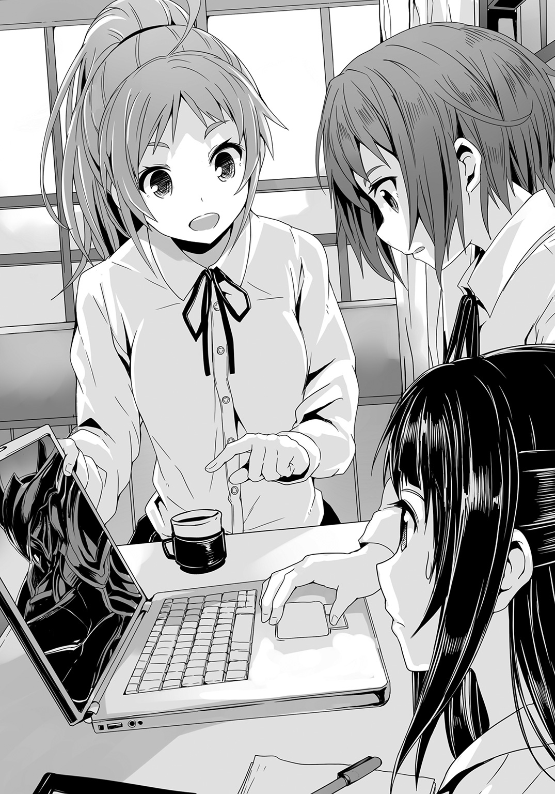

| 神鎧猟機ブリガンド 2 | |
| 榊一郎 | |
この本は縦書きでレイアウトされています。
また、ご覧になる機種により、表示の差が認められることがあります。


 ダッシュエックス文庫DIGITAL
ダッシュエックス文庫DIGITAL
神鎧猟機ブリガンド２
榊 一郎
序章
路地裏の歪な暗闇に――荒い息遣いが響く。
「はっ......はっ......はっ......」
生温く濡れた息が、細く長く吐き出され、夜気に溶けて消えた。
男は努めて呼吸を落ち着かせながら、垢じみて汚れた上着の襟を搔き合わせる。まるで寒さを堪えるかの様に、首を竦め、顔を服の内に沈めて身を震わせた。
多少、気温の下がる深夜とはいえ、今が初夏である事を思えば――それは季節外れの滑稽な行為と、傍目には映るかもしれない。
だが今、路地には男の行為を嘲笑う者もいなければ、その不審さや不潔さに眉を顰める者もいない。午前零時を越えても車通りの絶えない表通りと異なり、路地裏には、男の他には人影もなく、奇妙な程の静寂がわだかまっていた。
「はぁっ......はぁっ......はぁ......あ......」
ゆっくりと呼吸が緩くなっていく。
だが男の顔には、悲痛ともいえる強張った表情が貼り付いたままだ。
それは追い詰められた者特有の――泣きながら笑うかの様な、最早、自分がどちらを向いて歩けばいいのかすら分からなくなっている者の、表情である。既に男の中で己を支えるべき芯は折れてしまっていた。殆ど本能的な反射行動のみで男は逃げ回り、そうしてこの路地裏に逃げ込んできたのである。
「はぁっ......はぁっ......ああぁ......」
男は、大型のゴミ箱の脇に身体を丸めて座り込む。
更に両足で地面を搔いて、少しでもゴミ箱の陰に自分を押し込もうとする。表通りから差し込んでくる、わずかな街灯の光――それに触れる事すら怖れるかの様に、彼は、ひたすら手足を折り畳み、小さくなった。
「............」
しばらくの間――男は饐えた匂いの漂う暗がりで、微動だにしなかった。そうしていれば、風景の一部に同化してしまえると信じているかの様に、ただただ、息を殺してそこに座っていたが――
「う......」
不意に、その身体が震えた。
最初はびくりと、何かに驚いた様に。
次に――若干の間を置いてから、がくがくと、何かの発作を起こしたかの様に。
「うぐ......ぐ......ぐぎ......ぎ......！」
己の内で膨れあがる何かを堪えるかの様に、男は激しく痙攣しながら濁った呻き声を漏らした。額には今にも破裂しそうなくらいにはっきりと血管が浮かび上がり、嚙み締めた歯が耳障りな音を立てる。白目を剝き、口の端から泡を噴く様は、凄惨の一語に尽きる。何も知らない人間が見れば、薬物か何かの禁断症状だと誤解したかもしれない。
やがて男は耐えきれなくなったのか――自分が背にしている建物の壁に、手を掛けた。
「がっ......かっ............」
容赦なく力を込めて、指でコンクリートを搔く。
生爪が剝がれ、血が流れた。しかし男は構わず壁を引っ搔き続ける。幾筋もの血の跡が壁に描き込まれ、おぞましい模様を描いていった。
「......ぎ......ぎぃっ......！」
壁に亀裂が走る。
男を中心として放射状に刻まれる無秩序な割れ目。続けてコンクリートの壁が陥没する。剝離した大きな塊が幾つも地面に落ちて、更に割れる。中から現れた鉄筋は、異様な形にねじくれていた。
一体、どんな力が加わったのか。
壁に単純な衝撃や圧力を加えただけでは、こうはなるまい。
しかも――その破壊力を加えたモノが、見えない。
勿論、男の素手にそこまでの力はなかろう。また陥没も男が搔いた部分とは少しずれている。壁に亀裂を走らせているのは、男の指とは別の何かだった。
亀裂は更に男の頭上へと伸びていった。
二メートル。三メートル。四メートル。五メートル。
男が手を伸ばしても到底届かない様な高さへと。
「......い......ぎぎ......ぎ......」
もし――少し離れた所からこの様子を見る者がいれば、気付いたかもしれない。
男の背後で広がる亀裂......それがある種の形に沿っている事を。
身長六メートル弱の、大まかな、人型に。
「......あく......ま......」
呻き声の間からこぼれ落ちる一言。
『悪魔』――それは、そう呼ばれていた。
物理法則の埒外ともいうべき怪現象を起こす何か。大抵の場合にそれは破壊を伴い、窓硝子を微塵に粉砕したかと思えば、何の脈絡もなく人体を発火させたりもする。まさしくそれは悪意ある怪物の仕業――悪魔の所業に見えた。
そしてその『悪魔』を己の身に宿す者達を、世間一般では〈悪魔憑き〉と呼んだ。
「......やめ......やめ......ろ......」
暴力的で破壊的な衝動と――それを実現する目に見えぬ『力』。
それは、しばしば〈悪魔憑き〉の周囲に向かう。コンクリートを砕き、鋼鉄を抉り、自動車を投げ飛ばす。もしその威力が人間に及べば、脆弱な人体など一瞬で肉塊に変えられてしまうだろう。
そしてそれを〈悪魔憑き〉は抑制出来ない。
そう。男の中に宿る『力』は、ものの弾みで人を殺すのだ。
「......やめ......」
男は必死にそう訴える。
彼が怖れているのは、しかし己の中の『悪魔』ではなかった。
男の頭の中に響くのは、警報であり、銃声であり、悲鳴であり、咆哮、靴音だった。
それらが象徴し、渾然一体となって描き出す『収容所』の幻像。
〈悪魔憑き〉は、表向き病人という事になっている。
制御出来ない破壊現象も、あくまで病気であり、本人に責任はないという建前だ。だが実際に彼等を収容する施設においての扱いは、患者に対するものではない。囚人――いや、実験動物と言った方が近いだろう。
『収容所』と呼ばれている、あの施設――正式名称はもう忘れた――あそこでは〈悪魔憑き〉という奇怪な現象を解明するために、人倫にもとる人体実験が行われていた。
治療施設などではない。まさしく収容所であり研究所なのだ。
そして〈悪魔憑き〉の症状が進んで、研究者達の手に余る様になれば、『処分』される。
銃で。薬で。確実に。
あの『収容所』は男にとって地獄だった。研究員や警備員達こそ悪魔だった。
己の中の『悪魔』を持て余した〈悪魔憑き〉達が、夜毎に吠え、悶え、時に銃声や悲鳴がそれに混じる。研究に『協力』する時以外、独房同然の病室から出る事は一切許されず、同じ境遇の者達と互いを慰める事すら出来ない。代わり映えしない病室の壁を眺めながら、いつ自分も『処分』されるか分からずに怯える――その意味では、死刑囚ばかりを閉じ込めた監獄に近い。
あの日......男が『収容所』から逃げる事が出来たのは、全くの偶然だった。
何が起こったのかすら、男はよく理解していない。だが施設の壁が溶け崩れ、警報が鳴り響き、研究員達や警備員達が悲鳴や怒号を上げて、駆け回る――そんな混乱の最中だからこそ、男は外に出る事が出来た。
だが幸運と呼べるものは、そこまでだった。
計画性のある脱出ではなかった。だから逃げたあとに身を寄せるあてなどなかった。
『収容所』の外に〈悪魔憑き〉の居場所はない。
政府が報道管制を敷いているとはいえ、〈悪魔憑き〉達が――彼等の中に宿る『悪魔』達が、どんな被害をもたらすのか、市民の多くはそれを知っている。だから〈悪魔憑き〉をそれと知って手を差し伸べる人間など、いない。恩を仇で返される事にもなりかねないからだ。『悪魔』はその力を振るう相手について、善人も悪人も区別などしない。
「やめ......ろ......」
眼には見えない『力』だが、物を壊せば音が出る。
壁に亀裂が刻まれる音が、通行人や近隣の住民に聞き咎められる可能性があった。
このままでは見つかってしまう。
恐らく『収容所』から男が逃げた事は、もう政府や関係各省庁に知られているだろう。
『収容所』の関係者達は男を追っている筈だ。今にも路地の入口に現れて、銃口を向けてくるかもしれない。警告の言葉があれば良い方だ。問答無用で男を蜂の巣にしても不思議はない。彼等にとって男は既に患者ではなく、人間でもなく、見つけ次第に処分すべき疫病そのものであるからだ。
逃げなければ。同じ場所に留まっていれば、それだけ発見される可能性が上がる。
そう思うが......身体が動かない。
迂闊に立ち上がれば、その瞬間、『悪魔』が一層の激しさで暴れ出しそうな気がした。
そして――
「――！」
路地裏にわだかまる闇を光が切り裂く。
見つかった！ ――男は悲鳴を上げながら、頭を抱えて地面を転がった。
「ちょっと、大丈夫？」
だが、投げ掛けられたのは――彼の安否を問う若い女性の声だった。
「............？」
恐る恐る顔を上げる男。
路地の入り口に一人分の人影があった。
手にしたスマートフォンのライトを男の方に向けている。逆光気味なので、その詳細はよく分からないが――声と輪郭から若い女であろう、という程度は分かった。
「なんかすっごい音がしたんだけど。なんかあった？」
特に物怖じもせず、むしろ馴れ馴れしい口調で男に話し掛けてくる女。
「おじさん？ ねえ――大丈夫？」
女はスマートフォンを降ろし、地に伏せたままの男の方に歩み寄ってきた。
ようやく、その姿が男の眼にも分かる様になる。
歳の頃は二十歳過ぎだろう。派手な金色に染めた髪に、きつく掛けたウェーブ。化粧は濃く、眼を強調するためか周りが真っ黒に縁取られている。スマートフォンを持つその指の爪には、ごてごてと盛りつける感じのネイルアートが施されていた。
夜遊び中の学生か。さもなくば仕事帰りの風俗嬢か。
「おじさん？」
女は短すぎるスカートも意に介さず、男の前にしゃがみ込んだ。太股の間から意外にも白一色の下着が覗く。もう二年以上も女の肌に触れていなかった男には、それがひどく卑猥なものに見えた。
「ちょっ、おじさん、血が出てんじゃん！」
男の指先に気付いたのだろう――娘が驚いた様子でそう叫ぶ。
反射的に自分の手を身体の下に隠し、這いながら後ずさる男。欲情するのと同時に、自分の中で再び『悪魔』が暴れ始めようとする気配を彼は感じていた。
「駄目だよ、ちゃんと――」
女の手が、男に向けて差し伸べられる。
ネイルアートを施された指先が、薄闇の中でやけに印象的だった。
「く......来るな！」
そう叫ばせたのは、男の中に残っていたなけなしの――最後の善意だったのだろう。
女は普通に男の事を案じてくれていた。〈悪魔憑き〉と知らないが故ではあろうが、それでも男が久し振りに触れた善意だった。この女を巻き込んではならない。咄嗟にそう思ったのだ――それは全くの無駄になったが。
「おじ............」
女の声は唐突に途切れた。
「............」
代わりに男の耳に届いたのは――硬いものが砕ける音と、濡れた何かが飛び散る音。
濃厚な鉄錆の――血の匂いを男の鼻が感じたのは、それから数秒後の事だった。
「あ......ああ......あああああ......」
身体の下に隠した手に、彼は奇妙な感触を覚えていた。
まるで何かを――柔らかいアルミ缶でも握り潰したかの様な手応え。だが今の男の手は何も握ってはいない。血に塗れた指先がただ虚空を搔いて震えるだけだ。
「ああああああああ............」
女は倒れていた。
首から上は――ない。それは赤黒い泥になって辺りにばらまかれていた。
ほんの数秒前、男に向けて差し出された手は、壊れた機械の様に、無意味な痙攣を続けている。指先は血に塗れ、そこを飾り立てていたネイルアートは生々しい赤の中に埋没してもう見えない。
「あああぁぁ..........................................あ？」
男は――身を起こして首を傾げた。
奇妙な感覚だった。何かがひどく気に掛かっていた様な気がするのだが、今は、全く何も感じない。何かのスイッチが切り替わるかの様に、見えるもの、聞こえるものはそのまま、しかしそれらに対する認識が男の中で決定的に変わっていた。
「......ふむ」
男は倒れた女の太股を見遣った。
無防備に開かれたままの両足は、まるで男を誘っている様にも見える。だが別段、昂ぶりは生じなかった。先程、自分が娘の股間の下着を見て欲情した事は記憶しているのだが......まるで他人の日記でも読むかの様に、そこに実感が伴わない。
女が、もう死体だからか。
だが女が死んだ事そのものにも、さしたる感慨が湧かない。女の示してくれた善意に対しても、特に感慨を覚えなくなっていた。人間が一人死んだ。ただそれだけだ。それ以上の意味を、男は眼の前の事実に対して見いだせない。
「............」
男はしばし茫洋と、娘を――娘だったモノを眺めてから、頰を搔いて、歩き出す。
先程まで意識を支配していた絶望と恐怖すら、もう彼の内にはなかった。
だが......
「あら。かわいそうに」
そんな声に――路地から出ようとしていた男は、足を止めて振り返る。
そこには、一人の少女が立っていた。
地味な暗色のセーラー服に、三つ編みの黒髪。そして眼鏡。
先程死んだ娘と対照的――いかにも地味で目立たない、おとなしそうな印象だ。教室の隅で一人、黙々と読書をしている存在感の薄い同級生。男の遠い記憶の中にも、そんな少女がいたように思う。
何にしても、深夜の路地裏には、ひどく場違いな存在に見えた。
だが......少女は悲鳴を上げるでも、怯えて後ずさるでもなく、躊躇のない足取りで惨劇の現場に足を踏み入れてくる。
頭を失った若い娘の亡骸を一瞥し......しかしその顔には、微塵の動揺も浮かんでいない。
少女はすぐに死体には興味を失った様子で、男の方に視線を戻した。
「ようこそ。新たな段階へ」
そう言って少女は、男に向けて手を差し伸べてくる。
「............アンタは？」
何の装飾も施されていない、白く華奢な指先を見つめながら男はぼんやりと問うた。
「〈悪魔憑き〉よ」
少女は答えた。
気負いも何もなく、ただ、誕生月や血液型を尋ねられて答えるかの様に。
「変わり者の、って枕がつくけれど」
「......？」
「なんて言ったらいいのかしらね。そう......倶楽部の主催者かな。自分探しの」
謎めいた言葉の意味は、大半が男には理解不能だった。
自分と今時の女子高生との間に横たわる、感性の差を感じずにはいられない。持って回った言い方が流行っているのだろうか。
しかし――
「......〈悪魔憑き〉」
ただ一点、これだけは確実に理解出来た。
この少女もまた〈悪魔憑き〉なのだ。ならばこの現場の惨状にも動揺を示さないのは当然であった。この少女の中身は今の男と同じだ。人間が一人や二人死んだところで、慌てたり怯えたりしない。事実を事実として認識している、ただそれだけだ。
「クラブ......？ 自分探し......？」
「素敵でしょ？」
口元に指を当て、少女は小さく笑う。
あどけない微笑みは、どこか蠱惑的な光すら帯びている様に見えた。本当に高校生なのだろうか。もっと年上――人生の酸いも甘いも嚙み分けてきた女性の如き、艶然とした何かを、男は感じていた。
「私は〈悪魔憑き〉が集まる場所を提供しているの」
やはり気軽な口調で、少女はそう告げてきた。
「私達は新たな段階に立った。そして、さらにその先に上り詰める権利を得た。普通の人間にはたどり着けない、さらなる進化の階に」
「進化......」
その言葉を、男は舌の上で転がしてみる。
今の彼にとって、それは不思議と納得のいく――実感を伴う言葉だった。
「でも、個の力では数の力には抗えない。人間は面倒よね。七十億――一日十人殺したって、滅ぼし尽くすには二百万年近く掛かる計算よ。想像しただけで目眩がするわ」
芝居がかったしぐさで少女が肩をすくめる。
単なる妄想と数字遊び、と笑う事も出来るが――男は別の感想を持った。
この少女は二百万年という時間さえ掛ける事が出来れば、それが自分には可能だと考えているのだろう。
逆に言えば、現実的な時間の尺度の中、と限った場合、如何に強力な『悪魔』をその身に飼っているとしても、人間全てに真正面から敵対すれば、敗北するのは必至だ、とこの少女は言っているのである。
数は力だ。それは間違いない。
「〈悪魔憑き〉同士で群れを作る、というのか？」
「情報交換のための集まりよ。少し違うわ」
少女の口元に不敵な笑みが過ぎった。
「群れるのは弱者の習性。知性を持たない獣の法ではそうだけど、私達は違う。ただ身を寄せ合う事と、知恵を寄せ合う事とは違う。今の世の中、獲物を分け合うだけでは生き残れないでしょう？」
彼女は、自分達の『倶楽部』について――小魚が群れを成して、天敵の目を欺くのとは根本的に違う、と説明してきた。いかにも美談の如く語られる『皆で力を合わせる』事とも違うと。
「本当に分け合うべきは情報よ。〈悪魔憑き〉も然り。一人で得られる獲物や情報には限りもあるし。情報の共有と蓄積。それが私達自身の理解にも繫がる」
「俺達の......？」
「〈悪魔憑き〉は一体、何なのか......とかね」
ちょっとした秘密を告げる様に、少女は少し声を潜めて言った。
「まあ......七十億もいて、二千年も三千年も時間を掛けて、人間は未だに自分が何なのか分かっていないのを見ると、私達が自分自身の事を理解出来るのも、随分と先の話なのかもしれないけれど」
「............」
「貴方もうちに来てみない？」
誘う口調はあくまで軽い。
本当にただの倶楽部や同好会に誘うかの様に。
「そう悪いようにはしないわ。法と秩序と正義の御旗のもとに、数に任せて人間は貴方を狩りに来るでしょう。人間の数の暴力から、身を守る術を知るだけでも価値があると、私は自負しているわ」
「情報に対する見返りは何だ？」
男は眼を細めて問うた。
「こちらも情報を集めて提供する義務でも負うのか？ それとも何か――」
労働の様な行為で貢献するのか。
「別に。その気になれば、それでもいいけど。貴方が生き残ってくれればなんでもいいわ。一人増える。それが一番の貢献」
少女は肩を竦めて言った。
「............」
しばし黙考し――男はやがて頷いた。
元より行く当てなどなかった。頼れる相手もいない。追跡者に怯えて逃げ回るのにも飽きてきたところだ。だが現実的にこれからどう生きていくのか、と問われれば明確な方針や目標がある訳でもなかった。
どうせ、失うものはない。
ならば、この少女達の所に立ち寄ってみるのも悪くはないだろう。
「お前、名前は？」
「蒲生亜麻音」
表通りから漏れてくる微かな光を受けながら――自称『風変わりな〈悪魔憑き〉』はそう名乗った。
「新しい世界を照らす明けの明星、〈フォスファー〉を束ねる者よ」
第一章
夜の空気を、けたたましい発動機の音が叩いた。
「っしゃああああッ！」
暴力的な明るさで闇を切り裂く前照灯。だがそれだけでは足りないとばかりに自動二輪のあちらこちらにＬＥＤの光がちりばめられている。その様子はまるで走る電飾だった。
高速道路を爆走する、自動二輪の集団。
車体を大袈裟に飾り立て、必要以上に大きな排気管から騒音をまき散らす。警笛を鳴らしまくり、時折、意味のない叫びすら上げる。違法改造された自動二輪は異形の存在感を醸しだし、特攻服と呼ばれる特注の衣装には、やたらと刺激的な単語が幾つも刺繡されていた。
此処に自分達が存在するという事を、音と光で主張せずにはいられないのだろう。
典型的な暴走族である。いっそ古典的と言ってもいいかもしれない。
「どけやぁ！ おるぁ!!」
常識的な速度で走る一般車両を煽り、少年達は先を争う様にして加速する。
危険な行為に耽溺する事で、本能的に放出される脳内麻薬、その快感に彼等は酔っていた。理屈としては過酷な環境で運動選手の経験するものと――いわゆるランナーズ・ハイと大差はない。
とめどなく湧き上がる全能感。
このままどこまでも走っていける......そんな風にさえ、少年達は感じていた。
「どけ――......あ？」
だが......彼等の暴走は、意外な形で終焉を迎える事となった。
「......!?」
先頭を走っていた少年は、咄嗟にハンドルをきった。
高速道路の真ん中にわだかまっていたそれを回避――傍らを通り抜ける。真夜中、しかも一瞬の交錯であるせいか、それの正体を彼ははっきり視認する事が出来なかった。
事故を起こして停車中のトラックか。
「なんだあれ!?」
後続の少年達も次々とそれを回避して走り抜けながら――驚きの声を上げる。
咄嗟の事で、はっきりと見定める事は出来なくとも、それが、自分達の見た事のないものだという事は理解出来た様だった。
――異音。
地鳴りの様な音と共に、高速道路が震える。
少年達は、一瞬ながら、車体が浮いたのを感じた。
うねっている。高速道路が――衝撃で波打っている。
そのせいで自動二輪が跳ね上げられたのである。波の上に乗るサーフボードの様なものだった。わずか数センチではあったが、タイヤは路面を嚙めずに空を搔き、数台が着地に失敗して姿勢を崩して転倒――火花を上げながら高速道路を滑っていく。
「な、なん――」
二人乗りをしていた少年が、後方を振り返った。
彼は愕然と眼を見開き、自分達を追ってくるそれを見る。
大型トラックが走行してもびくともしない路面が、一歩毎に、陥没してひび割れるのが見えた。異様な足跡を文字通り高速道路に刻みつけながら、それは走っている。
そう。走っているのだ。二本の脚で。
路面を蹴るのは、節くれ立った巨大な脚である。それが支える胴体は奇怪な外骨格に覆われており、高速道路の照明を受けて、その滑らかな表面を輝かせていた。
背丈は五メートル、いや六メートルはあるだろうか。
二足歩行という点においては、人間の疾走する姿と重なるが、全体の輪郭は似ても似つかない。頭部は馬面で細長く、外骨格の継ぎ目には次々と泡が浮かんでは弾けて消えていく。何より人間は自身の身長にすら匹敵する程の長い尾など備えていないだろう。地球上のどこを探しても、こんな生物は見当たらない。
それはどこからどう見ても、怪物だった。
「ヨオオオ――ホオオオオーッ！」
怪物が吠える。
「噓だろォ!?」
少年達は悲鳴を上げた。
追い掛けてくる。振り切られる事なく。時速百キロを超える速度で走る、自動二輪の群れを――高速道路に、点々と足跡を刻みつけながら。
陸上競技の百メートル走における、世界記録は九秒台――時速にすれば四十キロ弱である。怪物の身長が人間の三倍だとしても、空気抵抗や地面の状態を考えれば、単純に速度が三倍になるとは考えにくい。競走馬ですら時速七十五キロ辺りが最高記録と言われているのだ。恐らくそれが『脚で走る』事の限界なのだろう。なのに......
「ホオオオオオッホオオオオ!!」
路面が抉れ、散弾の様にアスファルトの破片が飛び散る。
何台もの車がフロントガラスに破片を喰らい、これを真っ白に染めて蛇行する。立て続けに衝突音が響き、その中の一台が壊れた電装系か何かから発した火花がガソリンに引火したのか――爆音と共に炎上した。
「やべえ、やべえ、やべえよ!!」
「ヨオオオオオ！ ヨオオオオオオ！」
怯える少年達をあざ笑うかの様に、怪物が吠える。
猛烈な速度で手足を振りながら走るその姿は、一見、滑稽ですらあったが――実際に追われる身になれば、笑っている余裕などある筈もない。
「ホオーッホホホホホホホゥ！」
そして――あろう事か怪物は跳躍した。
その代償として高速道路が一際大きく陥没し、怪物の巨体が夜空を舞う。手足を折り畳み、まるで自身を一発の砲弾と化したかの様に空中を滑って――次の瞬間、怪物は暴走族の前に着地していた。
「うわっ............わあああああああああああああああああああっっ!!」
悲鳴を、甲高い制動機の音がかき消した。
自動二輪は次々と転倒し、その車体は火花を上げながら路面を削る。投げ出された少年達は衝撃でおかしな方向に手足を――あるいは首を曲げながら、何度も跳ねて、転がっていく。中にはもう、千切れて幾つもの肉塊に成り果てている者もいた。
「ホウッ！」
怪物が、足元に転がってきた自動二輪を踏み潰した。
噴き出たガソリンが引火して炎を上げるが――怪物は下半身を灼かれながらも、まるで意に介した様子がない。
怪物は更に別の自動二輪を拾い上げ、放り投げる。
地面の上に転がって呻いていた暴走族の一人が、直撃を喰らって、潰れた。暴走族の少年達はいずれももう、立って歩く事すら出来ない。息があっても血塗れで呻くばかりの彼等に、怪物は容赦なくとどめを刺していった。
惨劇の現場に異を唱えるが如く、警笛が鳴り響く。
後続の――あるいは対向車線を走ってきた車が、この惨状を見て停車......更に後方の車が何事かと警笛を鳴らしているのだ。怪物が、うるさいとばかりに自動二輪を拾って投げつけると、トラックの一台に激突し、再び爆発炎上した。
炎と――そして幾重にも重なる前照灯の中に、怪物の巨軀が浮かび上がる。
既に高速道路には車は流れておらず、車を降りた人々が走って逃げたり、携帯電話を取りだして内蔵カメラを向けていたりする。
そんな中――
「............」
怪物は暴れるのをやめると、路面に転がって呻いている少年の一人に近付いていった。
一際派手で『総長』という文字が刺繡されたその特攻服は、彼がこの暴走族の頭目格である事を示していた。
「目障りなんダよ。遅い奴等がチンタラ走ってんじゃネェよ」
怪物は少年の脇にしゃがみ込んで言った。
「......え？」
呻くのも一瞬忘れて少年は眼を丸くする。
「............お......お前......？」
こんな怪物に見覚えはない。声にも聞き覚えはない。
だがその台詞は――その罵詈雑言には、覚えがあった。
「まさか......！」
暴走族同士の抗争は、珍しいものではない。肥大した自意識は、しばしば衝突する。少年達の集団にも敵対する相手がいた。隣町の暴走族。再三にわたって対立し、彼等は殺し合いの一歩――いや、半歩手前でいつも争っていた。
だがそれも、半年前までの話だ。
相手の暴走族は既に解散し、消滅していた。相手側の頭目格を務めていた人物が入院し......そのまま姿を見せなくなったからだ。
『遅い奴等がチンタラ走るな』
それは、その頭目格の口癖だった。
「......〈悪魔憑き〉......！」
その頭目格には、ある噂が囁かれていた。
『奴は〈悪魔憑き〉になっちまった。もう二度と戻ってこねえ』
『他の連中も頭目格に取り付いた悪魔にぶち殺されたって話で』
......等々。
怪現象を発生させ周囲に被害をまき散らす奇病――〈悪魔憑き〉。
特異能力暴走症候群だとか何だとか、小難しい名前が付いてはいるが、多くの人間には〈悪魔憑き〉という通称の方が遙かに通りがいい。そして〈悪魔憑き〉の病状が進行すると、患者は『悪魔そのもの』になってしまうのだとも言われていた。
政府や公的機関はその存在を認めないものの......既にその『人間のなれの果て』『悪魔化した〈悪魔憑き〉』の存在については、噂が世間一般に広まっており、度々、暴走族仲間の間でも話題に上っていた。
少年も、ネット上にアップされた動画や掲示板のまとめ記事を見た事がある。
それらが完全に真実であったのだと、今、少年は知った。思い知らされた。
「く、来るな............」
折れた手足を震わせながら、少年は言った。
既に彼は立って逃げる事さえ出来ない。いや。立てたとしても、走れたとしても、時速百キロの自動二輪に追いつける怪物から、逃げ切れる筈がない。
「とろくせエ奴は生きテんじゃネえヨォ――ホオオ！」
走れない暴走族に生きる意味はない――とでも言いたげに、怪物は少年を笑った。
「てめぇラ、ぶっ潰シテやるヨー！ ホゥ！」
「やめろおおおおおおおおおおおおおおおおおおおおおっっ!!」
振り上げられた怪物の足に向かって、少年は無意味な絶叫を上げた。
高速道路上を時速百キロ以上で走るためか、その足の裏には鉄鋲状の突起が幾つも付いているのが見えた。あんなものに踏まれれば圧死する前に、全身が穴だらけになってしまう。
勿論――怪物は止まらなかった。
少年の視界一杯に怪物の足の裏が広がる。
「ヨオオオオ――フオゥッ!?」
途切れる咆哮。弾ける轟音。
次の瞬間、少年の視界から怪物は消えていた。
「......!?」
最早、唯一動かせる首を巡らせて、少年は怪物の姿を探す。
彼の眼に最初に映ったのは、しかし異形に成り果てた暴走族ではなく......
「............よろ......い......？」
少年のすぐ脇に立っている、それ。
黒く。大きく。そして厳つい。
怪物にも匹敵するその巨体は――端的に言えば『巨人』であった。
闇の中になお濃く浮かび上がる漆黒の体。西洋の古めかしい甲冑を思わせる外観は、曲面主体でありながら、明らかに先の怪物の甲殻とは異なっていた。人工物だ。
しかも、その表面には青白く輝く文字列が音もなく流れている。
その黒い巨人騎士――その向こう側に、ようやく少年は、自分達を襲った怪物の姿を見つける事が出来た。どうやら怪物が少年を踏み潰そうとしていたところに、この巨人騎士が割り込んだらしいのだが......
「......あ......〈悪魔狩り〉か............？」
〈悪魔憑き〉の噂からわずかに遅れて出回った――もう一つの噂。
即ち〈悪魔憑き〉のなれの果てを、狩って回る存在がいると。
正体は不明、動機も不明、だが〈悪魔憑き〉が暴れる現場に現れて、これを斃すという。
「ヨオオオオッ！ ホオオウウウウウッ！」
怪物は高らかに吠えると――巨人騎士に襲い掛かった。
一歩。二歩。三歩。助走はそこまで。四歩目を一際強く踏み出して、路面を大きく陥没させながら、怪物は空中に舞っていた。暴走族を追い詰めた跳躍力――それを怪物は今、前に回り込む事には使っていなかった。
十数メートルの高さから、下に向けて叩き込まれる飛び蹴り。
重力による加速で、命中の瞬間は恐らくは砲撃にも等しい威力になっているだろう。
「――幼稚な」
そんな誰かの呟きを、少年は倒れたまま聞いた。
次の瞬間、巨人騎士は右腕と左腕を十の字に交叉させ――怪物の飛び蹴りを真正面から受け止めていた。
爆発めいた轟音。巨人騎士を中心として放射状に衝撃波が走る。
巨人騎士は大きく路面を陥没させながら沈み込み――しかしそこで止まった。
「ホオオオオオオっ!?」
脚をばたつかせて怪物は巨人騎士から逃れようとするが、素早く動いた黒い両腕が、怪物の両足を摑んで放さない。巨人騎士はそのまま半回転――まるで背負い投げの様な動きで半円を描きながら怪物を高速道路に叩きつけていた。
「グボゥッ............！ ルォアアァァァァ............」
怪物の口から漏れるのは、悲鳴か、嗚咽か。
「速く走るだけが取り柄か。くだらん」
再び少年が耳にしたその呟きは、ひょっとして巨人騎士のものだろうか。
巨人騎士は、身を起こした怪物の頭部を蹴り飛ばす。巨体が数メートル横滑りして、停車中の大型トラックにぶつかり、止まった。
そして――
「さあ。地獄に還る時間だ」
巨人騎士が構えをとった。
右手を前に突き出し――掌底打ちの様に指を折り曲げる。右腕の装甲各部が展開し、全身を循環していた文字列が、動きを早めながらその右腕に纏わり付いていった。
集束される力の強さに怯えるかの如く、空気が震える。
巨人の掌を中心として、風景すら歪んでいるかの様に見えた。
「ま、マて......！」
怪物が懇願するかの様に片腕を掲げる。
だが巨人騎士がそれに応じる様子はなかった。
「喰らうがいい――〈コベット・ファング〉」
巨人騎士の姿がぶれた。
いや。残像の尾を引いて飛び出したのだ。
右腕に――その掌に引きずられるかの様に、黒い巨体が疾駆する。まるで顎の様に怪物の胸部に食い込んだ右手は、一瞬の震えのあと――怪物の背後まで突き抜けていた。
「ひいいいいいいぎいいいいいいいいいいああああああああ!?」
聞く者の正気を根刮ぎ奪い去るかの様な、断末魔。
巨人騎士の右腕は、怪物が背にしていたトラックに身体全体で食い込む様にして止まっていた。
怪物がぐらりと傾く。
次の瞬間、その巨体は崩壊し、白い砂の様になって路面に小山を成していた。
「............」
少年はただただ呆然と――手足の骨折による激痛すら忘れてその様子を見つめていた。
圧倒的で一方的。
巨人騎士はいとも簡単に怪物を斃していた。
しかも......
「......あっ......」
トラックから身を引きはがす巨人騎士。
その右腕に握られているものを見て、少年は短く声を漏らした。
見覚えのある人間の姿。入院して姿を消したとされる、暴走族の頭目格だった。
巨人騎士は――人間には興味がないとばかりに、その頭目格をあっさりと放り出した。
自分の脇に転がってきた頭目格の姿を見て少年は悲鳴を上げる。頭目格は白目を剝き、泡を噴いて、痙攣を続けていた。生きてはいる様だが、このまま意識を取り戻してももう二度と元の生活には戻れまい――見る者にそう確信させる程の壊れっぷりだった。
「......噓......だろ......」
少年は、喘ぐ様にそう呟いた。
信じ難い出来事の連続に、頭がついていかない。
これは現実なのか。頰を嬲る熱風も、耳を聾する轟音も、そして全身の痛みも、何もかもが悪い夢で、本当の自分は布団の中で寝息を立てているのではないか――そんな馬鹿げた想像すらよぎった。そうあって欲しいと彼は心底から思った。
「............」
鋼鉄の巨人が、わずかに身じろぎをする。
その身体が爆裂するかの様に四散したのは次の瞬間だった。だが弾け飛んだ各装甲はそのままばらまかれる事はなく――鎖に繫がれていたそれらは、映像の逆再生を見るかの様に引き戻された。
嚙み合う鋼鉄と鋼鉄。
だがそうして出来上がった姿は、巨人騎士のものではなく、鋼鉄の翼を備えた『鳥』の姿に変化していた。巨人騎士の鎧を組み替える事で現れたもう一つの姿――なのだろう。
耳を劈く高音が吹き抜ける。
ジェットエンジンにも似た音を立てて、その鋼鉄の巨鳥は上昇し――そのまま上空で方向転換して飛び去っていく。
そうしてこの『事件』は終わりを告げた。
暴走族があの怪物に接触してから――時間にすれば五分と経過していない。
悪夢じみた死闘の主役は既にどちらもこの場に存在せず、ただ、凄惨な破壊の痕跡だけがそれを事実だと証明していた。
「............」
少年は泣き笑いの様な表情で夜空を見上げ――遠くから近付いてくる消防や警察の警報音を聞きながら、気を失った。
●
晴れ上がった空から降り注ぐ日差しが――眩しい。
もうすぐ衣替えだった。まるでそれを促すかの様に、太陽も日に日に高くなってくる。
朝の街はどこまでも明るく清々しい。今朝のテレビ放送で確認したところ、今日の平均気温は二十二度、湿度は五〇％――初夏らしい数字だ。程良い気温と湿度は、ただ外を歩くだけでも気持ちよくさせてくれる。
だが――
「おはよう。斯波くん」
「......ああ。おはよう」
若槻紫織が登校途中に出会った彼の顔は、どことなく、どんよりとしていた。
声も、いかにも生返事、といった感じでどこか虚ろだ。
もっとも――紫織としても爽やかで元気潑剌とした返事を期待した訳ではない。むしろそんな反応が返ってきたら、何か具合でも悪いのかと疑うところだ。
彼の名は斯波連志郎。紫織の同級生である。
眉目秀麗、成績優秀、ある一点を除けば、文句の付け様のない少年である。
切れ長の双眸を中心とした端正な目鼻立ちに加え、白とも銀とも言い難い独特の――日本人離れした色の髪を備えているため、ただ佇んでいるだけでも妙に目立つ。十人に問えば十人が躊躇なく『格好いい』と評する外見だった。恐らくそこらの芸能人と比べてもまず見劣りはすまい。
しかし......
「眠そうね」
「そうだな」
微妙に焦点の緩んだ半眼で、連志郎はそう答える。
「また深夜アニメ？」
「なかなか興味深い新番組があってね」
世間一般の想像図からは随分と外れているが、連志郎はいわゆる『オタク』――正しくは『アニメオタク』、略称『アニオタ』だった。それもかなり重度というか重症の。
「『魔法少女ミルキィ・マリン』の映画版と同じ監督なのだが、いわゆる『旅モノ』でね。行方不明になった兄を探して世界中を旅しつつ、様々な人々と触れ合いながら少女が成長していく物語なのだ」
その入れ込みようは、そっち方面に興味のない人間からすれば『引いちゃう』くらいに深い。
しかも彼が好きなのは、どちらかというと魔法少女だの妖精だのが出てくる様な類の話である。例えば今引き合いに出された『魔法少女ミルキィ・マリン』は魔法少女が、お供の妖精と一緒に困った人を助けて回ったりするのだが。
「主人公の少女が天才で、お供の人工知能ロボと一緒にいろいろな機械を作るのだが、ちょっぴりドジなせいで、いつも大事なところで機械が壊れる。そこがまた良い」
真顔で『ちょっぴりドジ』とか言われるといろいろと背中がむずむずしてくるが、まあそれはさておき。
連志郎は、その種のアニメを欠かさずチェックしており、録画機器も複数台所有して再視聴やら映像研究にも余念がない。にもかかわらず『作品は生で見るに限る』とか何とか言って――いわゆる『リアルタイム視聴』というやつだ――深夜アニメは放送時刻にテレビの前で見ると決めているらしく、放送時間が夜中の二時や三時でも起きてコレを見ているらしいのだ。
「......魔法少女じゃないんだ？」
「違うな。彼女の力はあくまで機械の設計と製作に特化していて、不思議要素はない」
「斯波くんってロボットものとか嫌いなんじゃなかったっけ？」
「......僕が嫌いなのは『正義』だの何だの題目を掲げて戦う話だ」
連志郎は欠伸を嚙み殺してからそう言った。
前述の様に、夜更かしが当たり前の生活をしているせいで、彼は大抵、朝は弱い。非常にテンションが低いというか、話し掛けても口調がどこか虚ろである。登校も始業時間ぎりぎりで、少し出遅れれば校門前で生徒会役員や生活指導の先生に摑まってしまう。他の素行は文句のつけようがないため、大抵は見逃してもらえる様だが。
当然――眠そうに緩んでいると、せっかく、綺麗に整った顔立ちも魅力が何割か減じる。
彼を知る女子生徒達からは『残念美形』だの『あれさえなければね』だの『イケメンの皮を被ったキモオタ』だの散々な言われ様だが、当人はまるで気にした様子がないため、改善される気配は全くなかった。
そんな変わり者の美少年と――紫織は訳あって、少し距離が近い。
周囲には付き合っていると思われている様だが、そういう関係ではない。少なくとも紫織はそう思っている。ただし幾つかの秘密を共有しているために、結果として一緒に行動する事や会話する事も多い。それが誤解を生んでいる訳だが、詮索好きの同級生達を納得させるだけの言い訳を、未だ紫織は編み出せないでいた。
なので......
「よぉ――今日も仲良く夫婦で登校か？」
「見せつけてるよね。絶対」
「彼はあたしの！ って感じ？」
「手は繫がないの？」
こうして登校途中にも、同級生達から冷やかしの言葉が投げ掛けられたりする。
「そんなんじゃないってば」
それに対して紫織が投げ返す否定の言葉には、既に慣れというか、ある種の諦観が滲んでいた。もう毎朝の恒例行事化していて何度目になるのかすら分からない。律儀に紫織が反応するからこそ、周囲も面白がって声を掛けているのだろうが――
「............」
連志郎はといえば、どこ吹く風といった態度で反応すらしない。お陰で彼の分まで紫織が否定する事になる。
（何を考えてるのやら......）
まあ恐らくは、その新しい深夜アニメの事なのだろうが。
そもそも連志郎自身は「三次元に興味はない」などと公言する様な性格である。だから紫織と一緒にいても男女交際を疑われる筋合いではない、言い訳の必要もない、くらいに思っているのかもしれなかった。
正直......それはそれで、紫織としてはちょっと不愉快なのだが。
「............」
再び連志郎が欠伸をする。今度はやけに大きく長いが――
「そんなに遅くまでやっているアニメだったの？」
いくら深夜アニメといっても、精々が午前二時か三時、それも三〇分程度である筈だ。さすがに明け方という訳ではないだろう。だが連志郎の眠たげな様子は、まるで徹夜明けの様に紫織には感じられた。
「......ああ。まあ」
珍しく曖昧な返事をする連志郎。
それから彼は――まるで言い繕う様にこう続ける。
「実に良い番組でね。朝方まで繰り返し録画を見てしまった」
それが――しかし紫織には引っかかった。
いかにも今思いつきました、といった感じの言い訳である。そもそも連志郎は問題のアニメの題名すら未だ口にしていない。繰り返し録画を見る程に感銘を受けたのならば、もっといろいろと力説してもおかしくはないのに。
「......噓なんでしょ」
紫織は連志郎の耳元に口を寄せてそう言ってみた。
「............」
連志郎は無言。
だが既に紫織の中では、幾つか要素が繫がって、それは確信に育っていた。
「もしかして、また〈悪魔憑き〉と......？」
「........................そうだ」
誤魔化しても無駄と悟ったのか、短く連志郎は肯定した。
それは紫織と連志郎が共有する、秘密だった。
「昨夜、高速道路で大きな事故があったってニュースでやってたけど」
「ああ。それだ」
連志郎は無表情に頷いた。
今朝の報道番組では、複数の車両による多重衝突事故と報じられたが......何かその内容には違和感があった。現場の映像が映し出されていなかったし、事故を目撃したという人々へのインタビューもなかった。この日本の、しかも都市部での出来事である筈なのに、まるでどこか遠い異国の出来事を報じているかの様な印象だった。
政府は〈悪魔憑き〉について、多くの情報を隠蔽している。
〈悪魔憑き〉の症状が進行した結果――何が生まれるのかという事を。
連志郎が〈魔神態〉と呼ぶ巨大な怪物。〈悪魔憑き〉という病は罹患者を最終的にそれに変えてしまう。大抵の〈悪魔憑き〉はそうなる前に治療の名目で『収容所』行きになるが......幸か不幸か『収容所』に送り込まれる事もなく、また、自身の『悪魔』の暴走によって自滅してしまうのでもなく、生き残った者は、怪物に自らを変じさせる能力が身につくという。
そして、それを狩って回っているのが連志郎なのだ。
彼自身も〈悪魔憑き〉であり――自らの『悪魔』を鋼鉄の巨人〈ブリガンド〉という器に入れる事で制御に成功した希有な例である。恐らくは昨晩も、高速道路で暴れる〈魔神態〉を斃しに出掛けていたのだろう。
〈ブリガンド〉の事は、〈悪魔憑き〉や〈魔神態〉と同様にネットで話題になりつつある。〈悪魔〉を狩る黒騎士、通称〈悪魔狩り〉として。
だが勿論――その中身が斯波連志郎という少年である事は知られていない。
それを知っている人間は、今のところ、連志郎本人と紫織だけだ。
「大丈夫だったの？」
「何がだ？」
「何って――」
紫織は言葉に詰まる。
間抜けな事を訊いてしまった。大丈夫だったからこそ、連志郎はこうして何食わぬ顔をして登校してきているのだ。そもそも彼の裏の顔について――〈悪魔狩り〉の活動について、いちいち紫織が心配する筋合いはないし、口出し出来る権利もない。
ただ――
「やあ、おはよう――二人とも！」
紫織が適当な言葉を探して懊悩していると、そう声を掛けてくる者がいた。
闊達なその声は、初夏の日差しに相応しい。
「――綾」
〈悪魔憑き〉云々の話題は飲み込んで、紫織はその名を呟いた。
校門の脇では小柄な少女が腰に手を当てて、胸を張っていた。
紫織達の同級生にして生徒会長の、相原綾だ。
「おはよう。今日も生徒会の声掛け？」
とりあえずそう応じてみたが――綾は大きく首を横に振った。
「いや。これは自主的なものだ。生徒会とは無関係だから、斯波くんも安心したまえ。今日は重役出勤を責めたりはしない」
「どうも」
連志郎は肩を竦めてそう言った。
こう見えて彼は綾の部下――つまり生徒会役員なのである。肩書きは書記。もっともあまり熱心に活動をしている様子はなく、強引に綾が彼を生徒会に引っ張り込んだだけの様だったが。
「実を言えば、単に君達の姿が見えたから、此処で待っていただけなのだ」
生徒会の仕事がない時には、綾も結構、ぎりぎりで登校してくるらしい。
「ええと」
紫織は綾との『お約束』を思い出して言った。
「とりあえず、綾。今日も可愛いわよ」
「んむ。紫織ちゃんも分かってきたではないか」
腕組みをして頷く綾。
「私とした事が先を越されてしまったが。そういう訳で紫織ちゃん、君も可愛いぞ」
握り拳から、びしりと音がしそうな仕草で親指を立てて綾は言った。
「ありがとう」
微苦笑を浮かべてそう返す紫織。
これが綾の朝の挨拶だった。紫織相手に限らず、綾は、知り合いとは大抵このやりとりをしている。中には自分の容姿に自信のない女子生徒もいて、『嫌味ですか』と食ってかかった事もあるらしいが――綾はその女子生徒相手に『女の子は例外なく可愛いものなのだ』と懇々と説いて、納得させてしまったのだという。
「会長、おはようございまぁす」
「うむ、おはよう」
「会長は今朝もすんごく可愛いですね」
「ありがとう、佐山くんもまた、可愛い！」
「えー、でも今日の髪型、いまいち決まってないんですよぉ」
「髪に頼らずとも可愛いという事だ。だが明日は髪を完璧に決めたもっと可愛い佐山くんが見られるかと思うと、今日も一段と張り合いが出る！」
通りすがりの一年生とそんな会話を交わす綾。
一年生は笑いながら綾に手を振って校舎の中に消えていった。
可愛いから可愛いのだ――的な、かなり強引な理屈なのだが、綾が言うと不思議と嫌味がない。背の低い彼女が尊大な口調で喋る姿が、まるで背伸びをしている子供の様で微笑ましいからかもしれなかった。
「さて。もう予鈴の時間だ、急ごう」
綾は紫織と連志郎を促して歩き出す。
靴を履き替え、階段を上り、いつもの教室へと入った。
途端――
「よう、相原会長！ 斯波！ 若槻！ おはよう！」
やたらに大きな声で、挨拶の言葉が飛んでくる。
教室の後ろの方で、がっしりした体軀の男子生徒が、腕を組みながら紫織達の方を眺めていた。ぼさぼさの髪に野放図な笑顔、見るからに野生児然とした少年で、連志郎とはいろいろな意味で真逆の印象だった。
その隣には眼鏡を掛けた女子生徒の姿もあって――
「おはよう」
落ち着いた静かな口調でそう添えてくる。
どちらかといえば可愛らしい顔立ちの、つまりは童顔の少女なのだが、眼鏡を掛けている事と、先の男子生徒の傍にいるせいか――物腰に大人びた印象があった。
「おはよう、優羽、今日も可愛いな！ 大悟くんも元気だ！」
と綾が即座にそう返す。
「いい天気だしな！ やっぱり朝の空気は気持ちいいぜ！」
「元気じゃなくて、うるさいって言うのよ。これは」
大声でそう言う男子生徒の横で、女子生徒が苦笑気味にそう言った。
風間大悟。
今村優羽。
この二人は編入生だ。編入してきた時から二人一緒で、話を聞いてみると子供の頃から付き合いのある間柄――要するに幼馴染みなのだそうだ。そのためか彼氏彼女というよりも、やんちゃな弟としっかり者の姉、といった雰囲気である。
ちなみに紫織も編入生である。
あとからこの学級に加わったという共通点からか......他の同級生達と比べて大悟や優羽とは会話する機会も多く、二人共、紫織に対して親しく接してくれる。勿論、一番よく話す相手はやはり綾と――そして連志郎なのだが。
いずれにせよ、人間関係については消極的というか、他者を避けてしまうきらいのある紫織にとって、大悟や優羽は有り難い存在だった。
しかし――
「............」
連志郎は、黙って自分の席に着いた。
一応――軽く大悟や優羽に向けて頷く様な仕草は見せたが、反応はそれだけだ。元々あまり愛想の良い少年ではないが、この二人に対しては特に反応が薄い。というより連志郎は大悟の事を煙たがっている様だった。
もう始業の鐘まで一分かそこらといった時間なのだが、彼は鞄からアニメ雑誌を取り出してこれを読み始める。
大悟達の存在など、その時点で忘れ果てたかの様な態度だったが――
「お、最新号か！」
大悟が嬉しそうに連志郎のもとへ歩み寄った。
連志郎はといえば、顔も上げずにページをめくる。露骨に大悟を無視する態勢なのだが、大悟はお構いなしに連志郎に話しかけた。
「今期のアニメ、ヒーロー枠もなかなか期待出来そうだってな！ 最近はなーんかスカした主人公が多かったんで、アニメの方からは遠ざかってたけど、久しぶりの王道作品が三本もあるって話じゃねえか！ 努力、友情、熱血、勝利！ やっぱ基本はこれだぜ！」
恥ずかしげもなく大声で大悟は言う。
優羽の方を紫織が見遣ると――彼女は呆れ顔で肩を落としていた。
見た目通りに大悟は明朗快活、健康優良児......というか、やんちゃな子供そのもの、といった趣味をしている。特に彼は『ヒーロー』を扱った作品が大好きで、常々『俺もいつかヒーローになる！』などと口走っていた。
勿論、普通なら『高校生にもなって何を言っているんだ』と馬鹿にされかねないのだが......大悟の良くも悪くも単純で表裏のないその人柄からか、『ヒーロー』云々の発言も一種の愛嬌として周囲に認知されている。
ともあれ――
「............」
大悟の反応したそのヒーローもののアニメのページを、しかし連志郎は一瞥しただけでめくって、次の記事に眼を通し始める。大悟は慌てた様に身を乗り出して言った。
「あ、こら！ ちゃんと読めよ！ いい事書いてあるぞ！」
「興味ない」
「なんだと、もったいねぇな！」
大悟は憤慨した様子で言った。
「とにかくよく見ろって！ 何だったら俺が解説してやるぜ？」
「僕の購入した雑誌だ。どこをどう読もうと勝手だろう」
「この野郎――ひょっとして、あれか、お前、外で飯食う時に、嫌いなモノがあったら平気で残すタイプだろ!? 金払ったから、何を食って何を残しても自分の勝手だ――とか言って！ 作ってくれた人に申し訳ないと思わねえのかよ？」
「場合によっては完食してもらえない事も想定した上での、外食産業だろう。何でもかんでも全部食べるのはむしろ健康に悪い。既に満腹なのに無理をして平らげるとか、ラーメンのスープを飲み干すとか――」
「馬鹿、お前、ラーメンのスープは最後にご飯ぶっ込んでかっこむのが美味いんじゃねえかよ!?」
「下品な食べ方だな」
「さてはお前、そうやって食った事ねえな？ 一回やってみろ、美味いから！」
「嫌だ。塩分の過剰摂取になる」
「よし、今度俺がラーメンライスの美味い店を教えて――」
「必要ない」
............等々。
段々と二人の話題が変な方向に逸れていくのを、しかし同級生達は面白そうに眺めていた。普段、連志郎はどこか冷淡というか、他人を寄せつけない様な空気を纏っているのだが、大悟と喋っていると途端に親しみが湧く感じになる――というか、極端と極端が相殺し合う感じで、妙に微笑ましい雰囲気になるのである。
「ほら、大悟。いい加減にしなさいよ」
一周巡って再びヒーローもののアニメに話題が戻ってきたところで、優羽が仲裁に入る。
「なんだよ優羽。今いいとこなんだって」
「もう予鈴が鳴るから、あとにしなさい」
大柄な大悟の襟首を摑んで、優羽が引っ張る。
この幼馴染みには何かと弱いのか――斜めに傾いた体勢で席に戻りながら、大悟は尚もヒーローもののアニメについて視聴の有意義さを説き、連志郎はこれを無視して再びアニメ雑誌に眼を落とす。
本当にこの流れもいつもの事で――大悟が席につくと、まるで待っていたかの様に、予鈴が鳴り響いた。
●
昼休み――保健室は、不自然な程に静かだった。
元々騒がしい場所ではないし、校舎の隅に位置する事もあるのだろう。生徒達の声も届かず、まるで世界の果てにあるかの様に、外からの音が一切入ってこない。微かに漂う薬品の匂いと、その静けさがどうにも苦手で、紫織は震える様に小さく身じろぎをした。
今、部屋の中には二人分の人影しかない。
一つは紫織。
そしてもう一つは養護教諭である。
「改めまして。東城美沙紀よ。よろしくね」
差し出された名刺を――紫織は、ぎこちない手つきで受け取った。
養護教諭から名刺を貰うというのも稀少な経験であろうが、その名刺には校名も養護教諭という肩書きも見当たらず、代わりに『ＫＵＳＡＮＡＧＩ』そして『第一情報局』の文字が、美沙紀の名前の上に印刷されていた。
「あの。字が違うみたいですけど」
紫織は......ふと目についた部分について尋ねてみた。
保健室の扉の上には、管理責任者として養護教諭の名前が刻まれた樹脂製の表札が掲げられている。『東条美咲』――読みは恐らく同じなのだろうが。
「一応、潜入任務だから名前は変えているの。音は同じだから呼び間違える事はないわ。あまり気にしないで――あ、冷めないうちにどうぞ」
「......はい」
勧められて珈琲を一口含む。
「............」
紫織はもう一度名刺を見た。
『ＫＵＳＡＮＡＧＩ』――それは日本政府が作り上げた非公開組織の名称だ。
本来ならば紫織は存在すら知らない筈だったが、連志郎の関係者からその名前だけは一度聞かされていた。一応、美沙紀に対しては、初めて聞かされた様な表情を取り繕ってみたが、上手くいったかどうか自信はない。
草薙機関。
いわゆる〈悪魔憑き〉問題を裏で一手に引き受けている組織であり、『収容所』にも多大な影響力を持っている。端的に言えば紫織の『退院』に関する許可を出したのもこの草薙機関なのだそうだ。
そしてその後――密かに、監視を続けていたのも。
美沙紀はそこから派遣されてきた監視者なのだと自分の事を説明した。自分に監視がついているだろう、という程度の事は紫織も想像していたが......養護教諭がその監視者なのだと知ったのは、今日、美沙紀に呼び出されたからだ。
「こうして直に話をするのは初めてね、若槻紫織さん」
柔らかい微笑を浮かべて美沙紀は言った。
監視者というと、何となく紫織は黒スーツにサングラスの、強面な中年男性、という想像図を脳裏に描いていたのだが――さすがにそれは陳腐に過ぎた様だ。眼の前の美沙紀は、フレームレスの眼鏡を掛けた、いかにも頭の良さそうな雰囲気を持った女性である。
「私は貴女の事をいろいろと知らされています。ちょっと気味が悪いかもしれないけど、仕事なの。許して頂戴」
「......はい」
許すも何も......そんな権限は紫織にはない。それは実力で相手を無理矢理ねじ伏せる事が出来る立場の者にだけ許された、特権だった。少なくとも基本的人権の殆どを無視される〈悪魔憑き〉患者に、それはない。
紫織は〈悪魔憑き〉だった。
早々に発病が確認され、治療と称して『収容所』に入れられた。その後はただ病状が悪化する一方で、いずれ、危険と判断されれば実験動物と同様に『処分』される筈だった。
だが、ある事件を境に紫織から〈悪魔憑き〉の症状が消える。
これは他に類を見ない事例であった。〈悪魔憑き〉は重症化する事はあっても逆はない――少なくとも以前にそうした事例は確認されていない。だからこそ、紫織は実験的に『退院』を許され、ごく普通の女子高生と同様の生活を送っている。親とは電話もメールも一切やりとりしないままの一人暮らしを『ごく普通』と称していいのかどうかには、疑問が残るが。
「あまり驚かないのね」
「なんとなく分かってたので」
紫織は珈琲を更に一口飲んでから続けた。
「でも、あの......私が言う事じゃない様な気がするんですけど......こういう事って本人にバラしてもいいんですか？」
「よくはないわね。本当を言えば、黙っておきたかったのだけれど」
美沙紀は口をつけるでもなく、右に左にと弄ぶ様に珈琲カップを傾ける。
細く長い溜め息をつく彼女の姿は、どこか疲れている様にも見えた。
「出来れば、貴女には普通の生活を、普通の感覚で送らせてあげたかったのだけれど――こうも何度も外泊されたり、見失ったりが続くとね」
「すみません」
首を竦めて、紫織は言った。
外泊というのは以前、連志郎の家に泊まった事だろう。自ら望んでの事ではなかったが、詳しい事情をこの草薙機関の監視者に話す訳にはいかなかった。連志郎との関係について、妙な誤解をされているかもしれないが......そこは諦めて誤解させたままにしておくしかないだろう。
「ああ、ごめんなさい。あなたを責めるつもりはないの。監視をしているのは、あくまでこちらの都合だし。つい愚痴っぽい事言っちゃったわね」
そう言って苦笑する美沙紀。
物腰は穏やかで、紫織に対する態度もむしろ優しげに見える。
これが......紫織には少し意外だった。『収容所』にいた警備員や研究者は、皆、紫織を実験動物の様に扱っていた。少なくとも人間らしい気遣いをしてもらった記憶はない。
だが美沙紀は紫織を元〈悪魔憑き〉患者と知った上で、普通の人間に対する様な態度をとっていた。勿論、そういう演技をしているだけなのかもしれないが、それはそれで、演技をしてみせる程度には、紫織の人格を尊重しているとも言える。
「私達はこの先も貴女を監視下に置いておかなければならない。〈悪魔憑き〉については、まだまだ未知な部分が多いわ。あなたはその中でも、症状が確認されなくなった極めて特殊な事例。出来る限りのデータを集めたいのが本音なのね」
「はい。分かります」
「けれど、二十四時間の監視体制も、予算や人員の問題で難しい」
〈悪魔憑き〉関連の事件は増加する一方で、草薙機関の権限や規模を拡張するのが、それに間に合っていない――追いついていない、というのが現状であるらしい。予算一つ増やすにしても、いちいち金の流れについて隠蔽のための手順を踏まねばならない非公開組織の弱点だった。
「だから、いっそのこと貴女に『協力』をお願いしたいのよ」
「協力......ですか？」
「有り体に言えば、貴女の方から、私に日常の変化や出来事を報告してもらいたいの」
かなり思い切った提案だった。
監視している側が監視対象に報告を求めるなど――本末転倒ではないだろうか。そもそも紫織が隠し事をしたり、虚偽の内容を報告したらどうするつもりなのか。それを確認出来ないからこその『協力』要請である筈だ。
美沙紀は――草薙機関は、そこまで紫織の事を信用しているのか。
それとも何か、別の監視方法を平行して行う準備があるのか。
「いきなりこんな事を言われてもとまどうと思うわ。私の事も、まだ信用してもらえないでしょう？ 返事は今すぐでなくていいから」
戸惑う紫織に、美沙紀はそう言って再び笑ってみせた。
口調にも声音にも、不自然な感じはない。少なくとも紫織には、美沙紀が噓をついている様にも思えなかった。美沙紀は紫織を対等に、一人の人間として見ている――少なくとも見ようとしている。
「なんだか変わった人ですね。東条先生」
ふとそんな言葉が口をついて出ていた。
「いくら〈悪魔憑き〉を研究してるからって......こんな風に研究対象に近づく人は少ないんじゃないですか？」
危険だという以上に、対象に感情移入しかねない関係は、正確な情報を集める上で障害になる。〈悪魔憑き〉の研究者ならば尚更だ。『収容所』での非人道的な扱いを喜ぶ事は勿論ないが、合理的ではあったのだろう――と紫織は思う。
「私達の組織は本来、〈悪魔憑き〉の社会復帰を目的に結成されたものよ」
素直な感想を受けて――美沙紀は表情を引き締めた。
「今のところ、その道は閉ざされているに等しいけれど......貴女がその最初の事例になるかもしれない。私の個人的な考えとしては、貴女という存在に、希望を感じているの」
「希望......」
紫織にとっては、懐かしいともいえる言葉だった。
もう随分と口にしていなかったし、聞く機会もなかった様に思う。
「組織は貴女を含め〈悪魔憑き〉に強い興味を抱いています。それにはいろいろな意味があるけれど、私は〈悪魔憑き〉の人々を普通の生活に戻したい」
カップを机の上に置いて、美沙紀は紫織の顔を正面から見据える。
「それが出来るに越した事はないの。だから貴女には出来るだけ普通の生活を送ってほしいし、それが可能だって事を私の上司や他の偉い人に報告して、理解してもらいたい。私達の組織の、本来の在り方に戻りたいのよ」
「............」
少しだけ紫織は驚いていた。
こうも真っ直ぐに話をされるとは思ってもみなかったのである。
（まじめな人......なのかな）
そんな風に思ったりもする。
紫織を懐柔したければ、もっと他の方法があるだろう。そもそも監視の事を打ち明ける必要もない。監視の手が足りないなら、紫織に監視体制の外に出ないようにと強要してもいいのだ。どうせ紫織の立場でそれを断る事など出来はしない。
だが美沙紀は、その方法を選ばなかった。
むしろ効率面や確実性からすれば、悪手とも言うべき方法をとろうとしている――紫織の事を一人の人間と認めているが故に。
紫織は口元が――ほんの少しだがほころぶのを感じた。
「希望って......良い言葉ですよね」
「――え？」
「希望があるのなら......監視される甲斐もあります」
「そう言ってくれると助かるわ」
紫織の苦笑に美沙紀もまた苦笑で応じる。
連志郎絡みの事はやはり報告する訳にはいかないだろうが――それでも美沙紀にならば彼女の言う『協力』をしてみてもいいのではないかと思った。
「報告って......メールか何かで送ったらいいんですか？」
「ええ。あとで連絡先を送っておくわ。貴女の携帯のアドレスは分かっているから」
冗談めかした口調でそう言う美沙紀。
携帯のメールアドレスどころか、電話番号も住所も学校の成績も......書類を調べて分かる程度の情報ならば全て美沙紀は持っているのだろう。
そして――
「......若槻さん」
保健室を出ようとしたところで――呼び止められた。
「はい？」
振り返る紫織に、美沙紀は膝を揃え、その上に手を置いて、頭を下げてきた。
「ありがとう」
「あ......はい」
戸惑いがちにそう応じる紫織。
相手がどんな立場の人間であれ、素直にお礼を言われるのは......悪くない気分だった。
●
放課後の生徒会室は、紫織にとって一つの憩いの場だ。
部活に入っていない紫織は、放課後にこれといってやる事がない。かといって真っ直ぐ家に帰っても、狭苦しいアパートで一人ぼんやりと過ごすだけだ。
優羽や大悟は用事があるらしく、放課後はすぐに帰ってしまう。他にはっきり紫織の感覚で『親しい』と言える友人は綾ぐらいだが――その綾が生徒会室の主なのだ。ついでに言えば書記として連志郎もいる。
最初は綾に連れられてなんとなく生徒会に顔を出していた紫織だが......今では役員でもないのに生徒会室に入り浸るという、よく分からない立場になっていた。ちょっとした雑用なら手伝う事も出来るので、他の役員達も紫織の存在に殊更目くじらを立てる事もなく、受け入れてくれている。
今では生徒会室で下校時刻まで時間を潰す事は、紫織の日課になっていた。
「会長会長会長！ 若槻先輩も！ ほら、これです、これこれ！」
綾の書類整理を手伝っていたところに、一年生の執行委員が一人駆け寄ってきた。
手には小型のノートパソコンを開いた状態で持っている。インターネットの動画サイトが画面一杯に表示されていた。
「んん？ これってどれかな？ 夏美ちゃん」
「あれですよ！ あれあれ！」
「指示代名詞ばかりじゃ話は伝わらないな」
「だから、これですって！」
一年生の名前は沢渡夏美という。
彼女の興奮と連動するかの様に、ポニーテールにまとめられた髪が、ぴょこぴょこと跳ねていた。生徒会でもひときわ明るく、人懐っこい少女である。紫織にもすぐに懐いてくれて、いろいろと話しかけてきてくれる。ちょっとそそっかしいところはあるが、愛嬌たっぷりの可愛い後輩だった。
「ほらほら！ 例の〈悪魔憑き〉と〈悪魔狩り〉の動画ですよ！」
「――！」
紫織は心臓が大きく跳ねるのを感じた。
まずい――そう思いつつも、反射的に連志郎の方を見てしまう。だが彼は変わらず、アニメ雑誌を静かに読みふけっていた。顔を上げようとすらしない。
まるで夏美の声など――〈悪魔狩り〉の一言など耳には届かなかったかの様である。だが、聞こえていない筈はないだろう。生徒会室はそう広い部屋ではないし、誰かの声が埋没してしまう程に騒がしくもない。
「そういえば、皆がいろいろと騒いでいたね」
「この前の事件ですよね！ もうすごかったみたいですよ！ 街中で〈悪魔憑き〉同士が大バトル！ アタシも見たかったのにぃ」
「物騒な事を言うものではないよ」
綾は夏美を窘める。
ふざける事も多いが、なんだかんだ言っても綾は常識派である。だからこそ教師からの信頼も篤いし、生徒会長を務めていられる。
「死者が出なかったのが幸いなぐらいなのだから」
「あ......そ、そうですね。ごめんなさい」
一転して飼い主に叱られた子犬の様に眼を伏せる夏美。本物の尻尾でもあれば丸めて足の間に隠していた事だろう。綾はしかしそれ以上、夏美を責める事もなく、むしろ興味深そうにノートパソコンの画面を覗き込んだ。
「で、これがその事件の動画なのかな？」
「あ、そうそう！ 近所の人が撮影したんですって！」
再び元気を取り戻して夏美が言った。
喜怒哀楽の切り替わりが、やたらに早い少女である。
他の生徒会役員も興味があるのか、夏美とノートパソコンの周りに集まってきて、そこに繰り返し再生されている映像に見入った。
「これが......」
半月程前――〈悪魔憑き〉の〈魔神態〉が市内に現れた事件。
大勢の人が現場に居合わせ、大きなニュースになった。場所が同じ市内だった事もあり、今でも教室ではたびたび話題になる。公式機関の発表では、例によって『某国のテロリストによる破壊活動』となっていたが――誤魔化しの部分が大きければ大きい程に、噂はより迅速、かつ広範囲に出回ってしまうものだ。
しかも今回は夏美が見つけてきた様に、ネットに動画や写真が証拠として幾つかアップされている。合成だ、捏造だ、という意見も散見されるが、これらを本物と信じる者の方が多い様だった。
紫織も、その事件についてはよく知っている。
その場に居合わせたのだから当然だ。暴れる半透明の〈悪魔憑き〉も、それを斃した黒い〈悪魔狩り〉の事も、紫織は恐らく、他の誰よりも深く知っている。
「斯波先輩、斯波先輩、先輩も一緒に見ましょうよ？」
どこか得意げな口調で、夏美が連志郎を誘う。
相手が、その動画に映っている〈悪魔狩り〉の中身だとも知らずに。
「結構」
案の定――連志郎は顔も上げずにそう言った。
「えー、せっかく見つけたのに」
頰を膨らませる夏美の横で......紫織は背中に冷や汗をかいていた。
人懐っこい夏美の性格は、彼女の長所だと紫織は思うが......それも時と場合による。連志郎は滅多な事では激昂したりしないだろうが、それでも〈悪魔狩り〉について、事情も知らない第三者が好き勝手な事を言っていれば、良い気はしないだろう。
「いいじゃない。斯波くん、こういうの興味なさそうだし」
そう言って夏美の意識を画面の中に向ける紫織。
ちょうど――動画は、公園の風景と、その両端に二体の異形を収めていた。
「こっちが〈悪魔憑き〉みたいですよ！」
「んん？ なるほど――これはすごいね」
激突する異形と異形。
夏美が指したのは半透明の、ガラスのような体を持つ〈魔神態〉だ。その姿は常に揺らぎ、色を変じ、カメレオンのように周囲に溶け込んでいる。
「なので、こっちが〈悪魔狩り〉ですね！」
対峙するのは漆黒の甲冑――そう表現するのが最も相応しいだろう。鋼鉄の質感を備えつつも、滑らかな曲線で描かれた輪郭。しかも腕や腰など、装甲各所の表面に光る不可思議な文字列が流れている。それは表面の模様そのものが意志を持って動いているかの様な、異様な光景だった。
（〈ブリガンド〉......）
紫織は心の中でそう呟いた。
神鎧〈ブリガンド〉。それが鋼鉄の巨人、〈悪魔狩り〉の本当の名だ。〈悪魔憑き〉を喰らう力を持ち〈魔神態〉をも斃す――怪物の中の怪物。

連志郎の中の『悪魔』を御するために作られた鋼鉄と魔術の器。
「んん？」
ふと綾が首を傾げる。
「〈悪魔憑き〉と〈悪魔狩り〉は別物なのかな。見る限り、雰囲気が全然違うけれども」
「どうなんでしょう？ でも〈悪魔憑き〉とケンカ出来るとか、すごいですよね！」
「両方とも〈悪魔憑き〉なんじゃないかって言われてるぜ」
「そうなの？」
「そうでもなきゃ、殴り合いなんか出来ないだろ」
動画を見ながら、生徒会の執行委員達が口々に感想を述べる。
彼等は純然たる興味で以て動画を見ている様だが――紫織にしてみれば迂闊な一言が連志郎から余計な反応を引き出しやしないかと、気が気ではなかった。当の本人は、やはり我関せずといった様子でアニメ雑誌を読み続けているが......その心臓の強さが、紫織は心底羨ましかった。
「なるほど。同じ動物同士、種族同士で争うのは珍しくない。そうでないと説明のつかない大きさだし、どちらも〈悪魔憑き〉というのは的を射ているように思うね」
「じゃあ、やっぱ〈悪魔狩り〉も化け物なのかなあ」
「............」
紫織は咄嗟に口をついて出かけた否定の言葉を――呑み込んだ。
生徒会の面々は〈悪魔狩り〉の正体を知らない。だから今の一言も特に他意のない、単なる感想なのだろう。
正体不明の異形。化け物。
何も知らない人々からすれば、〈悪魔憑き〉も〈悪魔狩り〉もさしたる違いはないだろう。常識を逸脱した存在は、一律に恐怖の対象となり得る。〈悪魔狩り〉の尋常ならざる力が自分達の方へと向かないという保証は、どこにもないのだ。
しかし......
「けど、〈悪魔狩り〉は〈悪魔憑き〉をやっつけてくれるんですよ？ 人間の味方じゃないんですか？」
夏美はむしろ能天気な口調でそうも言った。
「対立の結果として、偶然人間の利益になっているとも考えられるね」
腕を組んで綾が応じる。
「例えば、てんとう虫の中には稲を荒らすアブラムシを食べるため、益虫と呼ばれる種がいる。けれど、彼等は別に人間のためにそうしている訳ではない。単純に餌を食べた結果、それが人間に利益をもたらしているだけだ」
「〈悪魔狩り〉も〈悪魔憑き〉をたまたま退治してるだけなんですか？」
「んー......それは〈悪魔狩り〉本人に聞いてみないと分からないね」
綾が肩を竦めた。
「けど、会長の言う事も分かるよな。〈悪魔狩り〉って、周りの事なんて関係なく暴れて〈悪魔憑き〉を倒そうとしたんだろ？ 人間を守ろうとか、そんな事考えてないんじゃね？」
それはその通りだ。
〈悪魔狩り〉は――連志郎は、人間を守るために戦っている訳ではない。
だから紫織も彼を、正義の味方の如く、人々に賞賛して欲しい訳ではない。正義の味方の様に言われるのは連志郎が最も嫌う事なのだとも知っている。生徒会の執行委員達が何を言おうと、紫織が異を唱える筋合いでもない。
だがそれでも......紫織は、連志郎が得体の知れない怪物と同じ様に言われるのは不愉快だった。彼も人間なのだ。深く深く傷ついた――傷ついたまま、それを癒やす事すら出来ずにいる人間なのだ。
だが、それを皆に告げる事は出来ない。
それだけは――絶対に。
だから何を言われても、言われるがままに受け入れるしかない。悔しいが、連志郎本人が黙っている以上、いかに不本意な言われようだとしても、紫織にはそれ以上、何も言えなかった。
唇を嚙む紫織。
その時――
「出た、〈ブレイバー〉！」
動画を見ていた男子生徒の間から歓声が上がる。
画面に大写しになったのは、〈ブリガンド〉よりさらに人工的で、近代的な形状の人型機械だった。それは〈悪魔狩り〉を糾弾するかの様に指差し、逃げ惑う群衆を背中に庇って立っていた。
「男の子って、こういうのやっぱり好きなの？」
夏美が興奮気味の男子達を見て首を傾げる。
「だって巨大ロボットだぜ！ 滾るよなあ！」
「浪漫だよ浪漫」
「これこそ正義の味方って感じだよな。〈悪魔狩り〉よりよっぽど」
大悟程、長々と熱中する事はないにしても、男の子なら一度はヒーローものにはまった経験があるのだろう。成長するにつれ、子供っぽいからと作品から卒業はしたが、幼い日に覚えた興奮は、彼等の中に未だ熾火の様に燃え続けているのかもしれなかった。
「おお」「すげぇ」などと口々に感嘆の声を漏らす男子生徒達。その後ろで女子生徒達は顔を見合わせ、理解出来ない――とでもいう様に苦笑を交わしていた。
画面の中の戦いは、一つの区切りを迎えようとしていた。
〈悪魔狩り〉と〈ブレイバー〉が共闘し、最後には半透明の〈悪魔憑き〉を撃破する。
〈悪魔憑き〉の姿が幻の如く消え失せ、見物する人々の間から拍手と歓声が沸き上がる中......その動画は終了した。
「ふむ。興味深い動画だった」
「ですよね!?」
綾の前に夏美が身を乗り出して笑う。
実に得意満面といった表情――『褒めて褒めて』と言わんばかりである。彼女に尻尾があれば千切れんばかりに振っているだろう。
しかし......
「時に夏美ちゃん。この動画、すぐに見つかるものなのかな？」
「いいえ。苦労しましたよぉ。動画サイトにアップされても、すぐに削除されちゃって。だからログをたどったり、あちこち書き込んでレスを待ったり。不肖、沢渡夏美。全力を尽くして情報収集致しましたぁ！」
何故かびしりと敬礼してみせる夏美。
〈悪魔憑き〉に関する報道は、どこからか規制がかかっているという噂だ。テレビでもラジオでも巨大な怪物――〈魔神態〉については一切触れられないし、〈悪魔憑き〉という言葉が公共の電波に乗る事自体が非常に希だ。
ネット上でも同様で――夏美の言う様に、〈悪魔憑き〉に関連する書き込みなどは、何故かすぐに削除され、アクセス出来なくなってしまう。動画を見つけた夏美が興奮気味だったのも、そうした状況であるが故だ。
「それはご苦労だった。時間がかかっただろうね」
綾はにこやかに笑って、敬礼する夏美の頭を撫でる。
背丈は綾の方が低いので、傍目には妙な感じに見えるが、それはさておき――
「私はその間、君に任せていた仕事がどれほど進んだのかにも興味がある」
「............はっ！」
頭を撫でられて、くすぐったそうに目を細めていた夏美の笑顔が――凍りついた。
咄嗟に身を引いて逃げようとする夏美の両肩を、しかし綾は間髪容れずにがっちりと摑んで捕まえる。
「パソコンは生徒会の備品であり、生徒会の仕事を行う上での使用を許可されている。つまり私用は厳禁だ。やるべき事をそっちのけで動画探しをするのは感心しないね......んん？ 何か言う事はあるかね？」
「はわわ......」
「で――夏美ちゃん。頼んでおいた仕事は終わったかな？ ん？」
綾の笑顔には、妙な迫力があった。
夏美はただただ青ざめ、他の役員達も慌てて席に戻ると、自分の仕事の進捗状況を確認する。暴力に訴える事など勿論ないが、綾はこの手のサボリにはかなり厳しい。
妙に、慌ただしい空気が満ちる生徒会室。
そこに――下校時刻を告げる鐘の音が鳴った。
「おや、もうこんな時間か」
頭上を見上げて綾は言った。
「では仕事の終わった諸君は下校する様に。また明日」
夏美を含め執行委員達の間で、安堵した様な緩んだ空気が流れた。
「で――夏美ちゃんは私と残業」
「ええっ!?」
まるで深刻な裏切りにでも遭ったかの様に、悲鳴じみた声を上げる夏美。
「今日中にこれを終わらせないと明日に響くのだ。意地でも終わらせるよ」
「いえ、あの、でも」
「心配無用。私が終わらせると言ったら、終わらせる」
綾は大きく頷いた。
「先生にも許可は取るから九時までは残れる」
「スパルタ式で作業進めて、強引に終わらせるだけじゃないですかぁ！」
「さすが夏美ちゃん。よく分かっているね」
綾はむしろ満足げに頷いてみせる。
「分かっているなら覚悟を決めたまえ。これから作業の終了まで席は立たせないし、よそ見はさせないし、手も止めさせない。気晴らしに会話はＯＫだ。大サービスで音楽をかけるのも許そう。では作業開始」
「ひぃん......！」
他の執行委員達が帰り支度を始める中、半泣きで夏美がキーボードを叩き始める。
横に座った綾は矢継ぎ早に指示を飛ばし、本当に夏美の手を止めさせない。巻き添えを恐れてか、帰宅を許された執行委員達は、そそくさと生徒会室から去っていった。
「薄情者ぉー」
と泣き言を漏らす夏美。
さすがに気の毒になって、紫織は何か手伝える事はないかと居残っていたが――
「紫織ちゃん。見ていても退屈だよ。もう少しかかりそうだし、先に帰りたまえ」
と指示の合間から綾がそう言ってくる。
「でも――」
「斯波くんはもう行ってしまったよ。追わなくていいのかな？」
「......あ！」
確かに連志郎の姿がない。
慌てて廊下の方を見るが、そこにもいない。恐らく帰宅許可が出た途端、真っ先に帰ってしまったのだろう。
「もう......！」
帰るなら、一声くらいはかけてくれてもいいものを。
憤然と紫織は荷物をまとめた。別に連志郎と一緒に帰らねばならないという法はないのだが、今日は連志郎に話しておく事があるのだ。
美沙紀の事を――草薙機関の監視員が校内にいる事を彼に教えておかないとまずい。連志郎がそうそうヘマをするとも思えないが、万が一にも美沙紀に彼が〈悪魔狩り〉である事がばれれば、間違いなくややこしい事になる。
研究対象として捕まえられそうになったら、多分、連志郎は実力で障害を排除して逃げようとするだろう。そうなれば人死にすら出かねない。
「ごめん、綾。先に帰るね。夏美ちゃんも頑張って」
「うん。また明日」
「ひえぇ......若槻先輩、さようならぁ」
綾と夏美に手を振って――紫織は生徒会室を飛び出した。
●
液晶画面を覗き込みながら亜麻音は小さく頷いた。
「――確かに偏っているわね」
白く華奢な指が、画面の中に表示された地図の上を滑る。
「〈悪魔狩り〉の出没地域」
薄暗い部屋の中――画面から滲み出るＬＥＤの冷たい光が、亜麻音を下から照らしていた。綺麗だが若干地味なその顔には、普段とは逆の陰影が描き込まれ、どこか妖艶な印象を醸し出している。
〈悪魔憑き〉による互助組織――〈フォスファー〉。
ここはその拠点の一つとなっているダーツ・バーであった。経営者が逃げ出したのか、既に閉店し、手つかずのまま放置されて久しい。しかも都市再開発の盲点というか......管轄と所有権が複雑に入り乱れている上、資産価値も高くないため、行政も債権者も積極的に手をつけようとしない。半ば存在そのものを忘れられた物件だ。
亜麻音達にとっては、格好の溜まり場である。
「ここに〈悪魔憑き〉の発生した場所を重ねてみます」
薄闇にキーボードを打つ音が、軽快に響く。
一人の中年男が、ノートパソコンに外付けしたマウスを操作していた。
以前、亜麻音が路地裏で見つけ、〈フォスファー〉に誘った男である。あの時とは異なり、こざっぱりした清潔な服装で、髭も剃り、髪も七三分けに整えられている。ネクタイこそしていないが、口調や物腰も丁寧なものに変わっており、見た目は『出来るビジネスマン』――といった印象である。
実際、『発病』前にはどこぞのＩＴ関連企業に、技術職として勤めていたらしい。
簡単なプログラムを書いたり、データを分析したりする事に、男は手馴れていた。
「すると――こう」
液晶画面に幾つもの赤い点が出現する。
〈悪魔憑き〉が出現した場所だ。
先に表示されていた青い円――〈悪魔狩り〉の行動半径を示す円と特に重なりは見られない。そこに有意性はない様にも見えた。
しかし......
「更に――此処に〈悪魔憑き〉発生から〈悪魔狩り〉との遭遇までの時間を加味すると面白いものが見えてくるのですよ」
〈悪魔憑き〉を表す赤い点の上に数字が添えられていく。
眼を細めてその様子を眺めながら――
「なるほど」
亜麻音は頷いた。
〈悪魔憑き〉が発生してから〈悪魔狩り〉に遭遇するまでの時間。似た様な数字を拾っていくと概ね、それらは一本の線で――一つの円でまとめる事が出来る。勿論、幾つかその円からずれている点もあるが、それは誤差の範囲内だろう。
「つまり......この円の中心付近が〈悪魔狩り〉の行動拠点って事？」
円状に並んだ同じ数字は、〈悪魔狩り〉が現場に駆けつけるまでの所要時間、と考える事が出来る。件の巨人騎士は『空から降ってくる』という目撃証言があるが、もし〈悪魔狩り〉が亜麻音達と同じ〈悪魔憑き〉ならば、別に中身がいる筈で――その人物が現場に到達するにはどうしても一定の時間が必要になるという事だ。
「元々、我々の得たデータにも偏りがあるでしょうし、確実とは言えませんが......その可能性は高いんじゃないでしょうか？」
男は得意げな薄笑いを浮かべながらそう言った。
そもそも〈悪魔憑き〉は、都市部に発生する事が多い。これが『病気』と言われる理由の一つでもある。伝染病なのか、それとも何らかの環境がこれを誘発するのか、はたまた風土的な要因が絡んでいるのかまでは、分からないが......
「〈悪魔狩り〉は、一体どこからやってきたのでしょう？」
男は、亜麻音の方を振り返ってその疑問を口にする。
それは常々亜麻音も抱いているものだった。
「〈悪魔憑き〉の発生は地域的に偏りがあるんでしょ？ この街に多いのもそのせいだって言うし。〈悪魔狩り〉が同じ〈悪魔憑き〉の異分子なら、僕達の近くにいるのは当然なんじゃないの」
店の奥から、そんな意見が投げ掛けられた。
わずかに首を動かしてそちらの方を見る亜麻音と男。
視線の先では、携帯ゲーム機を手にした少年が、忙しなくボタンを操作している姿があった。その両眼は携帯ゲーム機の小さな液晶画面を向いたままで、亜麻音達の方を見ようともしない。
どう見てもゲームに熱中する小学生だ。
場所の不自然さにさえ眼を瞑れば、別に珍しくもないが......
「この地域に発生した〈悪魔憑き〉の中に、たまたま〈悪魔狩り〉がいたって意見ね。どこかから来たのではなくて、最初からいた、と」
「そう考える方が自然だと思うけど？」
「ええ。頷けるわ」
亜麻音達〈悪魔憑き〉にとって、最大の脅威は人間だ。
正確に言えば、人間の数だ。
如何に〈悪魔憑き〉が能力的に優れていようと、何千、何万倍もの敵と戦って勝つのは不可能である。人間社会は既に高度かつ広範囲に組織化されていて、それが十全に機能すれば、〈悪魔憑き〉も十分に斃す事が出来る。実際――初期に出現した〈魔神態〉も、一体につき数千人の死者を出したと言われているが、その後、悉くが自衛隊の戦車部隊と戦闘ヘリの波状攻撃によって滅ぼされている。
だからこそ〈悪魔憑き〉は人間社会に潜む。
圧倒的多数を占める、ごく普通の人間の振りをして――必要な時にだけその本性を現す。
その機動性、身軽さこそが、〈悪魔憑き〉の強みだった。
いわばゲリラ戦だ。警察や自衛隊は組織であるが故に強いが、同時に、組織であるが故に即応性に限界がある。動きの鈍い彼等が人員を招集し、態勢を整え、武器を持ちだして現場に駆けつける頃には、〈悪魔憑き〉はもう人間の中に紛れ込んで見分けがつかなくなる、という寸法だ。
では......敵が同じ〈悪魔憑き〉であるならば？
亜麻音達は、当初、あまり〈悪魔狩り〉について注意を払っていなかった。元々〈悪魔憑き〉同士の間の仲間意識は薄い。たまに〈悪魔憑き〉同士で殺し合いに発展する事もあるが、当事者間の問題であるとして、亜麻音達はそこに介入はしてこなかった。
だが〈悪魔狩り〉がその『実績』を重ね続け――〈フォスファー〉の構成員が何人か狩られるに至って、認識を改めざるを得なくなったのである。
〈悪魔狩り〉は人間以上の脅威になり得る。
個体としての身軽さに、戦車や戦闘ヘリに匹敵する強大な戦闘能力を備える......〈悪魔憑き〉と同じ条件で戦える上に、明確な敵対の意志を以て活動する〈悪魔狩り〉は、亜麻音達にとって無視し得ぬ厄介な存在になりつつあったのだ。
だからこそ、亜麻音達は情報をまとめ始めた。
その結果――こうしてぼんやりとだが、外郭は摑めつつあった。
「〈悪魔狩り〉も私達と同類。たまたま悪魔を喰い殺す力を持った〈悪魔憑き〉にすぎない......」
恐らくこの推測は正しいだろう。
ならば――〈悪魔憑き〉が一部の地域に偏って発生する以上、〈悪魔狩り〉という異常行動の個体が、その範囲内で生まれてくるのも、当然の事である。
ただ......
「けど、そもそもどうして〈悪魔憑き〉の発生には地域的な偏りがあるのかしらね？」
ふとした疑問が、亜麻音の口からこぼれ出た。
「んなもん、病気だからじゃねえのか？」
「あー、知ってる知ってる。伝染病とかって、下水道がないとか、暑くってモノが腐りやすいとか、そーゆー場所でしか出ないんでしょ？ テレビでもなんか騒いでたじゃん。あっは！ アタシ、あったまいいー！」
店の隅に置かれたソファから声が聞こえてきた。
斑に染めた髪を逆立て、濁った眼をした青年が指先に挟んだ煙草をもみ消し、派手な化粧をして耳や唇にピアスを付けた少女が、けたたましい笑い声を上げている。
彼等は......どちらも裸だった。
先程まで他者の目を気にする事もなく『暇潰しに』と絡み合っていたのだが、どうやらもう飽きてしまったらしい。亜麻音達も殊更に彼等の行動に干渉はしない。今更倫理や道徳をどうこう言う様な立場ではないし、そもそも何をするのも自由――が〈フォスファー〉の基本だ。
いずれにせよ、退廃的なその雰囲気は亜麻音達よりもずっとこの場に似合っていた。
「ああいうのは都市衛生の問題とか、いろいろ絡み合ってくるんだけれど......」
亜麻音は首を傾げる。
「病気......病原菌が原因？ ウイルス？ 細菌？ あるいは微生物？ 草薙機関ですら未だにその病原を特定出来ていないのよね。本当にコレは病気なのかしら？」
亜麻音の背後で、彼女の影がゆらりと蠢く。
明らかにそれは本体である亜麻音とは別の動きを示していた。
「違うとしたら何さ」
「............さあ、ね」
携帯ゲーム機から顔を上げた少年に、亜麻音は意味ありげな笑みを返す。
〈悪魔憑き〉とは何者か。
この根源的な疑問について、当の〈悪魔憑き〉達自身も答えに辿り着いてはいない。
だが亜麻音を含め、大抵の〈悪魔憑き〉には信仰とも言うべき一つの考え方があった。
〈悪魔憑き〉は人間から発生しながら、人間を遙かに上回る力を持っている。
知能が同等というのならば、その力の分だけ〈悪魔憑き〉は人間よりも優位に立つ存在だと言えるだろう。それはつまり生物として人間よりも〈悪魔憑き〉は上位、即ち、上位種として位置づけ得る。
適者生存。弱者淘汰。
それが生物として当然の摂理だ。
〈悪魔憑き〉とは、人間の進化した姿である......そう考えている者は〈フォスファー〉の中にも多い。
ただ......
「――ねえ」
亜麻音はふとソファの上の青年と少女に眼を向けた。
「避妊はした？」
「あ？ なんでそんな面倒な事せにゃなんねーんだよ」
青年は顔をしかめてそう言った。
少女の方も『何故そんな事を聞いてくるのか？』と言わんばかりに、不思議そうな表情を浮かべている。まるで性行為の先に妊娠という結果があり得るという事を、忘れ果てているかの如く。
もし子供が生まれたとして〈悪魔憑き〉達はこれを育てるだろうか。
面倒臭いとばかりに放棄して死なせるか。
それとも――積極的に殺しにかかるか。
「面倒臭いっていえば、なんかこう、つまんねえよな」
身を起こして、脱ぎ捨てていたズボンに手をかけながら青年が言った。
「ヤっててもイマイチ盛り上がらねえっつーかよ」
「ひどぉい」
そう言いつつもけらけらと少女は笑う。
どちらもいざ行為に及んではみたものの、暇潰しとしては期待外れだったらしい。
これには亜麻音にも心当たりがあった。〈悪魔憑き〉としての自覚を持ってから性欲の類が非常に減退した様に感じるのだ。あの二人も過去の経験からの惰性で身体を絡めていただけなのかもしれない。
三大欲求のうちの他の二つ――睡眠や食事に対する欲求は変わらない。
だとすると......
「〈悪魔憑き〉同士が性行為に及んで、妊娠した場合」
亜麻音の口調は、何かの数式を読み上げるかの様に淡々としていた。
「生まれてくる子供は〈悪魔憑き〉？ それとも――」
〈悪魔憑き〉の原因が伝染性の病原体であるならば、母体から同じ病原体に感染した子供が生まれてくるだろう。生まれながらの〈悪魔憑き〉という訳だ。
だが、もし――そうでないのだとしたら。
「さあな。人間じゃねえの？」
「かもしれないわね」
〈悪魔憑き〉同士の間に生まれるのが、あくまで人間でしかないなら。
それは――
「いずれにせよ」
亜麻音はノートパソコンの画面に眼を戻しながら呟く。
「これ以上間引かれるのは良くないわ。ただでさえ私達は数が少ないのに」
「......ですね」
亜麻音の言葉に、パソコンを操作しながら男が頷いた。
●
紫織が暮らしているアパートは、市街地の中心部にある。
部屋はワンルームで決して広くはないが、商店街も駅も近く、普通に生活する分には特に不便を感じない場所である。
これは紫織が選んだのではなく、政府が――恐らくは、草薙機関が指定した物件だった。
部屋の中にもアパートの周辺にも、何らかの監視体制が敷かれているのだろう。私生活を覗き見されるのは勿論、気分の良い事ではないが、あの『収容所』に比べればまだ我慢は出来る。ちなみに家賃は事実上他人になってしまった両親が、機械的に銀行口座へと振り込んでくれる生活費の中から払っていた。
対して――連志郎の家は、郊外にある。
市街地からやや離れた山間部で――地価が安いせいか、信じられないくらいに大きい。勿論一軒家だ。歴史を感じさせる古びた洋館は、二階建てだが、床面積は紫織の住むアパートそのものよりも大きい......恐らくは三倍以上あるだろう。高い塀で囲まれた敷地面積は更にその倍はある筈だった。
正直......来る度に屋敷の中で迷いそうになる。
「......すごい」
まるで博物館の様な石造りの廊下を、紫織はただただ感嘆しながら歩いていた。
電球色の灯りに照らされた屋敷内は、古色蒼然とした雰囲気で、まるで中世の世界に迷い込んでしまった様にも思える。空調が効いていて快適な室温に保たれている点などは、現代技術の恩恵を強く感じるが、その手の機材は巧妙に隠されていて、あまり眼にする事はない。
代わりに、長い廊下に延々と並んでいるのは――
「『人形使い』――だっけ」
壁に一定間隔で設けられた窪み。
そこに納められているのは、等身大の様々な人形であった。
糸で吊るされた道化師。壮麗な甲冑を帯びた騎士。華やかなドレスを纏う淑女。細剣を携えた紳士。何の変哲もない農夫。その他諸々――西洋を舞台にした映画にそのまま出てきそうな格好の人形達が、静かに並んでいる。
造形はかなり細かい。こういったものには詳しくない紫織でも、凄まじい技術が用いられている事が――それ以上に途方もない手間が掛けられている事が、容易に分かる。間近に近づいても、触らなければ人形とは分からない程だった。産毛すら植えられている様で、逆に人間が人形の中に混じっていても、気付かないかもしれない。
「.........人形......なんだよね？」
問いかけてみても勿論、人形達自身から答えは返ってこない。
だが見ていると今にも動き出しそうで――そう考えると、ひどく不気味だ。
いや。この屋敷の主であった男の素性と技術を思えば、あり得ない事ではない。
「............」
紫織は小さく身震いして足早に応接室に戻った。
「おう――嬢ちゃん。待たせたな。悪ぃ悪ぃ」
扉を開くと......壮年男性を思わせる声が、気さくな調子で話しかけてきた。
無精髭を生やしてアロハシャツにサンダル履き、片手には缶ビール......そんな姿を連想する様な声音であり口調なのだが、室内にそれらしい人物の姿はない。ソファに座っているのは連志郎だけだし、部屋の隅に立っているのはメイド服姿の少女が一人である。
とても綺麗な少女だった。
一分の隙もないメイド服の着こなしや、彫りの深いその目鼻立ち、絹糸の様な金髪と相まって、その姿はまるで自身が内装の一部であるかの如く、屋敷の風景に溶け込んでいた。
ただ――一点。
奇妙なのは、その胸元に熊の縫いぐるみを抱いている事だった。
全体的に寸詰まりで手足は短く、それでいてシルクハットと紳士服を身につけ、顔には単眼鏡まで塡めている。英国紳士然とした装いだ。
「ペルヴィカ。俺はいいから茶でも用意してくれや」
先程の声は、その縫いぐるみから出ていた。
「かしこまりました」
メイドの少女は――ペルヴィカは熊の縫いぐるみを連志郎の対面に位置するソファに置くと、紫織に対して会釈を一つ、それから静々とした所作で部屋を辞した。首の動きも手の動きも足の動きも一切乱れがなく、まるで機械じみた正確さが、逆にどこか不自然にすら見えた。
「封印具の調子は順調だ。問題なく機能してるな」
「そうですか」
紫織は連志郎の隣に腰を下ろし、縫いぐるみに向き合った。
布と綿とセルロイドのボタンで出来た人形は、喋るだけでなく、器用にその手足を動かして、深々とソファに身を沈めてみせる。先程、廊下に並んでいた人形と比べれば、こちらの方が遙かに作り物っぽい外見をしているくせに、その仕草はひどく生々しく人間臭い。
当然といえば当然――この縫いぐるみは、元々人間だった。
斯波和晃。
連志郎の叔父にあたり、極めて特殊な技術に精通する事から『魔法使い』『人形使い』などという異名を取った奇人である。
いや、正しくは『奇人』だった......と言うべきか。
既に斯波和晃は戸籍上、故人なのだという。紫織の眼の前にいるこの縫いぐるみは、和晃の霊魂が憑依した代物で、『生前』と同じ様に喋り、多少は動きもするが、あくまでこれは仮の肉体、仮の器にすぎないのだとか。
喋って、動いて、下品な冗談まで言う縫いぐるみ。
怪奇現象そのものである。
正直――当初はどう受け止めていいのか分からなかった紫織だったが、連志郎やペルヴィカが人間に対するのと同様に応じている様子を見ていると、それに倣わざるを得ない。まして紫織に救いの手を差し伸べてくれたとなると――縫いぐるみだからといって、ぞんざいに扱う訳にもいかなかった。
「今まで通りに着けといてくれれば、嬢ちゃんの中の『悪魔』は眠ったままだ」
そう言って和晃が腕で差すのは、紫織の左手首に塡められている腕時計だった。
少女が着けるにしては少々ごつい印象の代物だが、これを塡めている限り、自分の病気が――〈悪魔憑き〉としての症状が抑えられるのだと言われれば、似合う似合わないを気にしている場合ではない。
今日、紫織がこの屋敷に訪れてきた理由の一つは、この腕時計......封印具の点検だった。
「ありがとうございます」
礼を言って紫織は左手首の『予備』を外し、テーブルの上に置かれたもう一つの封印具を手に取った。ちなみにこれは連志郎の腕にも塡められており、お陰でお揃いだの何だのと、二人の関係を同級生達から邪推される原因の一つになっている。
「私の『悪魔』......それ自体に、特に変化はないんですよね」
「俺等が外から調べる限りじゃな」
和晃は短い手でシルクハットを弄びながら言った。
「良くも悪くも現状維持って感じか。まあ大丈夫だろ。連志郎――何か気付いたか？」
「いや、特に」
連志郎は首を振った。
「何かあれば、僕が気付く。君は気にしなくていい」
「あ......うん」
若干の戸惑いを覚えながら頷く紫織。
連志郎から、こちらを気遣う様な台詞が出てくるとは思わなかった。
紫織は〈悪魔憑き〉だ。
つまり彼女の中には異常現象の源とも言うべき何か、俗に『悪魔』と呼称される何かが宿っていて、本来ならば彼女はこれを抑制も制御も出来ない筈だった。成長した『悪魔』はやがて宿主たる紫織自身を滅ぼすか――そうでなくとも、これを危険視した『収容所』の人間によって、紫織は『処分』されていた事だろう。
偶然とはいえ......そんな未来を変えたのが、連志郎だった。
彼の駆る神鎧〈ブリガンド〉――その『悪魔喰らい』の必殺技たる〈コベット・ファング〉が間近で発動した影響で、紫織の『悪魔』は仮死状態になった。腕時計型の封印具はその状況を維持するためのものだ。細かい理屈は分からないが、連志郎と、そして紫織の『悪魔』にしか効果がないようだ。
「君が気付いたところで、どうにもならないだろうしな」
戻ってきたペルヴィカから紅茶のカップを受け取り、連志郎はさらりとそう言った。
この少年は普段は無口なくせに、いざ口を開けば一言多い。
「悪かったわね。役立たずで」
憮然としながら、紫織もペルヴィカからティーカップを受け取る。
立ち上る芳香は、この手の嗜好品に詳しくない紫織ですら、すぐにそれと分かる『本物』だった。映画に出てきてもおかしくはない洋間で、恐らくは高級品であるカップに淹れられた本格的な紅茶をいただく――これで連志郎が余計な事を言ってこなければ、雰囲気に酔う事も出来ただろうに。
「で、どうよ？ 学校の方は」
和晃がそう尋ねてきた。
「青春、楽しんでるか？」
「ええ......まあそれなりに」
人並みな青春というものがどういうものなのか、紫織には分からない。
〈悪魔憑き〉になる以前から、紫織は少し普通の少女とは違っていた。お手本とも言うべき出来の良い姉が死んだあとは――何をやっても上手くいかず、親とも関係がぎこちなくなり、学校生活にもその影響が出ていた。だが、あの当時の事を思えば、今の紫織は、随分と真っ当に高校生活を送っていると言えるだろう。
「......そういえば」
ふと生徒会室での一件を思い出して紫織は言った。
「〈ブリガンド〉の事が、皆の間で話題になってるみたいです」
動画を見つけたのは夏美だが、綾や周りの役員達も〈悪魔狩り〉の存在は既に知っていた様だった。あの半透明の〈魔神態〉を持つ〈悪魔憑き〉を撃退した現場は、学校の近くだったため......目撃者から直に話を聞いている者もいたのかもしれない。
「あー......まあ、な」
和晃は前脚で器用に頭を搔く。
「先日は、街中で派手に暴れたからな。草薙の秘密兵器まで出てきたし、噂にならねぇ方がおかしいわな」
やはり和晃は先日の〈悪魔憑き〉の一件について詳細まで把握している様だった。
そもそも〈ブリガンド〉と封印具を造り、連志郎に〈悪魔狩り〉として戦う手段を与えたのは和晃である。以前は草薙機関から誘われた事もあるというし、〈悪魔憑き〉関連の事件については、この『魔法使い』もそれなりに興味を持って情報収集しているのだろう。
「草薙だけに任せてもおけねえから、こっちも動画や記事は逐一削除したり、手は打ってんだがな。今の情報の速さには追いつけねぇわ。参った参った」
どうやら夏美の言っていた『すぐに消された証拠動画』の一件には、政府だけでなく、和晃も絡んでいたらしい。
「しっかし嬢ちゃんの後輩ちゃんも、よく見つけたモンだ。自慢していいと思うぜ」
「笑いごとじゃありません」
能天気とも言える和晃の態度に、紫織は憮然とした表情で言った。
当の本人――連志郎はというと、やはり焦る様子も怯える様子もない。
「好きに騒がせておけばいい。僕には関係ない。君もいちいち反応するな」
「そういう訳にはいかないでしょ!?」
紫織は語気を強めて言った。
「普通の人は気にするわよ。気にして当然の話題なの。無視していたらその方が変に目立つでしょ。アニメにしか興味がないって普段から公言している斯波くんなら、平気かもしれないけど――」
綾などは、勘が良いので余計な事を気取られかねない。
「とにかく......〈ブリガンド〉が、なんだか複雑な見方をされてるみたいです」
紫織は和晃の方に向き直って話を続けた。
「〈悪魔憑き〉を倒す正義の味方って言われたり、暴れるからどっちも同じ怪物だって言われたり。私はさすがに......斯波くんが、その......他の〈悪魔憑き〉と同じとは思わないですけど......」
連志郎自身にその意図はなかったにせよ、紫織は彼に救われた様なものだ。
だからこそ連志郎が――〈ブリガンド〉が怪物扱いされるのが、紫織には不愉快でならない。何も知らずに他者にレッテルを貼る、その行為が酷く腹立たしいのだ。
しかし......
「皆を救うヒーローだってか？」
和晃が揶揄する様な口調で問いかけてくる。
「それは......いえ、思いません」
ちらりと連志郎の横顔を一瞥し、紫織は首を横に振った。
連志郎はヒーローを好まない。
いや、それ以上に嫌悪し、否定している。
彼の妹は昔――〈悪魔憑き〉の〈魔神態〉が街を破壊した際に、巻き添えになって亡くなっている。即死ではなく、長く連志郎の眼の前で苦しんだ末に息をひきとったそうだ。
なす術もなく死にゆく妹を、少しでも勇気づけようと、連志郎は当時大好きだった特撮番組『天空騎士ブレイバー』を引き合いに出し、『ブレイバー』が助けに来てくれると言い続けた。
だが当然ながら......虚構の中の主人公が、現実に出てくる筈もない。
幼い連志郎のついた『噓』は、何の役にも立たなかった。むしろ一度は希望を与えたが故に、結果として、妹をより深い絶望に突き落として逝かせる事となった。
以来......連志郎はヒーローというものを嫌っているらしい。
それは空疎な理想論を説いて、徒に希望を煽るだけの、無責任極まりない噓だと。
復讐として〈悪魔憑き〉を狩り始めた今も、その考え方は変わっていない。彼はヒーローという概念そのものを嫌う。自分がヒーローの様に扱われるなど、彼にしてみれば不愉快極まりない事だろう。
「僕は誰も助けない。僕はヒーローじゃない」
以前にも聞いた台詞を、連志郎は繰り返す。
「僕は単に復讐者だ。徹頭徹尾自分の満足のために戦っている」
いつも通りの無表情、冷静沈着そのものの口調であり声音だが、どこか頑ななものを感じるのは紫織の気のせいだろうか。
「ヒーロー嫌いがヒーロー扱いされるたあ、皮肉なもんだな」
低い声で笑いながら和晃が言った。
「で――逆に悪者扱いだと嬢ちゃんの方が気に入らねぇと。こりゃ難儀だわ」
「わ、私は......」
眼を伏せて言葉に詰まる紫織。
こうはっきりと言われてしまうと、やはり気恥ずかしいものだ。
しかし......
「くだらない」
そう言うのは連志郎本人である。
「何よ、その言い方。私は――」
君のために怒っているのに。
そんな言葉を紫織は呑み込んだ。
余計なお世話だ――そんな風に返されたら、正直、辛い。
「まあ、噂になるのはしょうがねぇ。最近、〈悪魔憑き〉どもも妙に活発に動き回ってるしな。遅かれ早かれ、政府も全てを隠し通す事なんざ、出来なくなる」
取りなす様にそう言う和晃。
「そういや、草薙機関の監視役が接触してきたんだって？」
「あ、はい。保健室の先生だったんですけど」
紫織は美沙紀の事を脳裏に思い描きながら答えた。
「私を二十四時間監視するのは難しいから、私の方からあった事を教えてほしいって。勿論、斯波くんやこの家の事は話しませんけど......」
美沙紀に対しては好感を持った紫織だが、だからといって抱える秘密の全てを打ち明ける気にはならない。美沙紀という個人がどうあれ、草薙機関という組織が下す判断如何によっては、連志郎も紫織もあの『収容所』に送り込まれてしまう可能性があった。
「その人は、私に普通の社会生活を送らせたい、〈悪魔憑き〉の社会復帰を目指しているって言ってました」
「ふぅん？」
和晃は大袈裟な仕草で肩を竦めた。
「未だにそんな綺麗事を言える奴が草薙にいるとはな。とっくに公安組の連中に駆逐されてるかと思ったが」
もし表情を作る機能が縫いぐるみにあったなら、皮肉な笑みの一つでも浮かべているかもしれない。そんな斜に構えた口調であった。
「公安組......？」
「草薙機関ってーのは、まあ、〈悪魔憑き〉関連の事件に対応するために、政府が大慌てで編成した組織でな。書類上は相当な強権が与えられているけどな、足並みが揃ってないってーか......人材も装備も予算枠も、何もかもが継ぎ接ぎで、内部での派閥争いも相当なもんなのさ。いかにもお役所仕事って感じだろ？」
まるで町内会の揉め事でも語るかの様に、和晃の口調は軽い。
「前に言ったが――俺に声を掛けてきたのは、広い意味での『魔法』方面からのアプローチ、要するに祭祀関係を取り仕切る宮内庁絡みの一派だったんだが。それとは別に、厚生労働省や、国家公安委員会、防衛省の一派もいてな。こっちはガチガチの教条主義者ってーか、融通の利かない役人の見本みたいな連中でさ、冗談も、いちいち規定の書式に則った書類で提出しねーと、笑いもしねえ」
「はぁ......」
「この辺の連中を宮内庁側は『公安組』って呼んでた訳だけどな。とにかく公安組の連中は〈悪魔憑き〉患者に対してはかなり厳しい姿勢で臨んでた。『収容所』とかは大体この公安組が仕切ってたな」
つまり〈悪魔憑き〉を人間扱いしない『収容所』や草薙機関の基本姿勢は、この公安組と呼ばれている者達の考え方であるらしい。非人道的だとは思うが、〈悪魔憑き〉の被害から一般国民を守るという意味では、効率的で確実な方針なのだろう。
「ま――それはともかく」
和晃は改めてシルクハットを自分の頭の上に載せて続けた。
「〈悪魔憑き〉の社会復帰ね。それなら確かに嬢ちゃんが先駆けになるわな。監視するのも当たり前だ。研究者としちゃ、二十四時間三六五日、計測機器持参でストーキングでもしたいくらいじゃねえかな」
「他の〈悪魔憑き〉にも監視がついたりするんでしょうか」
「まさか。見つけたら即拘束、問題を起こす前に〈収容所〉にぶち込んで、そのまま幽閉――それが草薙の基本方針だろ。嬢ちゃんもそうだったんじゃねえの？ 〈悪魔憑き〉を見つけたら、監視なんて悠長な真似はしてられねぇよ」
〈悪魔憑き〉の体内に巣喰うとされる『悪魔』は、個体差が激しい。
現れる現象にも勿論違いはあるが、何より、その成長速度が個々の事例で大幅に異なるのである。極論すれば、〈悪魔憑き〉はたった一日で別物に成長する事だってあり得る。様子見などしていれば、最悪、その一日の遅れで何十、何百という死傷者を出しかねない。
〈悪魔憑き〉には、とにかく謎が多い。
しかも発症し〈魔神態〉にでもならなければ、外見は普通の人間と同じだ。見ただけでそれと分かる特徴はない。和晃達の特殊技術――『魔法』を以てしても、手間暇のかかる精密検査を経てようやく、〈悪魔憑き〉の体内にいる『悪魔』の状態が把握出来る程度なのだ。
彼等はどこに潜んでいるか分からない。ある日突然、隣にいる人が『悪魔』の力を発揮して襲い掛かってくるかもしれないのだ。未然に防ぐためには早期発見が不可欠だが、『患者』が一人暮らしだと発見が遅れる事も多々ある。身内が隠そうとする事も少なくない。
だが――
「それじゃ、斯波くんはどうやって〈悪魔憑き〉を見つけてるの？」
何か〈悪魔憑き〉同士だけに通じる独特の感覚があるのだろうか。
さっきも、紫織の中の『悪魔』が眼を覚ませば、分かると連志郎は断言していたが――
「普通の人間の姿をしてても、何か気配みたいなものを感じたりするの？」
「さすがにそこまでは無理だ」
あっさりと連志郎はそう言った。
「そこまで便利な感覚じゃない。道ですれ違っただけではそうとは分からない。〈悪魔憑き〉だと分かるのは、相手が『悪魔』の気配を垂れ流している場合か――さもなければそれを具現化させて〈魔神態〉になった時だけだ」
「じゃあ......」
「街の中には俺らの『眼』が幾つもあってな」
代わりに答えたのは和晃である。
「『眼』？」
「人形さ」
わずかに縫いぐるみの熊が首を傾げる。
紫織はその向こうに、にやりと笑う中年男の顔が見えた様な気がした。
「人形を放ってるんだよ。いわば偵察機、いや早期警戒機、だな。外見は普通の人間と見分けがつかない。嬢ちゃん、ここに来る途中、横断歩道でばあさんとすれ違っただろ？ あれも俺が作った人形だぜ」
「......え？」
さらりと言われて――紫織は間の抜けた声を漏らす。
交差点で老婆とすれ違ったかどうか、紫織は正直言って覚えていない。だが少なくとも、この屋敷に来るまでの間で『本当にこの人は人間だろうか？』と、疑いを感じる様な相手とすれ違った覚えもなかった。
「ペルヴィカも、そうと知らなきゃ普通の人間に見えるだろ？ 同じような人形が街を歩いてる。そいつらのための部屋も借りて、それぞれに『生活』させてるぜ。そこから入ってきた情報を屋敷で分析して、〈悪魔憑き〉の兆候を探してるのさ。それ以外の情報もいろいろ入ってくるけどな」
「............」
啞然として話を聞いていた紫織は、壁際に佇むペルヴィカに眼を向ける。
メイド少女は――無表情だが、外見的には人間にしか見えない。だが彼女は人形だ。正確には自動人形というらしい。確か最初に出会った際、ペルヴィカはそんな言葉を添えて自己紹介をしていた様に思う。
和晃の言うところの『魔法』で生み出され、自律して動く自動人形。
紫織が屋敷の廊下で見た人形も、まるで生きているような造形だった。あるいは『彼等』も一般人の服装に着替えて街中を歩き回る時があるのかもしれない。
人の形をした、しかし人でないモノが、人の群れに紛れて、情報を集める――
（......人の......形......）
ペルヴィカを見ていると『独りでに動く人形』への恐怖はあまり感じない。人の形状をして人の行動を模する彼女もまた、人に準じた存在だとすら思える。だが逆に――能力を解放する事で人としての姿を棄ててしまう〈悪魔憑き〉達は、人間と言えるのか。
そんな事を紫織が考えていると――
「叔父さん。彼女が草薙機関に監視される事で、僕らにたどり着く可能性は？」
連志郎が和晃に尋ねた。
「ないとは言えねぇな」
和晃は嘆息するかの様に天井を見上げた。
「昔の草薙は現実を直視出来ないボンクラ揃いで、大した事はなかったんだがな。なんだかんだで活動を続けてるし、それなりに実績も上がってる。昔と同じとは思わない方がいいかもな。まさか俺以外に、対〈悪魔憑き〉兵器の実用にこぎつける奴がいたとはね。しかも人型兵器ときた。いっぺん顔が見てみたいもんだ」
対〈悪魔憑き〉兵器とは〈ブレイバー〉の事だろう。
紫織も見た時は驚いた。人型兵器などというものは、およそ、漫画やアニメの中にしか出てこない代物だと思っていたからだ。
だが考えてみれば、『主に市街地において』『可能な限り迅速に現場に到達し』『概ね人の形をしている対象を』『可能であれば取り押さえ捕獲する』事――これを目的とした場合、人型兵器というものは、意外と合理的なのかもしれない。
「まあ、通り一遍の監視装置程度なら誤魔化す方法は用意出来るけどな。嬢ちゃんの人形を一体、こしらえればいい」
そんな事を和晃は言い出した。
「私の人形、ですか？」
「おう。そいつと必要に応じて入れ替わるって寸法さ。昔の漫画にあったろ、コピーロボットってやつ。鼻のボタンを押すと自分そっくりに変身してだな」
「知りませんけど......」
「お......おう。そうか。まあ、その、何だ、連志郎みてえにどっぷりハマれとは言わねえが、有名な漫画くらい読んどいても罰はあたんねえぞ、嬢ちゃん」
何故か少しガッカリした様子で和晃は言った。
案外、連志郎のアニメ好きはこの『魔法使い』の影響なのかもしれない。
ともあれ――
「とにかく監視の方はその人形に相手させときゃいい。例えばうちに来る時とかな。家に人形を置いといて、嬢ちゃんは適当に変装でもしてきな。そうすりゃ、草薙は嬢ちゃんが家にいるもんだと思いこむ。アリバイ成立ってわけだ」
「なるほど。身代わりか」
連志郎が頷く。
「草薙機関に気取られる怖れは？」
「零とは言わねえが、まあ、ねえな」
短い腕を交叉させながら――腕組みをしているつもりなのかもしれない――和晃が言う。
彼の提案は単純だが、効果的な方法だと紫織には思えた。
例えば紫織がこうして斯波家に来ていた場合。この事を美沙紀に報告しなかったとしても、その時間どこにいたのか、『空白』を埋めるための何かが必要になるだろう。また美沙紀も全てを紫織の協力に任せて、監視体制そのものを解くという事はさすがにない筈だ。監視記録と紫織の話に齟齬が生じれば、疑いを持たれてしまう。
その点、紫織と見分けのつかない人形が、紫織の代わりにアリバイを作っておいてくれるなら、秘密が露呈する可能性は随分と減る。
「んじゃ、さっそく作るとするか」
「はい。お願いします」
「となると――」
縫いぐるみの熊はソファの上に立ち上がって、両腕を突き出した。
「嬢ちゃんの身体の寸法を隅から隅まで、事細かに知らないとなんねえな!?」
「え......？」
「そりゃそうだろ。人形は顔立ちはもちろん、体格も本人に合わせないと意味がねぇ。これから夏場だしな、薄着になる事も多い訳だろ、な？」
顔を引き攣らせる紫織に、ソファから飛び降りてにじり寄りながら和晃は言った。
本来、表情を刻む事のない布製のその顔に、やたらとやる気が満ちている様に見えたのは、紫織の気のせいだろうか。
「しっかり調べて、寸分違わぬサイズにしないとな。あと色んな場所の色とか艶とか」
「ちょっ......!?」
「ひゃっはっは。役得役得。今時、合法的に女子高生のスリーサイズを確かめられるのは俺と医者ぐらいのモンだ。生きてて良かった！」
全然合法でも何でもないですよね？ とか、死んでますよね？ とか、咄嗟に突っ込んでおくべき言葉が幾つか紫織の脳裏を過ぎったが、それを口に出している余裕はなく。
「ちょ、ちょっと......」
紫織は、思わず体をかき抱いて後ずさる。
だが和晃は構わずぽてぽてと歩きながら紫織に迫ってきた。愛嬌のある熊の縫いぐるみも、こんな状況だと、ひたすら不気味だ。
いくら死者とはいえ、男性に身体を隅々まで調べられるなど、耐え難い恥辱である。しかも今この場でなど――隣には連志郎もいる。彼には前に一度、全裸を見られているが、それとこれとは、また話が別だ。
後ずさり続けて、壁に背中が触れたその時――
「最初に身体検査をした際に採った記録は？」
ふと思い出した様子で連志郎が言った。
「こちらにございます」
ペルヴィカがタブレット端末を取り出して操作する。
初めて斯波邸を訪れた際――というかペルヴィカに当て身を喰らわされて気絶し、連れ込まれた際に、紫織は身体検査を受けている。あくまで彼女が〈悪魔憑き〉かどうかを調べるものだった様だが、その時一緒に、身長や体重、その他の数値も記録されていたらしい。計測は一応ペルヴィカが行った様だった。
「こちらに――紫織様の３Ｄモデルを作れる精度で」

「だ――そうだ。叔父さん」
連志郎は、紫織ににじり寄る和晃の頭部を上から摑んで吊り下げた。
「再計測は必要ない」
「そりゃねぇだろ、連志郎」
じたばたと手足を振り回しながら抗議する和晃。
「十代の――成長期の身体なんてのは三日経てば別物だぞ。男子三日会わざれば刮目して見よ、と言ってだな。やはりここは改めて精密な計測をだな」
「三日毎に計測して造り直すのか？」
「............」
暴れるのをやめて、だらんと四肢を降ろす和晃。
そこに追い打ちをかける様に――
「細かな数値を基にしての作業は、私や端末が行いますので、和晃様はご指示のみくだされば結構です」
とペルヴィカは言った。
要するに正確な数値は和晃に知らせずに、人形を作る事が出来るという事らしい。
「ちっ、しょうがねぇな」
連志郎にぶら下げられたまま縫いぐるみの熊は言った。
「しぐさとか口調とか、そっちの調整もしなきゃいけねぇだろ。それはさすがに俺がやらにゃどうにもならんぞ」
「はい。その辺りは和晃様にお願い致します」
そう言って頭を下げるペルヴィカ。
連志郎がひょいと放り投げた和晃を、彼女は両腕で受け止め抱え込んだ。
「まあ、そういう訳だから。人形が出来たらまた連絡するわ」
ペルヴィカの胸元に抱きかかえられながら和晃が言う。
紫織は――
（......ひょっとして助けてくれた？）
ふと連志郎についてそんな風に思った。
勿論、いろいろな意味で常識外れな少年なので、単なる気紛れや偶然でしかないのかもしれないのだが。普段の連志郎なら、こういう事に口を挟んでこない様な気がした。
ともあれ――
「よろしくお願いします」
ふて腐れた様子の和晃に、紫織は頭を下げる。
とりあえず和晃達の協力があれば、草薙機関の眼は誤魔化せそうだった。
●
夜道の先を連志郎が歩いていく。
「............」
街灯に照らされた背中は、何も語る様子はない。
世間話一つするでもなく――彼は黙々と紫織のアパートに向かっていた。
「............」
彼から三歩ばかり遅れて歩きながら、紫織は長身瘦軀の後ろ姿を見つめていた。
斯波邸を出てからずっと無言だが、今更、居心地の悪さを感じる様な事もない。連志郎がアニメ関連以外では極端に口数が減るのは、よく知っている。
無愛想で、自分勝手で、他人の気持ちを慮る事のない少年だと最初は思った。
いや。実際、著しく愛想には欠けるし、勝手な行動も目立つし、空気を読む様な性格ではないのだが......それが斯波連志郎という少年の全てでもないという事を、今の紫織は知っている。
不器用なのだろう、と思う。
自分に対しても、他人に対しても。
死んだ妹の事を引きずり続けて、生き方を変えてしまう程に。
何事も程々のところで折り合いをつけて、適当に流すという事が出来ない。むしろ常に真剣であるからこそ、他人とはある程度の距離を置いておかなければ、消耗してしまう――それを彼自身分かっているのではないだろうか。
「あの、斯波くん」
意を決して、紫織は先を行くその背中に声を掛けた。
「次に〈ブリガンド〉を使う時は、私にも教えてほしいの」
「............」
連志郎の足が止まる。
屋敷を出てから初めて、彼は紫織の方を振り返った。
「どうしてだ？」
切れ長の目が紫織を見据える。
ともすれば冷たいとも言えるまなざしだ。容姿が整っているからこそ、表情を消すだけで他者を拒絶するかの様な雰囲気になる。連志郎自身が望んでいるか否かに関係なく。
〈ブリガンド〉と〈悪魔憑き〉の戦いは遊びではない。ましてや見世物でもない。
紫織は連志郎の事情を知っている数少ない一人だが、ただそれだけだ。戦いにおいて連志郎の助太刀が出来る訳でもなく、他の面で手伝いが出来る訳でもない。支援はペルヴィカで十分だし、彼女の方が出来る事は多いだろう。
連志郎がいちいち〈ブリガンド〉の使用を紫織に報告する意味がない。
だからこそ彼は『何故か？』と訊いている。
しばしの沈黙を挟んで――紫織は正直に答えた。
「気になるから」
それが一番の理由だった。
どういう因果か、それとも縁でもあるのか、紫織は連志郎が〈ブリガンド〉で戦うところを何度も目撃している。その理由も聞かされたし、彼の戦いを見た周りの人達がどういった感想を抱いたのかも知っている。
そうして――一つ見えてきたものがあった。
それは連志郎の危うさだ。
連志郎と〈ブリガンド〉は〈悪魔憑き〉との戦い全てに勝ってきた。例外なくひたすらに勝ち続けてきた。一度でも負けていれば、彼こそ悪魔の餌食となって果てていた事だろう。
だが......その戦いは、危うい。
彼が弱いという訳ではない。むしろ〈ブリガンド〉を駆る連志郎の力は、並の〈悪魔憑き〉を凌駕している。無策で正面からぶつかったとしても、そうそう彼が打ち負かされる事はない様に思えた。
だが、彼の戦い方はがむしゃらだ。
復讐の念を原動力に彼は動いている。それは確かに強力な動機として人を駆り立てるが、容易く視野狭窄を引き起こす。周りを見ずに猪突猛進。己の身の安全すら二の次。求めるのはただ〈悪魔憑き〉に喰らいつき、これを斃す事のみ。
まるで首輪を解かれた猟犬だ。
今は良くても、脇目も振らぬその戦い方が、いつか彼を追い詰めるであろう事は、紫織にも想像出来た。
だから連志郎には必要なのだ。
彼の傍らで彼を――彼とその周りを見続ける者が。
自分を見つめている者がいるのだと、彼に意識させるための存在が。
「............」
連志郎は、紫織をじっと見つめたまま動かない。
紫織も真っ直ぐ彼の目を見つめ返した。
無茶な事を言っているという自覚はあった。だからこそ眼を逸らしてはいけない気がする。自分には無茶を、それと知ってやるだけの覚悟があるのだと、連志郎に伝えるために。
やがて――
「分かった」
連志郎は小さく溜め息をついた。
「勝手についてこられて、巻き添えになっても困るからな」
ぶっきらぼうな口調でそれだけを言って、彼はまた歩き出した。
無言の背中は変わらず――しかし彼が、背後の紫織を今まで以上に意識してくれているのは、何となく分かった。
「ありがとう」
とりあえず、そう声を掛ける。
勿論、連志郎は振り向かないし、立ち止まらない。だがそれでいい。何かと人との関わり合いにおいて不器用な少年だが、紫織も他人をどうこう言えた義理ではないし、何より連志郎は約束を破らない。一度でも彼が『分かった』と言ったならば、それ以上繰り返す必要がない。
そして――
「それじゃ......また明日」
アパートの前まで辿り着いて、紫織は連志郎に別れを告げた。
「............」
連志郎は軽く目を伏せただけで、紫織に背を向けて歩き出す。
その長身瘦軀の後ろ姿が、闇に溶けて消え去るまで――紫織はじっと見送っていた。
第二章
市街地を見下ろす小高い宅地には、立派な構えの住宅が建ち並んでいた。
どの敷地にも余裕があり、塀や門扉で内と外を区別している。車庫を覗けば、置かれているのは高級車ばかり――しかも複数。大抵、庭は広く、池や温室を備えている家も幾つか見受けられる。
此処は、いわゆる高級住宅地だ。
市内でもこの区域に住む事は、一つのステータスとして認知されている。辺りの景観を損なう様なマンションや狭小住宅は建てられないよう、住民達の自治会が新参者を『審査』――つまり値踏みする事で知られていた。
時刻は――深夜。
既に、一帯は冷たい静寂に包まれていた。起きている人間は殆どいないのだろう、窓に灯りが点っているのは、数える程しかない。
そんな中......一軒の住宅の玄関先で、照明が自動点灯した。
門を開けて入ってきた人影に反応したのである。
「......ふぅ」
イタリア製高級ブランドのスーツを着た男性が、指紋錠に指先を押しつけて解除、身体全体で扉を押し退ける様にして家の中に入った。
革靴を脱ぎ、どこか頼りなくふらつく足取りで廊下を進み、居間に辿り着くと――男は照明も点けず、常夜灯の光だけを頼りに歩いて、暗がりにあるソファへと身を沈める。
革張りのアタッシュケースが投げ出され、毛足の長い絨毯の上に転がった。
「............」
ソファの端から両手足を垂らしたまま、男性は動かない。連日の激務に疲れ切っているのだろう――その顔には憔悴が見て取れる。改めて身体を起こして着替える気力すら湧かない様だった。
虚ろな眼が、泳ぐ。
無意味に右往左往していた視線は――ソファの対面にある家具の上で止まった。洒落た造りのサイドボード。そこに小さな写真立てが飾られていた。
と――
「――う？」
不意に、居間の灯りが点いた。
薄闇に慣れた視覚には、痛みすら伴う様な白い光が降り注ぐ。眼を細めて男が呻いた。
「............亜麻音か......」
「お帰りなさい」
壁のスイッチに手をかけて、娘が立っていた。
久方ぶりの再会である。そもそも男が家に戻ってきたのも二週間ぶりだった。
埃を被った写真立ての中で、一人の女性が明るい笑顔を見せている。その面影が壁際に立つ娘――亜麻音にも見受けられた。
ただ、写真の中の母親とは対照的に、亜麻音の表情は薄い。父との二週間ぶりの再会にも、さしたる感慨を抱いていない様だった。むしろ路上ですれ違う他人に向けるかの様な、誰かというより何かを――風景や物体を見るかの如く、熱のない視線だった。
だが男はその事に気付かない。疲労のせいでそんな余裕がない。
代わりに――
「学校は？」
親としての義務で、とりあえずそう問いかけた。
「心配しないで。ちゃんと通っているわ。勿論よ――だから、お父さんはお仕事、頑張ってね」
台詞こそ優しいが、口調は淡々としている。
その後は――重苦しい沈黙だけが部屋を満たした。
「............」
昼夜を問わず、父親は仕事に没頭している。帰宅する事すら希――一カ月のうちの十日もあればいい方だ。会話も義務的なものを最低限交わすばかりで、そこに喜怒哀楽の感情は絡んでいない。健全な家族関係とは言い難かった。
いや。そんなものは五年前に失った。
写真の中の女性――亜麻音の母、男にとっては最愛の妻が、物言わぬ骸になった時から。
原因は〈悪魔憑き〉だった。
五年前のあの日、親子三人の前に現れた異形の怪物によって、蒲生家における『日常』は消滅したのである。
それから......男は死に物狂いで働いた。
幸か不幸か、彼の職場は過酷な現実を忘れる事が出来る程に、仕事へ打ち込める環境が整っていた。更に言えば、仕事に邁進すればする程に、怪物への復讐になる、そんな立場に男はいたのだ。
〈悪魔憑き〉対策の専門組織――通称・草薙機関。
「お父さん。部屋で寝たら？」
娘の声が遠く聞こえる。
だが足にも腕にも、力が入らない。起き上がる事すら億劫だ。
今日も男は朝から関係省庁を巡り、会議を幾つも重ね、山の様に積まれた事案を片付けるべく、現場の部下達に指示を出し続けた。
全ては〈悪魔憑き〉根絶のため。
脇目も振らずに仕事に打ち込み続けた結果、男は異例の早さで昇進し、草薙機関の中でも重要な役職を任される様になっていた。気が付けば、男は組織に使われる側から組織を動かす側に回っていたのである。
数え切れない程の機密情報を捌き、未知の脅威への対策を練り続ける日々。各方面への折衝も怠らず、円滑に事を回そうとすると、その間にも新たな情報がもたらされ、全体に更新を要する事になる。
休めない。常に事態は動き続けている。
「う............」
立ち上がろうとする意志とは裏腹に、視界は暗く閉ざされてゆく。
そして――
............
「お父さん？」
返事の代わりに耳に届くのは、規則正しい寝息の音だった。
亜麻音は眼を細めて男の――父の姿を見つめた。
ソファに横たわったまま、身じろぎもしない。念のために更に二度ばかり声を掛けてみたが反応はなかった。完全に眠っている様だ。
「............」
亜麻音は部屋の隅に置いたアロマキャンドルを手に取った。
安眠の――というか睡眠導入の効果があるという謳い文句で、亜麻音としては半信半疑だったが、どうやら本当であった様だ。もっとも父は元から疲労困憊といった体だったから、このアロマキャンドルがなくてもすぐに眠ってしまったかもしれない。
「おやすみなさい、お父さん」
亜麻音は薄く微笑むと、アタッシュケースを拾い上げる。
中から取りだしたノートパソコンを開くと――どうやら休止状態だったのか、すぐに液晶画面を灯してパスワードを要求してきた。
母の名前と結婚記念日を続けて打ち込むと、ロックが解除される。
パスワードは以前から変わっていない。過去に執着しがちな父の性格は、こんなところにも反映されていた。一度決めた事を変えられないのだ。何もかも。
「............」
亜麻音は、慣れた手つきで素早くファイルを検索する。
草薙機関の内実を記した機密文書、閣僚や官僚の動向を記録した一覧、その他――部外秘の機密資料が次々に見つかる。当然、〈悪魔憑き〉に関する研究報告も幾つかあった。
草薙機関が――日本政府がどこまで〈悪魔憑き〉について理解しているのかが一目瞭然だった。流出すれば、間違いなく大騒ぎになる代物ばかりである。
亜麻音は最終更新日時を調べ、この二週間ばかりに更新、もしくは新規作成されたファイルだけを並べ直していく。こうして父のパソコンを調べるのはこれが初めてではない。旧い情報に用はなかった。
そして――
「――これは」
ふと亜麻音の手が止まる。
『【秘】ＵＡＥ０１３〈黒騎士〉／俗称〈悪魔狩り〉に関する調査報告』
どうやら草薙機関も〈悪魔狩り〉については無視出来ない様だった。
中身は推論中心で、確たる事は何も分かっていないに等しいが――自分達とは違う視点から〈悪魔狩り〉について考察を加えているこの文書は、それなりに興味深かった。
「これも必要――」
小さく舌舐めずりをすると......改めて亜麻音はデータの奪取に取りかかった。
白い紙を数枚取り出して、テーブルの上に並べる。続けて紙の上に文鎮代わりのコップをそれぞれ置き、最後に鉛筆を四本。
「さて......」
居間を満たす薄闇の中に――より黒い闇が凝る。
床の上から起き上がり、壁から離れて、空間にそれ自体として存在を始めた亜麻音の影が、音もなく鉛筆を摑むと、猛烈な勢いでこれを白い紙の上に滑らせ始めた。
これが亜麻音のデータ奪取法だった。
父のパソコンのデータ・ファイルには、全てプロテクトが掛けられている。操作可能なのは閲覧のみで、特定環境下――オンラインで草薙機関のサーバーと繫がっていなければ、ファイルの複製も移動も出来ず、オフラインであっても、少しでもデータの内容に手を加えれば、その行為自体が記録として残る。
当然の安全対策であった。
迂闊な操作をするだけで、草薙機関のシステムエンジニアに気付かれてしまう可能性がある。娘が父のパソコンを覗き見した、という程度なら誤魔化しはきくかもしれないが、以後はよりデータ管理が厳重になって、亜麻音には手が出せなくなるかもしれない。
だからこそ亜麻音は、恐ろしくアナログな......原始的とも言うべき手法をとっていた。
手作業による書き写し。
これならばパソコンに余計な痕跡も残らない。
強いて言えば、データの閲覧記録だが......帰宅した父が自分のパソコンを起動させ、データをチェックしたところで不自然な行動ではないだろう。いくら優秀なシステムエンジニアでも、これだけで異変を感じる事はない筈だった。
「............」
自分の両手も使って、亜麻音は文書のみならず、図表やグラフ、さらに動画まで連続スケッチの――アニメーションの要領で書き写してゆく。亜麻音の背後に起き上がった黒い『悪魔』は印刷機並みの正確さと速度でデータを『複製』していった。
ふと亜麻音の口元に苦笑が過ぎる。
〈悪魔憑き〉の互助組織〈フォスファー〉の主催者は、敵対組織たる草薙機関幹部の娘。
何とも皮肉な話である。草薙機関の連中も、獅子身中の虫をこんな所に飼っているとは夢にも思うまい。
勿論、亜麻音の父に落ち度はない。
彼はただ運が悪かっただけだ。
妻が〈悪魔憑き〉に殺された事も。
娘が〈悪魔憑き〉になった事も。
「つくづく、〈悪魔憑き〉と縁のある人ね」
泥の様に眠る父を、亜麻音は眼鏡越しに冷めた目で見遣る。
既に親子の情なるものは亜麻音の中にない。あるいは父の中にも残っていないのかもしれない。形として二人の親子関係は未だ続いているというだけで、心情的には赤の他人に等しかった。
「けど、感謝してるわ。お父さん」
貴重な情報をもたらしてくれる庇護者には、まだ利用価値がある。
アタッシュケースにパソコンを戻すと、乾いた微笑を浮かべながら、亜麻音は別室から持ち出してきた毛布を眠る父の上にそっと掛けた。
●
その現場に出くわしたのは、全くの偶然だった。
「おい、ちょっと来いよ。お前さ。態度悪くね？」
粗野な響きの声が耳に飛び込んできた。
放課後の校舎裏――人通りなど殆どない場所なのだが、連志郎と〈悪魔憑き〉絡みの話をする場合などには、紫織もたまに此処へ来る。今日もまた草薙機関の監視者――東城美沙紀の動きについて、定期報告の様な形で連志郎と話してから、帰るつもりだった。
「......あ」
声のした方を見れば――眼鏡を掛けた小柄な男子生徒が、制服を着崩した、いかにも不良っぽい男子生徒達に、首根っこを摑まれて連れていかれるところだった。
紫織は思わず眼を瞬かせた。
あの種の連中がこの学校にいたというのが、驚きだった。
元々この学校――進学校という程ではないが、割と偏差値は高い方で、あまり程度の低い生徒は、まず入学出来ない。
これに加えて、綾や生徒会の面々が校内における暴力行為の根絶に乗り出していて、いわゆる不良生徒は大層、居心地が悪くなっている――と紫織は聞いていた。
綾は生徒個々人の主張は尊重するが――なので制服や髪型については多少の逸脱があっても、何も言わない――理不尽で不当な暴力は絶対に許さない。それが生徒のみならず教師の側であってもだ。相手の立場にかかわらず堅持される綾の主張は、概ね、学校全体で支持されており、余計に不良生徒が居辛い空気になっている。
だが......あくまで『居心地が悪い』程度でしかないのだろう。
結局、根絶には至らないまま、暴力行為は影に潜む事になる。見つからなければ良いという考え方だ。だから時と場所を選んで――例えば昼休みの校舎裏などで、その種の暴力は振るわれる事になる。
「キモオタのくせにさ。何なんだよ」
「なんか勘違いしてるよな」
四人の不良生徒は、男子生徒を校舎の壁に押しつけ、威圧していた。
男子生徒は完全に萎縮しているのが、紫織達の位置から見てもよく分かった。
見掛けてしまった以上――放っておく訳にもいかない。
だがそう思ったのは紫織だけの様で......隣の連志郎は、素知らぬ顔でこの場から歩み去ろうとしていた。
「ちょっと――斯波くん」
紫織は、連志郎の制服の袖を摑んで引っ張った。
「見て見ぬふりするつもり？」
「......何の話だ？」
端正な顔を怪訝そうにしかめて、連志郎は問いかけてきた。
「いや、だから、あれ......」
「あれがどうかしたか？」
紫織の差す方を一瞥し、しかし連志郎は淡泊にそう答えた。
どうやらあの男子生徒を助けてやろう、という気持ちは全くないらしい。
「だから......困ってる人を見捨てるの？」
苛立たしい気持ちで紫織は問いかけた。
「困っていると、彼が言ったのか？」
「どこからどう見ても困ってるでしょ」
「よしんば君の見た通りだったとしても、慈善事業に興味はない」
平然と連志郎はそう言い放った。
駄目だ。連志郎は頼りにならない。元々義俠心だの何だのには縁のない少年だとは分かっていたが、いざこの種の揉め事の現場に際してさえ、こうも冷淡だとは思わなかった。
こうなれば、紫織が割って入るしかないだろう。
（......姉さんだったら、きっと、そうしてた）
亡くなった姉の笑顔を思い出しながら、紫織は不良生徒達に向かって歩き出す。
元々陰気で引っ込み思案だった紫織は、よく同級生から虐められていて......姉には何度も助けてもらった記憶がある。姉は紫織にとって自慢で憧れだった。姉の様になりたいと思って、髪型や口調を真似たりもしていたくらいだ。
ともあれ――
（......でも、どうしよう）
歩きながら紫織は悩んだ。
不良生徒を四人も相手にして、紫織に何が出来るだろうか。勿論、腕力で敵う筈がないし、言葉で説得出来るとも思えない。囲まれている男子生徒を連れて逃げる――のも多分、無理だろう。校舎裏は障害物が多く、真っ直ぐ走るのも難しい。
（私が巻き込まれたからって、斯波くんが助けてくれるとは限らないし）
下手をすれば、紫織も置いてさっさと立ち去ってしまうかもしれない。
では、どうするべきか――
「持ち物検査だ持ち物検査」
紫織が懊悩している間にも、不良生徒達は哀れな男子生徒から鞄を奪うと、これをひっくり返して中身を地面にぶちまけていた。
教不良生徒達の足元に散らばる、教科書や筆記用具。
その中に――
「あん？ なんだこれ。ストラップか？」
「なんで袋に入ったままなんだよ。使えよ」
「ってか、なにこれ？ アニメのキャラじゃね？ 痛いわー」
「あ、先輩。これ、ネットオークションですげぇ値段ついてましたよ！」
「え？ そうなの？ ひょっとして売れば金になるんじゃね？」
「なあキモオタ。これ俺にくれよ？」
いきなり空気に不穏さが増した。
あからさまな恐喝――いやもうこれは強盗か。どうやら件のストラップは余程に大事なものだったのか、それまで怯えるだけでろくに言葉も発していなかったその男子生徒は、不良生徒の腕に縋り付いて叫んだ。
「か、返してくれよ......！」
「あ、こら、何すんだてめー」
「『ミルキィ・マリン』のイベントの限定品なんだ！ もう手に入らないんだよ......！」
「............」
聞き覚えのある題名に、思わず紫織は足を止めて背後を振り返る。
連志郎が眼を細めてそちらを――紫織越しに、不良生徒達と男子生徒を見つめていた。
「ミルキィ......はあ？ なんだその、気持ち悪ぃタイトル！」
不良生徒達は男子生徒を突き飛ばし、鼻先に取り上げたストラップを揺らした。
サーフボードに乗っかった魔法少女の小さなフィギュアに、紐が付いている。
「なんだっていいんじゃね。売っ払えば金になるんだってよ」
「じゃ、もーらい」
見せびらかすようにして――嬲る様にして、不良の一人がストラップをポケットにねじ込んだ。絶望の色に染まる男子生徒の顔。不良達はそれを見て、さも愉快そうに笑い声を上げる。
だが――
「返してもらおうか」
不良生徒の一人――リーダー格と思しき三年生の肩を後ろから摑んでそう告げたのは、連志郎であった。
「......あ？」
いきなり声を掛けられた不良生徒達が、顔をしかめて連志郎を睨みつける。だが彼は三年生の肩に手を掛けたまま、眼を細めてこう言った。
「お前達如きには分からないだろうが、それは価値ある逸品、真実の輝きを持つ貴重品だ。ネットオークションなどに流されては、他のファンにも制作側にも申し訳が立たない。返してもらおう」
「ああ......やっぱり」
紫織は短く呻いた。
要するに虐められている男子生徒には微塵も興味はないが、『魔法少女ミルキィ・マリン』が絡んでいると、話は別、という事らしい。実に連志郎らしいというか――いっそ清々しいくらいに、分かり易くも最低だった。
「んだ、てめぇ！ 放せよ！」
三年生は連志郎の腕を振り払い、続けて両手を掲げ――いわゆるファイティングポーズを取った。
一方、連志郎は自然な立ち姿のまま、これに対峙する。
特に身構える様子もなく、ひどく無防備にも見えるが、『お前程度の相手に構えるまでもない』と言っているかの様でもあり、威風堂々とした雰囲気すら感じられる。
それがまた、相手を刺激したのだろう。
「――っしゃ！」
三年生は景気づけの様に何度か小さくステップを踏み、いきなり拳をくり出す。
フック気味の一撃が連志郎の頰に食い込む。彼の姿勢が傾いたところで、十分に腰を溜めた姿勢からのストレートがまともに決まっていた。
連志郎は仰向けに反り返った体勢で数歩後ずさり、そこで何かに引っかかったらしく、背中から地面に倒れ込んだ。
「ちょ、ちょっと斯波くん！」
紫織は声を裏返らせながら、連志郎に駆け寄った。
呆れる程に一方的なやられようである。こうも連志郎が弱いとは意外だった。
何しろ鋼鉄の巨人〈ブリガンド〉を操り、〈悪魔憑き〉の〈魔神態〉を一蹴する連志郎である。心のどこかで、不良の一人や二人、簡単に倒してしまう姿を、紫織は勝手に想像していたのだ。
だが考えてみれば、戦闘機や戦車の操縦者と、ボクサーや空手家の様な格闘技経験者――素手で戦って勝つのは明らかに後者だろう。〈ブリガンド〉の力がそのまま連志郎の腕力ではないという事だ。
なす術もなく痛打を受けて倒れる連志郎を――不良生徒達が、腹を抱えて大笑いした。
「バーカ！ 坂口さんはボクシングの経験者なんだよ」
「せっかく助けに来て、僕ちゃんカッコイイ！ ってとこだったのにな」
「残念だったな、クソイケメン！」
口汚い言葉が次々に飛んでくる。どの顔も揃って喜色満面だ。
正義漢ぶった色男をぶちのめしてやったと、気分が高揚しているのだろう。坂口と呼ばれた三年生は調子に乗ったのか、得意げにシャドーボクシングを繰り返し、取り巻きが歓声を上げる。
一方――からまれていた眼鏡の男子生徒はというと、逃げるに逃げられず、ひたすらおどおどしていた。萎縮しきっているのだ。
まずい。
紫織が、とりあえず連志郎を起こそうと彼の肩に手を掛けると――
「いい。離れていてくれ」
と、連志郎が片手を挙げて紫織を制した。
彼は頰を拭い、ゆっくりと立ち上がる。
（......あれ？）
一瞬、紫織は怪訝に思う。
かなり強烈な打撃が二発も入っていた筈なのだが、連志郎の顔はいつもの通り、小憎らしい程に涼しげな顔のままだ。青あざの一つもない。
「すまないが、若槻。彼を連れていってくれるか」
不良生徒達を見据えたまま、連志郎が指差すのは......小柄な男子生徒である。
「でも斯波くん――」
「ここから、離れるんだ」
嚙んで言い含める様な、物言い。
それを聞いた瞬間――紫織の背筋が、ぞくりと粟立っていた。
口調も表情も、いつもの様に無感情なのだが......だからこそ、内側で蠢くものが透けて見える事がある。そして紫織は彼の右手が、腕時計に添えられている事に気付いた。
〈悪魔憑き〉用の封印具に。
連志郎の意図を理解し――紫織は大慌てで男子生徒の手を摑んだ。
「き、来て！ こっち！」
「え......？」
「早く！」
眼鏡の男子生徒の手を強く引く。
この場にいては危ない。この場において最も危険なのはボクシングをしているという坂口なる生徒ではない。連志郎だ。確かに戦闘機の操縦士が空手家と路上で戦って勝つ見込みはないだろう。だがその操縦士が、ポケットに戦闘機を隠し持っているならば、全く話は別だ。
「斯波くん......」
一抹の不安を残しつつも、紫織はともかく距離を取る事を優先した。
男子生徒の手を摑んでその場を離れながら、肩越しに紫織は連志郎の方を振り返る。
いつも静かな筈の、秀麗な横顔に――一瞬、凶暴な笑みが重なって見えた気がした。
●
深い息を吐いて、呼吸を落ち着かせる。
顔にも身体にも痛みはない。殴られた衝撃はあったが、それも瞬間の事だ。既に身体はいつもの感覚に戻っている。特に恐怖も感じない。
実を言えば試すのはこれが初めてだったが、概ね、和晃の予想通りである様だった。連志郎の身体は明らかに常識外れの強靭さを備えている。
（......さて。やり過ぎない様にだけ注意しないとな）
胸の内で自分にそう言い聞かせる連志郎。
そんな彼を、何も知らぬ不良生徒達は四方から取り囲んだ。
「彼女だけ先に逃がしてやるってか？ ひゅー、かっこいい」
「イケメンって、そういうとこ腹立つわー」
にやにやと顔を歪めながら、揶揄するような言葉を投げかけてくる。
口調は軽薄だが、彼等の眼は笑っていなかった。どうやら怒らせたらしい。実験がてら、敢えて殴られてやったのだが......連志郎があまり堪えた様子でないのが、気に食わないのだろう。
「イケメン......イケメンか」
連志郎は眼を伏せて言った。
「気軽にイケメンイケメンと口にするが、お前達に何が分かる」
「......あ？」
「黙っていればスカしていると因縁をつけられ、わざわざ笑顔を取り繕ってみれば、女を口説いているだの何だのと誤解され、普通にしていても調子に乗っているなどと邪推される。別に望んでイケメンに生まれた訳ではない。なのにこれは差別ではないのか？」
拳を握りしめて連志郎は力説した。
「大体、イケメンだからどうだというのだ。二次元の美少女達は人間の顔形などで差別をしたりしない。何の有利性もないのだ。むしろイケメンとは漫画やアニメにおいて、いけ好かないヤな奴的な立ち位置に置かれる事が多い。ヒロインに言い寄ってもふられ、主人公と戦えば引き立て役として負ける、それがイケメンの宿命だぞ」
「え......あ、そ、そうなの？」
「そうだ」
毒気を抜かれたかの様に尋ねてくる不良生徒達に、連志郎は大きく頷いた。
「それが分かったらお前達も、これからはイケメンを見ても虐めないでほしい」
「お......おう」
と気圧された様に頷く不良生徒達。
だが――
「――って、訳分かんねえ事言ってんじゃねえぞコラ！」
リーダー格の、たしか坂口という三年生が我に返って喚く。
「丁寧に説明したのに分からないのか。頭が悪いんだな」
「やかましい！」
顔中を口にする様な勢いで怒鳴ると――坂口は左手で連志郎の襟首を摑んできた。
右手を大きく引いて殴ろうとする相手を見つつ、連志郎は短い溜め息と共に腕に塡めた封印具の文字盤を回した。
一瞬、文字盤が真っ黒に染まり、次の瞬間には時計の表示とは明らかに異なる、複雑な紋様が現れていた。重なる同心円の間に『力ある言葉』を配置した図案。ある種の知識を持った人間ならば、すぐにそれが『魔法陣』なのだと気付いただろう。
次の瞬間――
「――――ッ！」
顔面を殴打されて鼻から血をしぶかせる。
連志郎ではなく――坂口が。
だが......
「なっ......？」
殴られた坂口は勿論、すぐ傍にいた他の不良生徒達三人も、驚愕の表情を浮かべていた。
坂口の鼻っ柱は強打を食らって明らかに曲がっていた。口の端も切れて血も出ている。恐らくすぐに内出血で青痣も生じてくるだろう。
だが......彼を殴ったのは何なのか？
恐らく誰にも見えなかった筈だ。何も。
殴ったのが連志郎でないのは皆、分かっているだろう。彼の両腕は上がっていない。坂口の顔に触れてもいない。右手を左手首に――左手首に巻いた腕時計を庇う様に、添えているだけだ。
「がっ――」
次の瞬間、連志郎の襟首を摑んでいた坂口の左手が、跳ね上がる。まるで下から蹴り上げられたかの様にすら見える勢いだったが――やはり連志郎の足は動いていない。彼は解放されてただその場に立っているだけだ。
更に――
「げっ!?」
残る三人もいきなり――何もない所でつんのめって倒れる。最初から打ち合わせてあったかの様に、揃いも揃って同じ場所に向けて倒れた三人は、互いに頭をぶつけ合ってくぐもった悲鳴を上げた。
しかもそれだけでは終わらない。
まるで見えない腕に摑まれて振り回されるかの様に、四人は続けざまに宙を飛び、校舎の壁や地面に体を叩きつけられた。骨折する程ではなかった様だが、不良生徒達は衝撃で肺の中の空気を絞り出され、悶絶する。
数秒後――その場に立っているのは連志郎だけになった。
「てめっ............な、何をしやがった............？」
さすがにボクシングをしているというだけあって、鍛え方が違うのだろう。倒れたままだが坂口がそう問いかけてきた。ちなみに他の三人は声も出せない。
「天空剣法奥義・旋風斬陣」
淡々とした口調で連志郎は言った。
「......というのは勿論、噓だが」
「............」
「別に僕は何もしていないよ。見ていただろう？ 君達が自分で転んだんだ」
連志郎は封印具を元に戻す。
電子ペーパー上に描き出されていた魔法陣は、通常の時刻表示用の盤面へと戻った。
「僕に何が出来ると言うんだ。君に、いいようにぶちのめされたというのに」
限定的に〈悪魔憑き〉としての能力を解放する――相手を殺さない程度の小出しにするのは上手くいった様だ。
厳密に言えば、連志郎の『悪魔』は紫織のそれと違って、眠っている訳ではない。
封印具で押さえつけられているだけで、隙あらば外に噴出しようと連志郎の中に満ち満ちている。あくまで外に出ない様にしているだけだ。結果――器たる連志郎の肉体を補強する様な効果を及ぼしている。
当然――封印を緩めれば、猛烈な勢いで『悪魔』は噴出する。
通常の『力』と異なり、まるでそれ自体に意志があるかの様に、周囲の人間や器物に破壊的な形で影響を及ぼすのは『悪魔』の悪魔たる所以か。今不良生徒四人を叩きのめしたのも連志郎ではない。連志郎は本当に封印を一段階弱いものに換えただけである。
「ふむ......」
連志郎は放り出されたストラップを拾い上げると、指先で汚れを払う。
「おお............素晴らしい」
国宝級の芸術品でも見るかの様に、連志郎は眼を細めた。
先日、某所でのイベントで百個限定で配布されたという超稀少品である。実を言えば連志郎も徹夜で列に並ぶ筈だったのだが、〈魔神態〉出現の連絡がペルヴィカから入ったため、仕方なく見送った品だった。
「約束通り、これは返してもらうよ」
「......約束してねえ......」
とりあえずそう突っ込んでから坂口は気を失った。
連志郎は地面に転がったままの四人に背を向けて歩き出す。
そして――
「......まったく」
連志郎は眼を細めて呟いた。
「何が天空剣法奥義だか......」
勿論、咄嗟に思いついたのだが、それだけだったからなのだが......嫌いだと公言してはばからない『天空騎士ブレイバー』の必殺技を、自分が口にした事に、連志郎自身が驚いていた。
『魔法少女ミルキィ・マリン』に必殺技の類はないし、他にも見ているアニメは戦闘がない日常系が大半なので、そもそも技の名前というものに連志郎は詳しくないのだ。
大悟にでも聞かれたら、また面倒な絡まれ方をされる事になる。
「............」
いずれにせよ、これ以上此処に留まる必要はないだろう。
掌の上のストラップを眺めながら、連志郎はそそくさと校舎裏から立ち去った。
●
校門の辺りで、男子生徒と共に待っていると――すぐに連志郎がやってきた。
「斯波くん！」
とりあえず駆け寄って、彼の姿を眺める。
特に、返り血だのなんだのは付いていない様だった。
実のところ、紫織は連志郎の身の安全については全く心配していなかった。
むしろ彼女が案じていたのは不良生徒四人の方だ。〈悪魔憑き〉の中に宿る『悪魔』がどれだけの力を持っているのか、紫織はよく知っている。鋼鉄を抉り、岩石を砕く、そんな力が人間に向けられればどうなるか......連志郎が無闇矢鱈と他人に危害を加える様な性格でないのは紫織も知っているが、もののはずみ、という事がある。
「大丈夫？」
「問題ない」
「あの四人は？」
「問題ない」
そう繰り返す連志郎。
それから彼は、校門の所に立っている男子生徒の方を向いた。
「それより――君。君だ」
男子生徒はびくりと肩を震わせる。
よく見てみれば男子生徒は、殊更に小柄という訳ではない。高校生男子の平均値と言っていいだろう。ぽっちゃりした丸顔でどことなく幼く見える上、姿勢が良くないというか、背中を丸め気味にしているせいで、小柄に――そして、いかにも気が弱そうに見える。しかも常に眼は伏せがち。
不良生徒に眼をつけられやすい『犠牲者』の典型例だった。
「これは良いものだな」
連志郎は男子生徒の前に立って、不良生徒達が取り上げていたストラップを差し出した。
どうやら、ちゃんと不良生徒達から取り返してきたらしい。もっとも、他のぶちまけられた鞄の中身については放置の様だったが。
「奇跡的な出来だと話には聞いていたが......これ程とは。確か配布されたイベントは二月初旬だったな。徹夜で並ぶには辛い季節だ。よく手に入れたものだ。同じ『魔法少女ミルキィ・マリン』を愛する者として君の情熱には敬意を表する」
「......あ......えっと......」
男子生徒は表情を強張らせながらも、連志郎の方に――彼が取り返してきたストラップを受け取ろうと手を伸ばす。
だが――男子生徒の指が触れる直前で連志郎はその手を引っ込めた。
「その上で相談なのだが。恥ずかしながら僕は事情があって例のイベントに並ぶ事が出来ず、これを手に入れる事が出来なかった。ずっと欲しいと思っていたのだが、改めて現物を見て益々欲しくなった。どうだろう。譲ってもらえないか？」
「......え？」
「――え？」
紫織と男子生徒の、啞然とした声が綺麗に重なった。
何を言っているのだろうか――この残念美形は。
だが連志郎はいつもの鉄面皮を崩さず、至極真面目な口調でこう続けた。
「別に恩に着せるつもりはないが、事実として、僕は身体を張って君をあの場から逃がした上、これを取り返してきた。その事に対して君からの報償を――誠意を期待しても罰は当たらないと思うのだが、どうだろうか」
「あ......で......でも」
「駄目か？」
口ごもる男子生徒に対し、わずかに身を屈めて顔を近づける連志郎。
彼はいつも通りの無表情だが、怜悧に整ったその顔は、単に真顔をしているだけで怒っている様にも見える。男子生徒は短く呻き声を上げながら半歩後ずさった。
「うむ。君の心情は分からないでもない。稀少な上に『ミルキィ・マリン』を愛する者にとっては千金に値する品だからな。そう簡単には手放せないか。だがそうなると別の交渉手段を使わざるを得ない――」
「やめなさい！」
紫織は手にした鞄で、連志郎の後頭部を叩いた。
さすがに紫織から殴られるとは思っていなかったのか、連志郎は一瞬、ぐらりと傾いてから――校門に手をついて持ち直す。『何をするんだ？』と言わんばかりに眉を顰めてこちらを振り返ってくる連志郎に、紫織は改めて怒鳴った。
「斯波くんまでカツアゲしてどうするのよ！」
「カツアゲ......？」
怪訝そうに首を傾げる連志郎。
「僕は別に――」
「誠意とかなんとか、完全に脅してるじゃないの！」
「いや。そんなつもりは」
「見なさい！ さっきの連中に絡まれた時と同じ顔してるわよ、彼！」
紫織が指差す先で、男子生徒は今にも泣き出しそうな顔をして固まっている。
「何故だ」
「何故だ。じゃないでしょ!?」
「僕が論じているのは誠意の問題で、カツアゲなど――」
「だったら言い方とか少しは考えて！」
ある種の徒労感すら覚えながら紫織は叫んだ。
「欲しいなら欲しいって素直に言えばいいでしょ!?」
「だからそう言っている」
「そこに誠意だとか何だとか誤解されるような言葉を付け加えずに!!」
声を荒げる紫織。
本当に、どうしてこの残念美形はこうまでズレているのか。
結局――連志郎に問題のストラップを諦めさせるのに、この後彼女は、十五分を要した。
●
男子生徒の名前は阿川将太といった。
学級こそ違うが、学年は紫織達と同じ二年である。だが正直言って紫織には見覚えがなかった。編入生という事もあり、相手が生徒会役員でもない限り、他の学級の生徒まで顔と名前を覚えるのが追いつかないのだ。印象の薄い相手なら尚更である。
将太は......たとえ同じ学級にいたとしても、顔と名前を覚えるのは最後になっていただろう。
容姿にしても、言動にしても、積極的に人目を引く様な特徴がない。
「............」
自己紹介を終えたあとも――続けて何を話すでもなく、そのまま黙り込んでしまっている。
連志郎の様に性格として無口、という訳ではなく、上手く言葉が出てこないらしい。人と話すのが苦手なのだろう。紫織も昔は人と喋るのが苦手だった事もあり、気持ちは分からないでもなかった。
だが、全く会話がないというのもやはり気まずい。
どうにも話題がなかった。不良生徒に絡まれた事情について根掘り葉掘り尋ねるのも気が引けたし、かといってこのまま彼を残して立ち去る訳にもいかなかった。連志郎が例のストラップについて『せめてしばらく観賞させてくれ』と言い出したからだ。
彼は今――『魔法少女ミルキィ・マリン』のストラップに夢中だった。
袋越しにさまざまな角度から見て、「細部まで作り込んであるな」としきりに感心している。紫織から見れば、何がそんなに面白いのかよく分からなかったが。
さて、この沈黙をどうしたものか。
紫織が頭を悩ませていると――
「......えっと、斯波、だっけ」
ふと将太の方から口を開いてきた。
「お前も......見てるの？ 『ミルキィ・マリン』」
「至高の作品、現代の傑作だ」
ストラップから目を離す事なく――しかし連志郎は即答していた。
「十三話で母親の幻影を見た時には震えたものだ。完璧な伏線の回収だった。二十話の思い出話も感動的だ。次の話のクライマックスにしっかり繫がって、マリンが勝利より友情を選ぶ理由を明確にしている」
「七話と二十五話の共通カットは気づいた？」
「あの演出に気がつくとは......」
ここでようやく連志郎はストラップから眼を離して将太の方を見た。
「君も目が肥えているな。同じマリンのシルエットながら、希望と絶望の両端を表現していた。見事――そう見事と言う他ない」
「そうだよな！」
途端――将太の声が弾んだ。
うつむきがちだった姿勢から一転、自分から顔を上げて連志郎と眼を合わせる。
「君、なかなか話せるな。久しぶりに僕の話題についてこられる人に出会った」
「......なんでちょっと偉そうなのよ」
思わず、そうツッコミを入れる紫織。
正直、二人が何を話しているのかさっぱり分からないが、将太が連志郎に負けず劣らずのオタクだという事は分かった。それも同じ作品のファン。『ミルキィ・マリン』について連志郎が認めるとなると――多分、かなり業の深い感じにのめり込んでいるのだろう。
外見も性格も似たところなどまるでない様に見えるが、この二人、もしかしたら気が合うのかもしれない。
「......でも、お前、リア充じゃん」
ふと――黄昏れた感じで眼を伏せると、自嘲の笑みを浮かべる将太。
「彼女とか連れてさ。どうせ話、合わないよ」
「あの、ちょっと待って？」
紫織は、思わず二人の間に割って入った。
「彼女ってまさか私の事？」
「......違うのか？」
眼を瞬かせて将太は問いかけた。
「違うわよ。全然違う。付き合ってません」
「その通りだ。誤解も甚だしい。僕は三次元に興味はない」
何故か堂々とそう言う連志郎。
「............」
思わず顔をしかめる紫織。
自分から否定しておいて何だが――こうも堂々と『お前に異性としての興味はない』と言われると、それはそれで腹が立つ。元より連志郎に細かな気遣いなど求めるだけ無駄だというのは分かっているのだが。乙女心は複雑である。
「なんだ、そうなのか」
将太はぱっと表情を明るくする。
それだけでなく、おずおずと相手の反応を窺う様な口調も、やや気安い感じに変化する。劇的、という程ではないが......いきなり陰から陽へ、正反対に転じたかの様な、落差を紫織は感じた。
「若槻は？ 見てる？ 『ミルキィ・マリン』」
「え？ 私は見てないけど......」
「なんだよ、もったいないな。ちょうど今日、やるぜ。一時三十五分から。見ろよ」
「いや、寝てるし」
「おいおい。それじゃ、俺と話が合わないじゃん」
瞬く間に将太の喋り方が、気安いどころではなく、馴れ馴れしい程になっていく。
感情の浮き沈みが激しい性格なのか、まるで別人の様である。
更に――
「そうだ、忘れてた。助けてくれてありがとな。あいつら、たいした用もないくせに絡んできてさ。マジ迷惑な連中だよ。死ねばいいのに」
後半......吐き捨てる様な言い方だった。
表情も憎々しげに歪んでいる。
「............」
紫織は半ば呆然と将太を見つめていた。
何か......この少年は、ひどく危うい印象を受ける。
感情の振れ幅が、身の丈に合っていない様な感じだ。
「ああ、そうだ。斯波。それやるよ」
将太はあっさりとそう言った。
連志郎は連志郎で「そうか。ありがとう」と淡泊な口調で答えて、再びストラップを凝視している。三次元に興味はないと言い切っているが、アニメキャラのフィギュアは別らしい。
そして、そんな連志郎の姿を――将太は満足げに眺めている。
「ま、俺とお前の友情の証ってヤツだ」
こめかみに指を当て、不器用に片眼を瞑ってみせる。
どうやら本人は格好つけたつもりの様だが――全体的に仕草や口調がわざとらしく、何だかずれた感じが否めない。
とはいえ......気分的に、かなり持ち直した様だ。既に不良生徒に絡まれていた際の、おどおどした雰囲気はない。今の将太は随分と楽しそうに見えた。
「............」
連志郎は尚もストラップをいろいろな角度から眺めている。
どれだけ見ていても何も変わらないだろうに、よく飽きないものである。
しかも――
「ところで斯波。来月、『ミルキィ・マリン』の作画監督がミニ画集出すの知ってるか？ 『ミルキィ・マリン』の原画も収録されるらしいぜ」
「既に予約済みだ」
「どこで？ アニメイトなら店舗特典つくぜ」
「店舗特典？」
「掛け替えカバー。表紙絵のレイヤー変えて、第一クールの衣装になってる」
「しまったな。それは盲点だった」
......などと再び紫織には半分も分からない会話を始める連志郎と将太。
結局、そのまま二人は『ミルキィ・マリン』談義を始めてしまい――紫織は立ち去る事も出来ないまま、しばらくその場で待たされ続ける羽目になった。
●
翌日――朝の校門前。
そこで紫織は改めて将太と出会う事になった。
「よう、斯波。若槻。おはよう」
将太が親しげに手を挙げる。
偶然同じ時間に登校してきて、校門前で出くわした、という感じではない。同じ学級でもないのに、わざわざ紫織と連志郎を待っていたのだろうか。紫織は思わず連志郎と顔を見合わせる。
「おはよう、阿川くん」
少し躊躇を覚えながらも紫織は挨拶を返した。
「下の名前で呼んでいいぜ？」
「そ......それは遠慮しておきます」
昨日会ったばかりで、そこまで親しいわけでもない男子を名前呼びするのは、紫織には抵抗があった。連志郎の事も未だ苗字で呼んでいるのだ。
昨日の今日だというのに、随分と親しげである。
連志郎は誰に対しても距離を置きすぎな印象があるが、将太の場合は急いで詰めすぎといった感がある。どちらが良いとか悪いとかいう訳ではないが――強いて言えばどちらも良くない――オタクというものは、人付き合いの距離感を摑むのが苦手なのかもしれない。
そんな事を紫織が考えていると......
「おはよう。――んん？ 珍しい取り合わせだね」
そこにちょうど、登校してきた綾が通りかかった。
「おはよう、綾。今日も可愛いわよ」
「うむ。紫織ちゃんも安定の可愛さだな」
と綾が腕を組んで頷く。
彼女はそれから将太の方を見て――
「阿川くんと知り合ったのかい。なるほど、斯波くんとは同好の士だね」
さすがは綾と言うべきか――どうやら彼女は将太の事も知っている様だった。
綾は全校生徒の顔と名前を覚えているという。しかもこの様子では趣味だの何だのの周辺情報まで把握している様だ。本人は『生徒会長の嗜み』と言い切るが、どう考えても普通の人間には真似し辛い記憶力だった。
ただ――
「............」
名を出された将太本人は、何やら気まずげだった。
視線を綾から外して居心地悪そうにしている。紫織や連志郎には親しげに話し掛けてきたというのに、綾が相手だとそれが出来ないらしい。あるいは紫織や連志郎が知らないだけで、綾の事が苦手になる何かが以前にあったのか。
「......それより斯波」
綾の存在を無視するかの様に将太は連志郎に声を掛けた。
「昨日の回、見た？」
「ああ。続きが気になる。来週が待ち遠しい」
微塵も揺らがぬ無表情で、そんな事を言う連志郎。
「マリンのシャワー・シーンで終わって次回に引くなど......何というトリッキーな演出だろうか。だがそこがいい。湯気が消えるであろうＤＶＤ版の発売も待ち遠しい」
「だよな！」
と――昨夜の『ミルキィ・マリン』の話を始める二人。
将太と連志郎は、そのまま紫織や綾を残していってしまった。
「......？」
しばらく二人の後ろ姿を眺めてから――ふと紫織は綾の方に向き直った。
綾が珍しく溜め息をついたからである。とても浅く短く......紫織が気付く事が出来たのも多分に偶然であったのだが。
「綾？ 阿川くんと仲悪いの？」
「ん......いや」
綾は首を振った。
「彼は誰に対してもあの調子だよ。コミュニケーションに癖があると言うのかな。あんなふうに親しげに話すところは見た事がない。中学の頃はそれが原因で虐められていた事もあるとかでね。先生から少し話は聞いていたので、とりあえず生徒会に誘ってみた事もあるのだが、断られてしまったよ」
「ああ......お疲れ様」
紫織は苦笑した。
生徒会長にして学級委員、社交的で教師からも信任の篤い綾は、問題のありそうな生徒の面倒を見る役を教師から頼まれる事が多い様だ。実際、紫織と綾が親しくなったのも切っ掛けはそこである。あるいは連志郎を生徒会に引っ張り込んだのも、その辺が理由なのかもしれなかった。
「紫織ちゃんも苦労しているようだね」
「苦労と言うか、ちょっと調子が狂うかな」
よそよそしい態度から急に――過程を幾つかすっ飛ばす様な感じで親しげになって、更には少々行き過ぎな感があるくらいに近付いてこられると、紫織としてもどう対処していいのか戸惑ってしまう。
連志郎とは同好の士、という事で急接近するのも分からないではないが、紫織にまで深夜アニメを見ていて当然、といった態度を示されると、正直――困る。
「んん......まあねえ」
と綾は同情するかの様に紫織の肩を叩いてきた。
「若いうちの苦労は買ってでもしろと言う。言葉の意味を取り違えたご老体が増えて、それこそ苦労している若人も多いが、人生訓としては悪くない話だ。紫織ちゃんも青春の一ページと思って楽しみたまえ」
「青春とか......どこの仏教用語？ って感じなんだけど」
数カ月前まで〈悪魔憑き〉患者として収容――隔離されていた紫織としては、青春だ何だと言われても今一つぴんとこない。自分は二十歳になる前に死ぬのだと本気で思って、衰えきった老人の様に、ただ死神の迎えを待っていたくらいなのだ。
「どうにもならなくなったら、私のところに来ればいいから」
「うん。ありがと、綾」
「私としては斯波くんと阿川くんとの間で揺れる紫織ちゃんの乙女心も見てみたいものだが」
「それはないから」
即座に斬り捨てる紫織。
何が哀しくて二次元少女に夢中のアニメオタク二人と三角関係なんぞ築かねばならないのか。連志郎といろいろ噂になっているのは......もうしょうがないと諦めているが。
「んん？ なるほど。紫織ちゃんは斯波くん一筋か」
「やーめーて」
いつもの如く茶化してくる綾にそう言って――紫織は長々と溜め息をついた。
●
気が付けば閉め切ったカーテンの向こうが明るくなっていた。
どうやら朝になってしまったらしい。
「......徹夜とか。勤労中毒でもあるまいし」
亜麻音は苦笑してキーボードを叩く指を止めた。
ノートパソコンの周りには、大量の紙が散らばっている。亜麻音が徹夜で入力していた情報元だ。父のパソコンから手作業で『複写』した草薙機関の情報である。
時計を見れば既に時刻は午前八時を回っている。登校時刻はとうに過ぎていた。今から身支度をして学校に行っても遅刻は確実だろう。
「今日は自主休校ね」
早々にそう決める。
学校では目立たないよう、遅刻もサボりもしない優等生で通していた。下手に遅れていくと、かえって目を引いてしまう。それなら最初から休んでしまった方が良いだろう。体調不良とでも言っておけば、亜麻音の普段の素行からして怪しまれる事もあるまい。
父は――不在だった。
家には亜麻音一人で、咎める人もいない。どうせ、また何日も――しばらくは帰ってこないだろう。その間に、亜麻音は手に入れた情報を整理してしまいたかった。
もっとも、入力はほぼ終わった。
ここからは、確認と分析と検証の時間だ。
「これが〈悪魔憑き〉の最新一覧と――経歴」
呟きながら亜麻音は最も基本的な情報からあたっていく。
草薙機関が保有している全〈悪魔憑き〉と、その事件の関係者の一覧だ。以前に亜麻音が見たものより、ずっと量が増えていた。それだけ〈悪魔憑き〉の『感染』が拡大しているという事だろう。
〈悪魔憑き〉の多くは、発症する前に他の〈悪魔憑き〉が関連する事件に立ち会っている。
事件の被害者や、その家族などの近しい者が、後に発症して新たな〈悪魔憑き〉となり、次の事件を引き起こすケースが驚く程に多い。
さながら伝染病だ。この分析から、草薙機関は〈悪魔憑き〉を伝染性の病気――少なくともそれに類するものであると捉え、対策を練っていた。
故に一覧には附記として、発症した〈悪魔憑き〉だけでなく、事件に巻き込まれたり、現場に居合わせたりした者の名も、発症の怖れアリとして列挙されている。
当然それは膨大な数だ。
ただ――それ故に、それらの情報を俯瞰すれば見えてくるものもある。
「でも、同じ現場にいながら、発症している者と発症していない者がいる......」
亜麻音は首を傾げながら画面の上で一覧を流していく。
「何故？ 個人差というのなら、それは体質？ それとも環境？ あるいは......」
〈悪魔憑き〉の事件に出くわした者全てが、発症するわけではない。
もしそうであれば、最早〈悪魔憑き〉は収拾のつかない数になっているだろう。
その意味で、発症はひどく限定的と言える。
では、その限定の要因になるものは何か。
少なくとも現時点では草薙機関にも分かっていないらしい。発症したとしても、その時期や場所、事件からの経過日数などはばらばらである。発症者の性別や年齢に共通点があるわけでもない。亜麻音の目は膨大な情報を猛烈な勢いで確認していくが......やはりそこに、確たる有意性は見当たらない。
強いて言えばやや十代に偏りが見られるが――
「......年齢、か」
ふと、亜麻音は〈フォスファー〉で耳にした話を思い出した。
〈悪魔狩り〉の行動拠点を割り出した男が言っていた。〈悪魔狩り〉の活動時間帯は夕方から夜に集中している。さらに言えば、日中に出現する機会がかなり限られている――と。
その時間帯に動けない理由があるのか。
あるとしたら、それは何か？
亜麻音には一つ心当たりがあった。
『学校に行っているから』だ。
意外だが、盲点でもある。会社勤めという事も考えたが......先の発症者が十代に偏っている事と併せて考えれば、〈悪魔狩り〉が学生である可能性は、比較的高いと思われる。
就職した社会人である場合、夜間に〈悪魔憑き〉退治を繰り返していては、昼の仕事に支障をきたすだろう。その点、学校なら今日の亜麻音のように、適当な理由をでっち上げて休めばいい。教室で寝ていれば、昼の間に睡眠時間も確保できる。学生というのは存外に自由の利く立場だ。
勿論――フリーターや自営業なども考えられたが、そちらの可能性はとりあえず除外する。そこまで追い掛けていてはきりがないし、何よりそうした仕事に就いている者は比較的時間に自由が利くので、〈悪魔狩り〉の出現時間に偏りが出る事と嚙み合わない。
これらを調べるのは、亜麻音の推測が外れたと確かめたあとでも遅くはないだろう。
まずは、調査の方針を立てる事だ。
「学生だとしたら――」
〈悪魔憑き〉を相手に戦い......その脅威となる者。
事件の発生現場に駆けつける素早さからして、何らかの情報収集手段を持っていて、入ってくる大量の情報から〈悪魔憑き〉関連事件を素早く判別する力がある筈だ。となると小学生以下という事は考えにくい。中学生でも厳しいだろう。例外は多々あるが――幼ければ幼いだけ、この社会では経済的にも法制度的にも行動に制限が掛かってしまう。
一覧を年齢順に並び替えして眺めてみる。
注目すべきは高校生、もしくは大学生――十五歳から十九歳。
「............この辺かしらね」
更に〈悪魔狩り〉出現場所の地域的な偏りも加味して絞り込む。
二十名ばかりにまで絞ってから――亜麻音はふと手を止めた。
阿川将太。
今村優羽。
風間大悟。
斯波連志郎。
若槻紫織。
この五人が同じ学校だ。しかも、附属情報を見るに、そのうちの三人が編入生である。
偶然の一致だろうか。それとも、何者かの意思が介在しているのか。
「......おや」
更に言えば――この風間大悟と今村優羽は、草薙機関に所属しているらしい。過去に大規模な〈悪魔憑き〉関連の事件の現場に立ち会っており、その際に風間大悟は母親を、それから数日後に父親を失っている。この事から草薙機関は機械的に自分達の身内の名を一覧に加えたのだろう。
いかにも公的機関――『お役所』らしい処置だ。
もっとも身内だからと除外してしまわないのは、公正であるとも言えるが。本当に〈悪魔憑き〉が伝染性の疾病であるならば、社会的立場や肩書きで感染率に差はつくまい。
「おもしろいわね」
五人の名前を――まるで慈しむかの様に優しく指先でなぞり、亜麻音は小さく笑った。
●
終業の鐘の音が鳴って――数秒後。
待ち構えていたかの様に、教室の扉が開いた。
「――斯波！」
担任教師も出ていかないうちから、教室に入ってきたのは将太である。
彼は啞然としている教師を尻目に、真っ直ぐ連志郎の座っている席に向かった。ちなみに授業が終わった途端に将太が入ってくるのはもう三度目なので、生徒達は『またか』と生暖かい感じの表情でその様子を見守っていた。
休み時間の度に、将太は連志郎のもとへやってくる。
そして、時間一杯までアニメについて語ると、始業の鐘に追われるようにして自分の教室に戻っていく。
あの無口で無愛想な連志郎に話し掛ける奇特な人物――しかもわざわざ他の学級からやってきて。当初こそ一体何者かと好奇の視線を向ける生徒もいた様だが、三度目となると既に、同級生達も飽きてきたらしい。
何しろ話題はこてこてのアニメ談義。それも大半は将太が一人で語っているのだ。彼はやたらに大きな声で――周りにも聞かせようとするかの如く、専門用語を取り混ぜて何やら語り続けている。
「............」
むしろ......教室の中に異物感の様なものが漂い始めている事に紫織は気付いた。
生徒の中には露骨に顔をしかめる者もいる。
当然、教室にいる生徒の中には、アニメだの漫画だのにあまり興味がない者もいる。そういう者達にとって将太の話し声は雑音というより騒音だ。
ひたすら一方的で――しかも、勢い余って『あの良さが分からない馬鹿共』とか『安っぽい流行を追うクソ共と俺達は違う』とか、他者に対する嘲笑と罵倒の言葉も目立つ。連志郎もアニメオタクである訳だが、彼は問われなければ自ら主張しないし――口にするのは殆どが賛美の言葉ばかりだ。だから興味のない者達は苦笑して聞き流す事はあっても、それ以上の反感を買う事はなかった。
しかも――
「お前ら、ホント盛り上がってるな。俺もまぜてくれよ」
やたら『濃い』話題に辟易して殆どの生徒が遠巻きにしている中――空気を読めないという意味では、将太以上の図太さとも言える風間大悟が、アニメオタク二人に大股で歩み寄っていった。
「............」
途端、将太が話を中断して迷惑そうに大悟を睨む。
だがその程度で怯む大悟ではない。それなら最初から連志郎に話し掛けたりもしないだろう。大悟は構わず近くの空いていた椅子を引き寄せ、背もたれを前に二人の傍に座った。
「魔法少女もいいけど、たまにはヒーローの事も語り合おうぜ！」
「............」
連志郎が眉を顰める。
彼のヒーロー嫌いは、大悟もよく知っている筈で――大悟の転校初日にあわや暴力沙汰にまで発展しそうになったのだから、忘れている筈がない――だが、覚えているからこそ、大悟は連志郎を『説得』しようと、この手の話を繰り返している。連志郎にヒーローの良さを教えてやるのだと。
連志郎は連志郎で諦めたのか......感情を露にするかの様な、挑発的な言い方をしなくなったので、とりあえず教室内の平和は保たれていた。
だが――
「ヒーローなんていやしないさ」
将太は大悟を小馬鹿にする様に、鼻を鳴らした。
「あんな薄っぺらい存在、語る事なんてない」
「おいおい。お前もアンチヒーロー派かよ。斯波みたいだな」
こちらも連志郎に散々言われて慣れたのか......大悟は怒りもせずに将太の肩をばんばんと叩く。野放図というか開けっぴろげというか、大悟らしい仕草であった。
「何だよ。馴れ馴れしいな」
殊更に痛そうに顔をしかめてみせ、将太はその手を払った。
「お......？ なんだよ。仲良くしようぜ？」
「どっか行けよ」
能天気に笑う大悟に将太は言った。
「お前みたいな『強い』奴には、俺の気持ちなんか分からないだろ。弱くて駄目な奴が何考えてるか、興味ないだろ？」
呟く様に低く抑えられた、将太の声。
そこには何か、仄暗いものが混じっていた。
同じく空気を読めないという問題はあるものの――明るく快活で表裏のない大悟は、連志郎とも、そして将太とも対照的な人物だ。連志郎や将太が文化系だとすれば、大悟は間違いなく体育会系である。大きな『オタク』というくくりの中でも明らかに別種――いや対極と言っていいだろう。
強い光は、それだけ濃い影を生む。
将太は明らかに大悟を疎ましがっていた。
だが――そこで空気が読めないからこそ、大悟は大悟である訳で。
「そんな弱気な事言ってるから、自分が弱いって思っちまうんだぜ？」
彼は引き下がるどころか、より顔を近づけて笑った。
「よし！ それならお前も一緒に鍛えようじゃねぇか」
「はぁ？ 何言って――」
「『ブレイバー』も言ってたからな。『強き思いは強き体に宿る』ってよ！」
眉を顰める将太に大悟は腕を組んでそう言った。
しかし――
「いい加減にしなさいよ、大悟。迷惑がられてるわよ」
背後から大悟の服を引っ張ったのは――優羽である。
彼女はそのまま大悟を引きずるようにして、自分の席に連れていく。大柄な大悟はその気になればいくらでも抵抗出来そうなものだが、どうも彼は眼鏡の幼馴染みに逆らう訳にはいかない様で、斜めになりながらも、そのまま大人しく引っ張られていった。
「............」
紫織は内心で胸をなで下ろした。
どうも同じ様に感じていた者は多かったらしく――教室内に漂っていたある種の緊張感も、緩やかに拡散し薄れていった。あのまま大悟が将太を構い続けていれば、将太がより侮蔑的な言葉を吐いて、それにさすがの大悟も激怒して――喧嘩に発展するのではないかと思ったのである。
「あいつはリア充だな。間違いない」
将太が大悟と優羽の方を、苛立たしげに睨んだ。
二人は――自分達の席で、何やら夫婦漫才じみた掛け合いを演じている。主に優羽が「人の話の邪魔をするな」と大悟を諫め、対する大悟は「友情はぶつかり合いから始まる」とお決まりのヒーロー節で応じて――概ねそんな感じである。
あの二人は幼馴染みらしく......言い争う姿にも傍で見ていて安心感の様なものが感じられる。昔からああいう関係なのだろう。本人達にどれだけ自覚があるのかは分からないのだが、露骨に仲がいいので、周囲も苦笑して見守るしかない。古くからの友人がいない紫織にしてみれば、二人の関係は羨ましかった。本当に見ていると微笑ましいのだ。
青春という言葉は、ああいう二人にこそ相応しいのだろうと思う。
しかし......将太はそうは思わない様だった。
「リア充は死ね」
憎々しげにそう呟く将太。
「ま、俺は若槻がいるからいいけどさ」
「......え？」
唐突に出てきた自分の名前に戸惑う紫織。
だがそこで次の授業の開始を告げる始業の鐘が鳴り――疑問を解消する間もなく、将太は足早に教室を出て行った。
●
『要注意人物一覧』を眺めながら美沙紀は溜め息をついた。
養護教諭に偽装し、監視役として若槻紫織のいる学校に配されたのはいいのだが――正直、注意すべき要素が多すぎて、美沙紀一人では明らかに手が回っていないのが現状だ。
「この間の事件もあって、もの凄い数になってるわね......」
草薙機関から送られてきた最新版の『要注意人物一覧』は、その記載数が数倍に跳ね上がっているのである。
美沙紀が監視すべきは若槻紫織である訳だが......彼女が何故『治った』のか原因が分からない以上、再発の怖れは常にあるし、外的要因がそれを誘発する可能性は否定出来ない。
特に〈悪魔憑き〉同士が相互に『共鳴』の様な現象を起こすのは『収容所』でも確認されている。『悪魔』が『悪魔』を呼び育てるというか......同じ空間に〈悪魔憑き〉を詰め込んでおくと、症状の進行が劇的に加速する場合があるのだそうだ。『収容所』が基本的に独房ばかりになっているのは、これも理由の一つである。
つまり......〈悪魔憑き〉を発症する怖れのある者が若槻紫織の身近にいた場合、若槻紫織の病気が再発したり、あるいは相手の〈悪魔憑き〉としての症状を加速的に深刻化させてしまう可能性があるのだ。
だから、『要注意人物一覧』に載っている人物と若槻紫織が接触している場合には、注意すべし――と美沙紀は言われている。
この一覧に記載されているのは、つまり、〈悪魔憑き〉の〈具現体〉が出現した事件に居合わせたと確認されている者達だ。彼等には『感染』の可能性がある。
だが、先日の公園での事件。
あれは大量に目撃者が存在する。
学校の生徒に限っても二十数名――更に、元々一覧に載っていた者も含めると、要注意とされる人物は学校内でも三十名を超える。しかもその中には大悟や優羽の名前もあるし、若槻紫織が付き合っていると噂の、斯波連志郎の名前もある。彼等は全員同じ学級にいるし、『接触するな』と紫織に命じるのも無茶な話だろう。大悟と優羽に関しては、監視の補助も頼んでいる事であるし。
要するに『注意しろ』と言われても、どうにもならない。
せめて斯波連志郎と親しくする事については、釘を刺しておくべきだろうか。
だが――どうも紫織は何度か斯波連志郎の家に訪れている様だし、彼氏彼女の関係になっているのだとしたら、『あまり親しくするな』と指示した場合......余計な心理的圧迫を彼女に加える事になる。
それが〈悪魔憑き〉を再発させない――とは言い切れないのだ。
十代の少年少女にとって恋愛は、人生の一大事である。
しかも――
「どうしたものかしらね......」
更に美沙紀のノートパソコンに表示されている紫織からの『報告書』。
大まかに学校内外での出来事を記した日記の様なものだが、ここに、阿川将太の名前まで記載されている。彼もまた『要注意人物一覧』に名前が載っていた。
「どうしてこうも引き寄せるのかしらね。まさか若槻さんがこの一覧の内容を知っている筈もないし」
わざわざ『危険』な相手に紫織の方から近付いているという訳でもないだろう。
だとすると――
「............偶然か、それとも、必然か」
美沙紀は長々と溜め息をついて、他の資料のチェックを始めた。
●
放課後......帰り道も紫織は将太と一緒になった。
今日も生徒会で時間を潰したあとで――なのに彼は校門の所にいた。将太は何かの部活に参加している様子もないし、放課後に学校でやらねばならない事がある訳ではない。つまり二時間近くも彼は紫織達を待っていたのだ。
恐らくは校門の所で――朝と同様に。
「遅かったな。帰ろうぜ」
当たり前の様に声を掛けてくる将太。
紫織は一瞬――訳の分からない不安に駆られて、思わず隣にいた連志郎の背後に身を隠してしまった。
「なんだよ、若槻。恥ずかしがる事ないだろ」
そう言って、将太は紫織に笑いかけてくる。紫織はぎこちなく笑い返すしかなかった。
（何だろう......？）
将太が紫織に向けてくる視線には、奇妙な自信と熱意を感じる。
親しげ――というよりも、やや無遠慮な印象だ。不良生徒から助けた事で、必要以上に心を開かれてしまったのだろうか。こちらの気持ちはまるでお構いなし――そんな一方的に距離を詰めてくる様な感じがあった。
勿論、悪意は感じない。
（人との付き合い方に関しては、あんまり他人をどうこう言える訳でもないし......）
紫織は――元々の彼女は、姉と違い、引っ込み思案であった事から社交性に欠け、親しい友達は殆どいなかった。
入院生活を――『収容所』での生活を送っていた事で、辛うじて友達と言える様な者達との繫がりも切れた。両親とすら〈悪魔憑き〉の発病後は一度も会っていない。もし綾が積極的に声を掛けてくれなければ、この学校でも一人で孤立していたかもしれない。
だから、他人との距離を測るという意味では、紫織も経験に乏しいのだ。
将太の事をとやかく言えた義理ではない。
ただ――
「手、繫ごうぜ」
そう言って将太は紫織に手を差し伸べてくる。
「......え？」
紫織は――思わず眼を瞬かせて、将太の手を見つめた。
これは一体何の意思表示なのか。
手を繫いで歩くなど、まるで――......
「あ、えっと、その――遠慮します」
紫織は曖昧な笑顔を取り繕ってそう応える。
一瞬、連志郎の方を見たが、彼は将太の言動に特に何の疑問も持っていない様子だ。
「本当、若槻は恥ずかしがり屋だなぁ」
将太は将太で特に気分を害した様子もなく、自信たっぷりといった笑顔である。お前の事は全部分かってるんだぜ――とでも言いたげな感じだった。
「そ......そうね。恥ずかしい、ね」
ぎこちなく笑いながらそう言う紫織。
ちょっと将太の距離の詰め方は性急すぎる。というより本人は『既に距離が十分に詰まっている』と感じている様なのだが。
まあ実際、連志郎とは意気投合している様にも見えるが......
（......だからって私と手を繫ぐとか......）
そこまで考えて――ふと気付いた。
不良生徒に将太が絡まれていた時の事だ。
紫織は現場から離れるために、将太の手を摑んで走った。勿論、咄嗟の事で異性の手を自分から摑む事については、特に何か考えがあった訳ではない。
だが将太は、それを勘違いしたのではないか？
「まあ、また今度、な？」
と将太はまた片眼を瞑ってみせる。
「はぁ......」
紫織としては曖昧にそう応えるしかない。
結局、紫織は連志郎と将太に左右を挟まれる様な形で下校する事になった。
（阿川くんの事が、嫌いな訳ではないけれど――）
急な距離の詰め方には戸惑うが、殊更に何か迷惑を掛けられた訳でもない。
というより、昨日の今日で阿川将太の事をろくに知りもしないのだ。好きも嫌いもないだろう。さすがに一目惚れする様な、衝撃的な出会いでもなかったのだし。
「............」
歩きながらふと紫織は連志郎の方に視線を向ける。
衝撃的な出会いというのならば、連志郎なのだろうが......。
「......ふうむ。しかし原作を信奉するファンもいるだろう？」
「だからさ。オリジナル回こそ至高だってのに、原作信者共は――」
歩きながら連志郎と将太はやはりアニメの話をしている。
喋っているのは主に将太であるが、連志郎も相槌を打ちつつ、たまに何か意見を差し挟んでいるところを見ると、一応は聞いている様だ。いつもの鉄面皮なのでよく分からないが、彼は彼なりに将太との語らいを愉しんでいるのかもしれない。将太は将太で連志郎の反応の少なさを気にした様子もない。とにかく語れれば満足なのだろうか。
だがさすがに、紫織には彼等の言っている事が半分も分からない。
『エンバン』とか『ウリブタ』とか......ＵＦＯに家畜が攫われるとか、そういう内容のアニメなのだろうか。いや、あれは豚ではなくて牛だったろうか。
いずれにせよ紫織としては会話に入りようがない。
「でも結構、マリンの親友ポジションにいる智美も萌えるよな」
「うむ。トモミンは素晴らしいサブヒロインだ。認めよう。だが僕としてはマリンに次ぐ存在として、好敵手たるアクアを推したい」
「アクアな。でもマリンよりツルペタ幼児体型じゃん」
「むしろそこが良い」
「上級者だな、斯波は！」
「うむ。紳士の嗜みだな」
（ないない......）
如何に衝撃的な出会いだったとしても、コレに一目惚れするなどあり得ない――と思う。というか、もし一目惚れしたとしても速攻で冷めているだろう。
何にしてもオタク丸出しの濃い会話を左右でされると、紫織としては非常に鬱陶しい。
というか――
（......斯波くんってロリコン？）
件の『魔法少女ミルキィ・マリン』の主人公も、高学年とはいえ小学生の様だし。
幼児体型の女の子がお好みなのか。
確かにそれならば、紫織に異性としての関心を抱く様子がまるでないのも当然だ。割と紫織は胸は大きい方で、いわゆる幼児体型ではない――
（っていうか......アレって、ひょっとして引かれたりしてた？）
前に一度、成り行きの様な形で紫織は連志郎を抱き締めた事がある。
ベッドの上の彼の頭をかき抱く様にして――いわば胸に彼の顔を押しつける様な形になった訳だが。勿論、紫織としては殊更にそれを意識しての行為ではなかったが、改めて考えてみると、かなり恥ずかしい。
連志郎が、いわゆる幼児体型の女の子が好きで、胸の大きな女性は好みではないというのなら、アレは、相当に――
（......あれからも斯波くんの態度って変わらないしね......）
将太が意識しすぎというのならば、それこそ連志郎は意識しなさすぎである。
むしろ紫織が抱き締めた事についても、連志郎は辟易していたのではないか？
だとすると、あれは明らかに失敗――
（......って、失敗って何なの失敗って）
思わず自分の思考にそう突っ込む紫織。
何がどうなったら成功だというのか。
「......はぁ」
思わず溜め息が漏れる。
そんな彼女の左右で、二人のオタクは濃縮二倍のトークを延々と繰り広げていた。
●
改めて資料を精読してみると――風間大悟という少年は、かなり悲惨な境遇にある。
両親はどちらも死亡。母親は〈具現体〉が暴れた事件で死亡、父親も同じ事件で重傷を負っており、妻のあとを追う様にして後に死亡している。
そして彼自身が、その事件で身体の一部を失っている。
具体的には両手両足、それに胃と腸の一部。これらは後に最先端技術の塊である義肢と人工臓器によって補われる訳だが――これは多分に人体実験の意味合いが強く、大悟程に上手く適合した人間は今のところ、存在しない。
この『人工の手足』を上手く操るという『才能』に着目した草薙機関の第三研究局は、かねてより開発中だった対『具現体』制圧用人型兵器の制御中枢に大悟を使う事を考える。
大悟が〈アドバンスド・メイル〉を動かす際のデータ、神経系の生体電気信号を緻密に計測して、量産型〈アドバンスド・メイル〉の制御プログラムに活かそうという考え方である。
天涯孤独になった上に――事実上の実験動物扱い。
万が一に実験の過程で死亡しても、文句を言う家族はいない。
彼が〈ブレイバー〉の操縦者に選ばれているのは、そういう背景もある様だ。
しかし......
「......なんすか？」
美沙紀に凝視されて首を傾げるのは、その大悟本人である。
彼の隣には、当然の様に優羽の姿もある。
保健室に美沙紀が二人を呼び出したのである。
「いえ。なんでも」
美沙紀は首を振った。
書類から分かる彼の悲惨な境遇と、眼の前の明朗快活な少年とが、どうにも繫がらない。
勿論、酷い目にあったからといって、ひねていたり、いじけていなければいけないという法はない訳だが......
「それより今回の呼び出しは何の......？」
と優羽が尋ねてくる。
「ああ。ちょっと――気をつけておいてほしいの。最近、若槻さんは阿川将太という少年ともよく登下校しているみたいだけど......」
「ああ、あの――」
と顔を見合わせて大悟と優羽が頷いたところを見ると、その阿川将太については二人も知っているらしい。どうも阿川将太は休み時間の度に紫織のいる教室に出向いている様なので、同じ学級の二人が知っていても不思議はない。
「彼も〈悪魔憑き〉発病の可能性があるとして、この学校関係者の要注意人物一覧に載っているのよ。知っていると思うけれど、〈悪魔憑き〉同士が傍にいると影響を受け合って病状の進行が早まる事もあるから――」
「それを言えば、私や大悟も要注意人物一覧に載ってません？」
と優羽が苦笑する。
「......そうなのよね」
と美沙紀は溜め息をつく。
大悟の様に両親を失ったりはしていないが、事件の現場には優羽も居合わせていたようで――彼女も、要注意人物の条件には合致する。〈悪魔憑き〉同士の相互影響については、はっきりとした研究資料が草薙機関上層部に提出されたのが一昨年の事で、その頃にはもう二人は第三研究局に所属していた。
なので一覧に載りはするのだが、関係者は大悟や優羽が今更〈悪魔憑き〉を発症するとは考えていない。まして大悟はその身体のせいで毎月健康診断を受けているし、異状があれば彼の体内に内蔵された装置が草薙機関に一報を入れる仕組みになっているので、問題になる可能性はほぼ皆無と言ってもいい。
「彼女が親しくしている斯波連志郎という少年も一覧の中の一人だしね。だから阿川将太という少年がどうのというよりも、監視対象である若槻紫織の周りに、〈悪魔憑き〉を発病する可能性の高い人間が、集まってきている事、それが少し気掛かりなのよ」
「......なるほど」
優羽が頷く。
「一応、注意はしておきます。ただ――大悟が」
「あ、なんだよ？」
「嫌われてるでしょ、阿川くんに」
「俺が？ え？ そうか？」
きょとんとした表情で首を傾げる大悟。
「......露骨に鬱陶しがられてるじゃないの」
優羽によると、大悟は阿川将太が若槻紫織の教室に来る様になった初日から、声を掛け、そして煙たがられているという。明朗快活を絵に描いた様な大悟は、人付き合いにおいてもまるで物怖じしないが――だからこそ、人によっては暑苦しくて鬱陶しい存在だろう。本当に、その境遇からすると不思議な少年である。
「斯波と同じで照れてるだけじゃねえの？」
「おめでたい考え方してるわよね、大悟は」
「褒めても何も出ないぜ」
「褒めてません」
いつもの通り夫婦漫才の様なやりとりを始める大悟と優羽。
（案外――）
その様子を見ながらふと美沙紀は思った。
（彼がこういう明るい性格なのは、今村さんの支えがあったから――なのかも）
たとえ足を踏み外しそうになっても、その時に手を差し伸べてくれる者がいれば、踏み留まれる者は多いだろう。問題は、多くの人間がそういう相手に恵まれていない事だ。その意味で――今村優羽という少女と幼馴染みであった、その点だけは、風間大悟は幸せであると言えるかもしれない。
「とにかく、お願いね」
美沙紀は苦笑しながらそう締めくくった。
●
なんだかんだで――将太と共に下校するのは、毎日の事になっていた。
少なくとも将太は紫織や連志郎と一緒に下校すると決めている様で、生徒会の仕事を終えて二人が来るのを、いつも校門の前で待っている。
紫織としてはせっかく待っていてくれたのだから、と考えると一緒の下校を無下に断りにくい。相変わらず将太は紫織について少し勘違いをしている様だったが、殊更にそれを正すのも何だか躊躇われた。連志郎は相変わらず将太とは意気投合している様で――迂闊な事を言えば、彼等二人の関係を自分が壊してしまいそうな気がしたのだ。
なので......
「いい買い物をした」
「俺の言った通りだろ？」
学校の帰り道――アニメ関係の専門店に寄って、『ミルキィ・マリン』の画集を予約特典ごと手に入れた二人は、実に嬉しそうだった。まあ連志郎はいつもの通り表情に乏しい鉄面皮なのだが、それでも口数が少し多い事を思えば、それなりに興奮しているのかもしれない。将太は将太で実に得意げで――「な？ 俺の言う通りアニメイトで予約して良かっただろ？」と何度も繰り返していた。
「若槻も買えばいいのに」
と将太は紫織の方を向いてそう言ってくる。
「いや......私は興味ないから......」
そう答える紫織。
考えてみれば、何故わざわざ自分はこんな買い物に付き合っているのか。
勿論、連志郎と一緒に下校するのは、生徒会の仕事がある事に加えて、封印具や〈悪魔憑き〉関連で何かあれば、斯波邸に寄りやすい様に――という理由からだ。だがそれとて一日も欠かさず必ず、という訳でもなし、自分はさっさと家に帰った方が良かったかもしれない。
「そんなんじゃ俺の事を理解出来ないぜ？」
と将太はまた片眼を瞑って笑う。
「彼氏の事を理解するのは彼女の務めだろ」
「いや。彼女じゃないし......」
「照れるなよ」
「別に照れて言ってる訳じゃないんだけどね......」
と紫織は曖昧に笑った。
同時に――
（......斯波くんも何か言いなさいよ）
などと理不尽な怒りを連志郎に対して感じる紫織。
将太からは露骨に『彼氏』だの『彼女』だの言われている訳だが――事情を知っている連志郎から『それは違うんじゃないか？』と、訂正の一つもあっていい筈である。そもそも学校では、大多数の生徒が紫織と連志郎の関係こそ彼女と彼氏だと思っている訳で......積極的に肯定する事はなくとも、二人の秘密を守る上では、周囲にそう思わせておいた方が楽という面もある。
ならば連志郎は、きちんと将太の勘違いを否定すべきではないか。
このままでは――何がどうなるという訳でもないかもしれないが、微妙に紫織としては落ち着かない。
（迷惑......は言いすぎだけど）
先日、綾に言われた『苦労している』という言葉が脳裏に蘇った。
確かにここ数日、将太に振り回されている感は否めない。
正直、連志郎の事よりも将太の事を考えている時間の方が多いくらいだ。
（......まあもう少し......）
様子を見ようと紫織は思った。
将太も子供ではないのだ。いずれ勘違いにも気づいてくれるかもしれない。
「そういえば......阿川くんの家はどっちなの？」
ふと気になって、紫織はそう尋ねた。
将太がどこに住んでいるか、という事そのものには、正直言って興味はない。
ただ彼を――いや誰も連志郎の家には近づけたくなかった。あの屋敷には秘密が多すぎる。連志郎も和晃もペルヴィカも、どこか最後の一線で妙に警戒心が緩いところがあるし、万一、彼等の秘密が白日の下に晒されれば、紫織の現状も――実は〈悪魔憑き〉は完治などしていない事も、芋づる式にばれてしまうだろう。
普段は適当な所で別れるのだが――今日は少し事情が違った。
アニメ専門店に寄ったせいで、いつもの下校路とは別の道を歩いている。将太の家の位置によっては、連志郎の家に不用意に近付く事にもなりかねない。
だが――
「ああ。俺の家はこっち」
そう言って将太はある方向を指差す。
それは――
「あれ？ こっちって......」
すぐに気が付いた。
見覚えのある光景がそこには広がっていたからだ。
以前――連志郎を追い掛けて走った道である。この先にはビル街が、そしてその向こうに住宅街があって、境目の辺りには、大きめの公園が一つある筈だった。
「............ここは」
記憶の通り――ビルとビルの谷間、その向こう側に公園が見えてきた。
いや。今はもう公園というより、公園だった空き地、と言うべきだろう。遊具はほぼ全て撤去され、立ち入り禁止のロープが張られて封鎖中だ。中は綺麗に片付けられていて、瓦礫の一つも残っていない。綺麗すぎるとさえ言えた。
（〈ブリガンド〉と〈魔神態〉が......〈ブレイバー〉も......あんなに暴れたのに）
そこは、三体の巨人が激突した戦場だった。
連志郎の駆る〈ブリガンド〉と半透明の〈魔神態〉に加え、同規模の人型兵器らしい〈ブレイバー〉までもが現れて大立ち回りを演じたのだ。その様子は夏美が見つけてきた動画にもはっきり残っていたし――紫織の記憶にも残っている。
公園の遊具は悉く踏み潰され、樹木は薙ぎ倒され、地面には破壊光線の抉った跡や、巨人達の足跡が深々と刻まれていた筈である。
だが、それらの痕跡は一切残っていない。
ほんの少し前の出来事だというのに、不自然な程、完璧に戦いの跡が消されていた。
まるで、そんな騒ぎなど最初からなかったかの様に。
「それでさあ――――」
唐突に、将太の声が途切れた。
「......？」
振り向いた紫織は、歩道の真ん中に立ち尽くしている将太を見る事になった。
彼は――立ち入り禁止の公園を凝視している。
「............あ............」
「阿川くん？」
不安を覚えて声を掛ける紫織だが、将太は反応しない。
何かただならぬ気配を感じて――紫織は将太の顔を覗き込む。彼はしかし紫織の存在など見えていないかの様に、ただ公園を見つめて、青ざめていた。それどころか額からは脂汗が流れ落ち、口からは喘ぐ様な呼吸音がこぼれる。
「う......あ......ああ......」
胸を押さえて身を折り――白目を剝くと、そのまま彼は地面に横倒しになった。意識はないか、あっても朦朧としているのだろう。彼は言葉にならない声を漏らしながら、陸に打ち上げられた魚の様に、不規則な痙攣を起こしていた。
「阿川くん!? ちょっと、どうしたの!?」
「――若槻」
思わず揺さぶろうとした紫織の手を――しかし連志郎が摑んで止めた。彼は紫織を脇に退けると、跳ね上がる将太の体を押さえつけ、その腕を取って脈を確かめる。
「発作的な痙攣だな。原因までは素人の僕には分からない。どこか、落ち着ける場所に運んで、医師を呼ぶべきだが」
「落ち着ける場所って............」
急に言われても、そんな都合のいい場所など思いつかない。公園のベンチというのが順当だろうが......生憎と眼の前の公園は閉鎖中で立ち入り禁止だ。いや。そもそもそのベンチも〈ブリガンド〉に踏み潰されて撤去されている。
どうしたものか。
紫織が懊悩していると――
「どうしたんだい？」
そこへ、一人の老婆が声を掛けてきた。
買い物帰りだろうか、スーパーのロゴの入ったビニール袋を提げている。
「その子......」
老婆は、将太の顔を見て驚く。
「将太くんじゃないか。ああ、これはいけない。家に運ぼう。すぐそこだから」
「あの、おばあさんは？」
どうやら将太とは知り合いらしいが......この落ち着きと判断の早さからすると、将太がこういう状態になるのを見るのも、初めてではないのだろうか。
「この子の暮らしてるマンションの大家だよ。事情はあとで話してあげるから、とにかく連れてきておくれね」
「は、はい！」
偶然とはいえ、助かった。
連志郎が将太を抱え上げ、紫織は安堵しつつ二人のカバンを拾う。
老婆に案内され、二人は足早に将太の家へと向かった。
●
ベッドの上で、将太は規則正しい寝息を立てていた。
呼吸は既に落ち着き、痙攣も治まっている。連志郎が念のためともう一度脈を取ったが、概ね正常と言える範囲に戻っているとの事だった。
「助かりました。ありがとうございます」
「いいえー、こちらこそ」
紫織が頭を下げると、大家の老婆も丁寧にお辞儀を返してくれた。
将太は......一人暮らしだった。
このマンションには長く住んでいるらしく、老婆とは昔からの付き合いだそうだ。勝手知ったる様子で将太の部屋まで案内してくれて、薬箱も用意してくれた。
改めて見れば、部屋は３ＬＤＫで間取りも広めだ。単身者用ではなく、家族用のものだろう。家具も揃っていて......あまり一人暮らしという感じはしない。それこそ両親が一緒に暮らしている方が自然に思える。
「ついこの間の事だからねぇ。まだショックなんじゃないかねぇ」
老婆が、溜め息まじりにそうこぼした。
「何の事ですか？」
そう問う紫織に、大家の老婆は窓の外を見遣って言った。
「ほら、あそこの公園でテロだったっけ？ 大きな騒ぎがあっただろ？ 阿川さんのご夫婦......あの子のご両親ね、その時に亡くなったのよ」
「......！」
頭を横殴りにされた様な衝撃が、紫織を襲った。
「たまたま居合わせちゃっただけなのにねぇ。運が悪かったとしか言いようがないんだけど......それ以来、あの公園の近くに行くと将太くん、倒れちゃってね。近づかないようにしてたのよ。だけど、友達と帰ってくる間に忘れちゃったのかしらねぇ」
発作は完全に心因性のもので......通常の医療では完治させるのは難しいという。
「............そんな事が」
今はもう、将太は穏やかな寝息を立てている。
だが――紫織は彼を直視できなかった。
分かっていた。いつかは直面せねばならない事だと分かっていながら――これを突きつけられるのを怖れて、考えないようにしていた。
あの時......〈ブリガンド〉が戦う脇で、犠牲者が出ていたのだ。
勿論、連志郎が将太の両親を直接殺した訳ではないだろう。被害に遭ったとすれば、恐らくはあの半透明の〈魔神態〉が撃っていた破壊光線によるものだ。〈ブリガンド〉も〈ブレイバー〉も飛び道具らしい武器は持っていなかった様に思うし、戦いが始まってからは見物人も公園を遠巻きに見守るだけだったから、遊具やベンチの様に踏み潰された人間はいない――いないと紫織は思う。
だが......
「仲の良いご夫婦でね......」
大家の老婆は、しみじみとした口調で言った。
「出かける時はいつも手を繫いでたの。将太くんは年頃だから恥ずかしがってたみたいだけど、小さい頃は親子三人、いつも手を繫いで歩いてたのよ。私の家にもよく遊びに来てくれたわ......」
大家の老婆が、懐かしそうに目を細める。
彼女は既に夫とは死別しており、子供も一人娘が結婚して独立し、一人暮らしなのだそうだ。そんな生活の中で――頻繁にやりとりをしていた阿川夫妻とその息子は、血こそ繫がらない他人だったが、彼女にとって家族の様なものだったのかもしれない。阿川夫妻の方も殆ど親戚づきあいがなかった事も、影響しているかもしれない。
「......そう......なんですか」
温かい思い出を聞かされれば聞かされる程......紫織の顔からは血の気が引いていった。
将太はつまり、例の騒動で家族を失い、天涯孤独になってしまったのだ。
「阿川......くん......」
両親の思い出が色濃く残るこの家で、将太は何を思って暮らしているのだろう。
彼の日常は、どんな風に壊れ、変わってしまったのか。
紫織には想像もつかない――いや、概ね想像がつくからこそ、余計に辛い。
個人にとっての日常は、家族という存在に多分に依存しているのだという事を、人は、失って初めて実感し理解する。
紫織も同じだった。
家族とは最も近しい他人であるというが――それはつまり、その者にとって一番傍にある『世界』という事なのだ。肌で触れて感じるこの世界の入り口であり、緩衝材。それが失われれば、剝き出しの、無防備な素肌を直接、この冷徹で容赦ない現実に晒さねばならない。
他人との距離感が狂うのも当然だ。
「............」
連志郎は――無言だった。
だが彼も自分と将太の両親の死との関係について、理解していない筈はない。
そして同時に――家族を、肉親を、ある日突然奪われる苦痛について、理解し実感もしているだろう。多分彼は、紫織以上に身に染みている筈だ。彼もまた〈悪魔憑き〉の引き起こした事件で、家族を失ったのだから。
彼は、どう思っているのだろう。
紫織は横目で連志郎の方を見るが、彼は鉄面皮を崩していない。
整ったその横顔は、憎たらしい程に何の揺らぎもなく――しかし。
（斯波くん......）
その右手が――白くなる程に強く握りしめられている事に、紫織は気付いた。
斯波連志郎はヒーローではない。
彼は復讐者だ。失われた自分の家族の弔いのため、行き場のない自分の怒りと憎しみのため、命懸けで戦い続けている。彼は誰も助けない。少なくとも彼は自分の口でそう言った――テレビ番組のヒーローの様な、偽善のために自分は戦っているのではないのだと。
だがそれは、人の死に何も感じないという意味ではない筈だ。
誰かを無意味に傷つける事も、誰かの命を積極的に奪う事も、彼は望んでいない。〈悪魔憑き〉に対してすら、彼は最終的には相手を殺してはいない。人格が崩壊する事と、純然たる死と、どちらがマシかという問題は残るにしても――単純に誰かを殺す事で溜飲を下げる様な、八つ当たりをしている訳ではない。
なのに結果として、彼は将太の両親の死に関わってしまった。
その心情は如何ばかりか......こちらこそ、紫織には、推し量る事すら出来なかった。
●
小さく身じろぎをして――将太が眼を開けた。
「うっ......」
「眼が覚めたかい？」
大家の老婆――田村光代が気遣わしげに声を掛ける。
将太は、しばらく、ぼんやりと天井を眺めていたが......
「大家さん......なんで？」
「公園の前を通りかかってね......」
光代はそう答えた。
「お友達が家まで運んでくれたよ。ほら。お礼を言いなさいな」
「............」
将太はふと眼を瞬かせると、頭を動かしてベッドの脇にいた連志郎と紫織の方を見た。
束の間――彼は不思議そうに二人を眺めていたが、やがてようやく理解と感情が嚙み合ったのか、照れ臭そうに笑って鼻の下を擦った。
「ありがとう、若槻。斯波も。心配かけた」
「ううん」
紫織は小さく首を横に振った。
言うべき事はいろいろあるだろう。だが、今の紫織には、とても気持ちの整理がつけられなかった。将太の顔を見ていると、どうしても両親の一件が脳裏をかすめてしまう。
だから――
「それじゃ、私達――帰るね」
耐え切れなくなる前に、紫織はこの場を離れる事を選択した。
「ゆっくり休んだ方がいいから」
努めて平静を装い、紫織は無理やり笑顔を作った。
とりあえず「お大事に」とも告げてみたものの――自分の声が震えていなかったかどうか、今一つ自信がなかった。連志郎はただ、将太に向けて小さく頷いてみせただけだ。
光代にも改めて礼を言い、三人揃って将太の家を出る。
「............」
マンションの前で光代と別れ、紫織と連志郎は歩き出した。
辺りは既に暗くなっている。
ひと気もほぼ絶えた夜の道を、無言のまま歩いて行く二人。
いつもの様に紫織の前には連志郎の背中がある。黙して語らないそれが――いつにも増して孤独に見えるのは、紫織の気のせいか。
全ての痛みを――後悔も自責の念も、全て一人で背負って歩いているかの様に。
「斯波くん............」
そう声を掛けてみたものの、続ける言葉が出てこない。
恐らく今の連志郎には、何を言っても気休めにすらならないだろう。安易な慰めの言葉の方が、人を傷つける事もある。
だが紫織は、それでも彼に何かしてやりたかった。
自分に未来をくれた、復讐の黒騎士に。
「......なんのつもりだ」
連志郎が立ち止まると――自分の左手を見てそう問いかけてきた。
駆け寄って並んだ紫織が、それを右手で握ったからである。
「......おまじない、かな」
一瞬、躊躇してから紫織はそう答える。
我ながら幼稚というか、咄嗟の事とはいえ、他に言い方はなかったのかと呆れてしまうが......元々あまり紫織は気の利いた物言いが出来る方ではない。
「......斯波くんが、自分を見失わないように」
しばらく考えてから紫織は、こう付け加えた。
「貴方はここにいるって、分かるように。この手に何かを摑んでいる事を、忘れてほしくないの」
「............」
眉を顰める連志郎。
紫織の言葉の意味を摑みかねているのか。

それとも――
「......迷惑？」
上目遣いに問いかけてみる。
自分の手は余りにも小さく、力もない。知らされた連志郎の事実を共に支えるには足りないだろう。彼を繫ぎ止めておく事すら、出来るかどうか。
だが......人の肌の温もりを伝える事は、出来る筈だ。
貴方の傍には、誰かがいるのだと。
連志郎の家には和晃とペルヴィカしかいない。共に人形の身体である彼等では人の温もりを伝える事は出来ないだろう。そのままだと連志郎はどんどん冷たくなってしまいそうだった。罪の意識に耐えるために、自分は冷酷な復讐者だ、復讐を実行する機械の様なものなのだ、そう何度も何度も、己に言い聞かせて。
それは......きっと哀しい事だ。
それを和らげる程度ならば、自分の小さな手でも出来ると思う。
だから――
「別に......迷惑ではない」
連志郎はそう言ってから......何かを言い訳するかの様に付け加えた。
「勝手にすればいい」
連志郎は再び歩き出す。
ただし手は繫いだままだ。握り返す事はないが、振り払いもしない。
「うん。そうする」
一緒に歩きながらそう答える紫織。
冷酷な復讐者の手は――しかしほんのりと温かかった。
●
窓枠にぶら提がる様な姿勢で――将太は床に膝をついた。
「あああ......あああああ......ああああああああ！」
部屋に、苦悶の声が延々と流れ続ける。
灯りの点いていない暗い部屋が――部屋そのものが、その慟哭に反応するかの様に、細かく震えていた。食卓が。椅子が。ソファが。本棚が。何もかもが。まるで地震の様だが、窓の外の世界は平穏そのものだ。
「......噓つき............噓つきぃいいいいいッ......!!」
嚙み合わない歯の間から、怒りに塗れた声が漏れる。
部屋は耐えきれないとでも言うかの様に、振動の域を越えて歪み、鉄筋コンクリートそのものが音を立てて軋み始めた。
「......くっ......あっ......」
将太は喘ぐ。
もう抑えきれない。以前はマグカップが割れたり、ポスターが破れたり、自分自身で転んだり、その程度の弱いものだった。だから全て気のせいだと自分に言い聞かせる事が出来た――自分は『悪魔』に取り憑かれたりしてはいないのだと。
だが一旦、成長を始めたそれは、猛烈な勢いで膨れあがっていく。
それまでの抑圧に対する反動の様に。
「ああああああああああああああっ!!」
異音が走る。
壁に獣の爪の様な痕跡が刻まれる。五本。巨大な手が搔き毟ったかの様だが、その結果を引き起こしたものが見えない。部屋の中にいるのは将太だけだ。なのに彼の周りで次々と物が壊れていく。
最初は両親の寝室だった。リビング。そしてキッチン。家族の思い出が色濃く残る場所から順に、傷は増えていく。既に他の部屋は、人には見せられない状態だ。そして、とうとう将太の自室にまでそれが及んだ。
もう逃げられない。
自分の中に巣喰う『悪魔』から。
「斯波ぁ......！ 若槻ぃ............っ！」
折れそうな程嚙み締めた奥歯の隙間から、呪いに塗れた低い唸り声がこぼれ出す。
窓から見た。見てしまった。
自分の家から帰っていく――二人の姿を。
手を繫いでいた。
父と母と同じ様に。息子の目から見てさえ、辟易する程に仲睦まじく、愛し合っていた二人と同じ様に。
紫織と連志郎、手を繫いで歩く二人の後ろ姿は、恋人同士以外の何者でもなかった。少なくとも将太にはそうとしか思えなかった。
『き、来て！ こっち！ 早く！』
あの時、若槻紫織は......そう言って自分の手を摑んでくれた。
あれが自分を受け入れてくれるという徴なのだと思った。運命の相手と出会ったのだと将太は思った。思ってしまった。
しかし......
『彼女ってまさか私の事？ 違うわよ。全然違う。付き合ってません』
『その通りだ。誤解も甚だしい。僕は三次元に興味はない』
紫織と連志郎の言葉が空虚に響く。
噓っぱちだ。将太をからかって、弄んで、心の奥であざ笑っていたに違いない。斯波と二人でぐるになって。裏切られた。気持ちを裏切られた。親切そうな顔をしておいて、優しくしておいて、自分を騙し、自分の純粋な気持ちを、奴等は玩具にしたのだ。
（許せない............）
暗い炎が胸に灯る。
恋人と手を繫ぐ事に憧れていた。
気恥ずかしさから、中学生になったら反発していたが、内心はいつまでも恋人同士の様な関係でいられる両親の姿を羨ましく思っていたし、親と手を繫ぐのも嫌いではなかった。
それは将太にとって、絆そのものだった。
もう二度と得られる事のない――ない筈だった、温かな日常そのもの。
「噓つきぃぃいいいいいい！ 斯波ぁああああ！」
斯波連志郎。
不良から助けてくれて。趣味も合って。アニメ談義にも嫌な顔一つせずに付き合ってくれた。本当に嬉しかったのだ。自分は受け入れられたと思った。
それが全部、噓だったなんて。
全部、全部、残酷な噓。
一旦持ち上げてから、奈落の底に墜とすための。
将太に夢を見させて、その夢を粉々に打ち砕くための。
奴等こそ悪魔だ。
「ぎいいいいいいいいいいッ！」
吠える将太の脳裏に、再び連志郎と紫織の姿が浮かび上がる。
手を繫ぐ二人。まるで将太に見せつけるかの様に。
いやあれはきっと見せつけるために、手を繫いだに違いない――
「噓つきめ、クズ共め、ビッチ、淫売、死ね、死ね、死ね、何が楽しいんだよぉ！ 俺を苦しめて何が嬉しぃんだよぉ！ 死ねよ、死ねよ、お前等みんな、死ねぇっ!!」
絶叫が腹の底から迸る。
仏壇が倒れて、両親の写真が転がり、そして次の瞬間、粉々に粉砕された。
窓辺に縋る将太の背後で――蠢きながら長々と伸びる黒い影。
「がああああああああああああああああッ!!」
次の瞬間――爆風が、将太の家を何もかも吹き飛ばしていた。
●
背中を叩く轟音に、紫織と連志郎は振り返って愕然とした。
「ウソ......」
呆然と紫織は呟いた。
将太のマンションが炎と煙を噴いている。それも最上階の一番右端。それはつい先程まで紫織達がいた部屋だ。
つまり、あそこには将太がいる筈なのだ。
「阿川く――」
思わず駆け出そうとして――しかし連志郎と繫いでいた右手を強く引かれて、紫織は立ち止まった。
「斯波くん？」
「......見ろ」
連志郎は眼を細めてそう言った。
促されてもう一度、将太のいるであろう部屋の方に眼を向ける。
如何なる力が炸裂したのか、マンションの壁や屋上部分が大きく欠けており、そこに轟々と音を立てて炎が揺れ、煙が膨れあがっている。中がどうなっているのかは、此処からはとても判別出来ない。
ただ――
「............！」
紫織は目を見張った。
炎の中に立ち上がってくる――異形。
まるで世界そのものに己の存在を誇示するかの如く、それが雄叫びを放ったのは次の瞬間だった。
人の形に似ていながら、明らかに人でない輪郭。
間違いない。あれは〈悪魔憑き〉の〈魔神態〉だ。
「え......でも......」
火災報知器のものだろうか――ベルの音が微かに聞こえ、断続する警笛の音がそれに被っていく。紫織達の周りはまだ静かだが......わずか三百メートル余り先、マンションの周りは既に大混乱に陥っていた。
「どこから......阿川くんは？」
呟きながら――しかし、馬鹿な事を口にしているという自覚はあった。
両親を失い、将太は一人暮らしだ。大家の光代も紫織達と一緒に部屋を出た。
あこには将太しか残っていない。
ならば、あの〈魔神態〉の正体は一つしかない――
「離れていろ」
連志郎が紫織の手を放した。
彼は鋭い目つきで〈魔神態〉を見据え、腕時計型の封印具を掲げる。
「――『ソロモンの契約は健在なり』」
詠唱を始めた連志郎の腕に、紫織は思わずしがみついた。
「待って、斯波くん、待って！」
「............」
切れ長の眼が、紫織を見下ろす。
紫織に比べて連志郎は冷静だった。動揺など一切していない様に見えた。まるで――まるで何も分かっていないかの様に。
だが、そんな筈はない。連志郎だって分かっている筈だ。
「あれは――彼なのよ？ 阿川くんなのよ!?」
「〈悪魔憑き〉は滅ぼす」
連志郎はそう告げてきた。
そう。それは彼の唯一にして絶対の行動原理だ。
「でも、斯波くん――」
「奴等が暴れ出したらもうどうにもならない。それは君自身も知っているだろう」
「そうだけど......そうだけど！」
「確かにあれは――」
一瞬、躊躇の様な間があった様に感じたのは、気のせいか。
だが続く連志郎の言葉には、微塵の揺らぎもなかった。
「阿川将太なのだろう。そして同時に己の中の『悪魔』に呑まれた〈悪魔憑き〉だ」
連志郎が手を振り払って走り出す。
「ただそれだけだ」
厳然たる事実だけが、そこにある。
紫織はもうこれ以上、彼を止める事は出来なかった。遠ざかる連志郎の背中はそれ以上のやりとりを拒んでいる。冷徹の仮面を被って疾る復讐の黒騎士。『敵』を前にした彼を繫ぎ止める事は、元より不可能だった。
「『汝、主命において責務を果たすべし』」
冷たい声が詠唱する。
「――斯波連志郎が命じる、『疾く来たれ奪い去る者』神鎧〈ブリガンド〉！」
●
将太は歓喜の雄叫びを上げた。
オオオオオオオオオオオオオアアアアアアアアアアアアアアッ！
振り回す腕が、崩れずに残っていた壁を叩く。
砂の城を崩すかの様に鉄筋コンクリートがあっさりと砕け散る。衝撃で隣や真下の部屋の硝子が砕け散る音と、住人の悲鳴が聞こえてきた。それが自分を褒め称える声に聞こえて将太は益々猛り、咆哮を全身から絞り上げた。
だん！ と床を蹴って跳び上がる。
つい数分前まで自分の家だった場所の床を大きく陥没させ、将太は十メートルもの高さをものともせずに着地。ちょうどそこにあった乗用車がへしゃげながら衝撃を吸収、次の瞬間、大爆発を起こした。
炎が脚を舐めるが――熱くも何ともない。
アアアアアアアアアアアアアッ!!
何という強大な腕力。何という頑強な身体。
将太は生まれ変わった自分に、狂喜していた。
衝動的に手近な家屋を殴りつけるとあっさりと倒壊した。街路樹を殴ると根元からへし折れた。電柱も同様だ。乗り捨てられた車を蹴飛ばすと、まるで紙で出来ているかの様に軽々と飛んで、逃げ惑う人々の中に突っ込んだ。
凄い。凄い。凄い。
これならば何でも出来る。
自分を騙して弄んだあの二人を、思い知らせてから殺すのも簡単だろう。いや。それだけでは足りない。自分にカツアゲをしてきた馬鹿共も皆殺しにしておこう。鬱陶しいリア充の風間大悟とやらも、幼馴染みと一緒に潰しておこう。生徒会長だからといい気になって声を掛けてきたあのチビ女もだ――どうせあいつも、自分の事を心の中で馬鹿にしていたであろうから。
歓喜と同時に、憎悪が猛烈な勢いで噴き上がる。
殺そう。壊そう。
自分が不幸だった時に幸せだった奴を皆殺しにしよう。充実した人生を送っている奴を見つけて片っ端から殺そう。世界中を自分よりも不幸な奴等で満たしてやろう。そうすれば自分はきっと幸せになれる。
オオオオオオオオオオオオオオオオオオオオッ！
そして将太は見つけた。
逃げ惑う人々の遙か向こう――路上に呆然と立ち竦みながら、こちらを見つめている少女の姿を。将太の中で燃え上がる、憎しみの核とも言うべき相手の姿を。
若槻紫織。まずはお前からだ。
手足を引き千切って。身動き出来なくしてから、股間に手を突っ込んで左右に引き裂いてやろう。その腹から内蔵を搔き出して、丁寧にそれらを踏み潰してやろう。謝っても許してやらない。俺の気持ちを裏切った奴には相応しい末路だ。殆ど肉塊と化しても死ねず泣き叫ぶ若槻紫織の姿を想像するだけで、将太は、全身が震える様だった。
道路を蹴って走り出す将太。
立ち尽くす若槻紫織の姿が近付いてくる。
さあ――復讐の時間だ。
笑いながら将太は手を伸ばし――
「――ッ!?」
次の瞬間、世界が一転した。
自分が何かに跳ね飛ばされたのだと気付いたのは、地面で二度ばかり跳ねて、二十メートル以上も後退させられてからの事だった。
「............！」
将太の前に立ち塞がっているのは――黒く大きな甲冑だった。
大きい。今の将太にも匹敵する大きさだ。
それが音もなく動く。動いて身構える。しかもその表面には――まるで何かの装置で画像を投映しているかの様に、不可思議な文字列が流れていた。
一体こいつは何なのか。
頭部の隙間――仮面に穿たれた細長い孔から、将太を睨み据える赤い眼が覗いていた。
「......ナンダオマエ......」
何か格好いい言葉で相手を罵倒してやりたいのだが、どうにも言葉が出てこない。喋るのも億劫だった。言葉を口にするのに妙に手間取る。この新しい身体を使いこなすのには、まだまだ慣れが必要なのかもしれなかった。
「フザケンナ......オマエ......シネヨオマエ......」
将太は思った。
こいつも俺を馬鹿にしている。若槻や斯波と同じだ。俺の前に立ち塞がってみせて俺をコケにしているのだ。殺す。殺さねばならない。中身が何だろうと殺して殺して殺し尽くすのだ。その権利が俺にはあるのだ......！
「シネエエエッ！」
衝動に身を任せて将太は両腕を振りかぶった。
距離は二十メートル以上ある。だが届くという確信があった。
猛烈な勢いで将太の腕が伸びる。身長六メートル余りの身体から、五メートルの、十メートルの、いや、二十メートルにも達する腕が空中で幾重にも折れ曲がりながら黒い甲冑に襲い掛かる。最終的に関節は一本につき十箇所になり、腕全部の長さは三十メートルにも達していた。
がつん、と硬いモノを殴った手応えが返ってくる。
だが痛みはない。だから将太は立て続けにその長大な腕で相手を殴り続けた。
更に――
「シネヨオオオオオ！」
将太の背中が、盛り上がる。
次の瞬間、更に四本の腕が彼の身体の前後から発生し、それらも黒い甲冑への攻撃に加わる。六本の腕――六臂による怒濤の連打。
しかも相手の拳の届かないところから一方的に。
「オレカッケエエエエエエ!!」
将太は吠える。
まるで......阿修羅になったかの様だ。
いや。そうだ。俺は阿修羅なのだ。怒れる鬼神なのだ。虐げられてきた俺の怒りが、悲しみが、俺を阿修羅に転生させたのだ。そうだ。そうに違いない。素晴らしい。誰も彼も皆殺しにしてやる。
「アシュラララララ......アシュラッーシュ!!」
カッコイイ必殺技の名も決まった。
あとは――
「ラララララララララ――アッ!?」
立て続けに叩き込んでいた拳の一つが、止まった。
止められた。摑まれた。あの黒い甲冑に。
だが残り五本は健在だ。別に問題は――
「――!?」
将太の体勢が崩れる。
腕を摑んで引っ張られた――ただそれだけだったが、相手の膂力は半端なかった。
踏みとどまろうとする脚が、路上のアスファルトを擦り、抉って、大量の破片が舞い上がるが、将太は止まることができない。まるで巻き上げられる錨の様に、ただただ相手の方へと引っ張り込まれていく。
五本の腕で殴ろうにも、体勢が崩れていては力が入らない。まして慌てれば慌てるだけ長すぎる腕は互いに干渉して、上手く動けない。
そして――
「ガッ......!?」
顔面を殴りつけられ、将太は仰け反った。
単なる打撃ではない。引っ張り込む勢いを上乗せした、いわばカウンター。痛みは然程でもなかったが、衝撃で脳震盪でも起こしたかの様に、意識の輪郭がぶれた。
「ウ......ギ......」
黒い甲冑はしかし将太を放さない。腕の一本を摑んだまま、更に拳を叩きつけてくる。
「ヤメ......ヤメロオオ！」
将太はもがいた。
長さを戻した五本の手で相手を摑んで引きはがそうとするが、黒い甲冑のトゲトゲした手は、がっちりと将太の腕の一本を摑んでいて、全く離れない。
今度は黒い甲冑側が連打する番だった。
正拳。裏拳。肘撃。
将太の上半身に相手の打撃が隙間なく叩き込まれていく。
なす術もなく将太は殴られ続ける。まるでサンドバッグだ。
意識が朦朧とする。
この敵は強い。圧倒的だ。
まるで――アニメや特撮のヒーローの様に。
ならば将太が悪役か。斃されるべき悪者なのか。
「クソォオオオオ......！」
くぐもった声で呻く将太。
ふざけるな。
なれるものなら、自分もそうなりたかった。ヒーローの様に格好よく、颯爽と生きてみたかった。だが自分には何もなかった。とことん平凡な有象無象の一人でしかなかった。
自分は――
「ヤメロヨオオオ......!!」
将太は悲鳴を上げる。
殺される。潰される。
酷い。こんな事があっていいのか。
誰か――助けて。
「ダレカア――」
殴られ続けながらも、必死に腕を伸ばす。
だが三十メートルもの長さがあるのに、その腕の届く範囲には誰もいなくて。
誰も自分の手を――手を。
「タスケ............」
朦朧とかすむ意識で将太は見た。
虚しく空を搔く将太の手の先で――躊躇いながらも、こちらに向かって手を伸ばしてくる少女の姿を。
「阿川くん......！」
若槻紫織。
ああ。君は手を繫ごうとしてくれるのか。
俺と。こんな怪物になってしまった俺と。ヒーローになす術もなく殴り倒される格好の悪い俺と。手を繫いでくれるのか。
ああ。俺は何をしていたのだろうか。
この腕は――腕で、俺は何をすべきだったのか。
誰かを殴るためではなくて、きっと、多分、差し伸べられる手を摑むためのもので、そのために長くて、そのためにたくさんあって、そのためだけに、俺はこんな姿になって、だから――
「――〈コベット・ファング〉」
黒い甲冑が言い放ったのは、死刑宣告か。
左手で将太を摑んだまま、右腕を一杯に引いた構え。
腕の装甲が展開し、表面を流れていた文字列が肘から先に集中し............指を折り畳んで『顎』の様な形をとった手が、猛烈な勢いで将太の胸に突き刺さった。
全身を引き裂かれる激痛に吠える将太。
黒い甲冑の一撃が自分の胴体を貫通する様を――将太は呆然と見ているしかなかった。
（......クソゲーだ......人生なんて......）
怒りとか。悲しみとか。憎しみとか。
いろいろなものが一緒くたになって襲ってくる。
そして――
（ああ......でも俺、どうして）
あんなに怒っていたんだろう。
どうして、誰も彼も殺そうなんて思ったんだろう。
巨大な身体になってからは、まるで誰かに焚きつけられたかの様に、怒りと憎しみが勝手に膨れあがっていって、自分でも何を考えているのかよく分からなかった。まるで他人の頭の中に間借りしている様な、そんな奇妙な感覚で、思考の殆どは、怒ったり憎んだりする感情すら、その他人に任せていた様な、そんな――
（本当......どうして）
将太が最後に感じたのは、そんな疑問だった。
●
病院の空気は、いつも独特の匂いがする。
徹底した消毒がもたらす清潔さは――時に息苦しい。
自分が入院していた時よりも、誰かの見舞いに来る時の方が、遙かにそれを感じるのだという事を、紫織は知った。
「......阿川くん」
硝子越しに、眠る将太を見る。
人工呼吸器や点滴、心電図などの機器が繫がれ......ケーブルまみれの体は微動だにしない。半開きの目はくすみ、そこには何も映っていないのだという事が、傍目にもはっきりと分かった。どこにも焦点を結んでいない。意思なき視線は、虚しく散じるのみだ。
付き添う人もおらず、将太は一人で眠り続けている。
彼は家族だけでなく、自分自身も失ってしまったのだ。
〈ブリガンド〉に斃された〈魔神態〉は、〈悪魔憑き〉患者という核を残して消滅する。
いや。残された者はもう〈悪魔憑き〉ではない。その症状は二度と出る事はない。〈ブリガンド〉の特殊能力は『悪魔喰らい』である。それは内なる『悪魔』を喰い殺す。
だが、人間の心に深く深く根を下ろしているという『悪魔』は――それだけを分離する事は出来ない。無理矢理に引きはがされた場合、宿主である人間の精神もまた、ずたずたに引き裂かれる事になるのだ。
将太の心電図は規則正しい波形を描いている。生命活動の証だが、それ以上のものではない。廃人同然となった彼は、二度と回復する事はないだろう。
殺された訳ではない。
だがこれでは死んだも同然だ。
将太は〈悪魔憑き〉だった。しかも〈魔神態〉と化した〈悪魔憑き〉は人間にとって脅威以外の何者でもない。連志郎と戦わなくとも、いずれ、将太は草薙機関やそれに関連する国家機関の力で追い詰められ、殺されていた事だろう。
万が一に彼が逃げ延びたとしても......それからは、彼が誰かの家族を奪う番になるだけだった。実際、将太が暴れた際に、死傷者が何人か出ているという。
「斯波くん......」
隣に立つ連志郎は、終始無言だった。
お見舞いに行こうと提案した時も、黙って頷いただけだった。思えば、今日の彼は一言も喋っていなかった。
「......阿川将太」
ぽつりと、彼はその名を呟いた。
彼は今まで〈悪魔憑き〉個人の事には全く興味を示さなかった。彼は〈魔神態〉を出す程までに成長した〈悪魔憑き〉を倒せればそれでよく、それは〈魔神態〉出現の報を聞いてからでも十分に間に合う事だったのだろう。
連志郎は、自分が今まで倒してきた〈悪魔憑き〉個人を知らない。
だから彼は『悪魔』という記号を倒していたとも言える。そこに生身の人間がぶら下がっていて、その人間にも人生があり、喜怒哀楽があり、それぞれの人生を歩んできているのだという事を、普段の連志郎は意識しない。しなくても構わない。
それでも〈悪魔狩り〉は出来た。
だが今回、彼が『狩った』のは見知らぬ他人ではなかった。
だから――
「............」
白くなる程に拳を握りしめたまま、連志郎はずっとそこに佇んでいた。
第三章
分不相応という言葉がある。
身分や地位などと釣り合いがとれていない、というか――明らかにそれらが低い人間に、贅沢な何かがもたらされている事を指す表現だ。
学生の身では、身分や地位に高い低いもないとは思うが......紫織の頭の中に最初に浮かんだのは、とにかく、そんな言葉だった。場違いというか、適材適所の反対というか、とにかくそれを全く必要としていない人間のところに、価値のあるものが行ってしまうという皮肉な状況――これを端的に示す四文字熟語が他に何かあるだろうか。
「......あ。豚に真珠か」
四文字熟語ではないけれど。
「......ぶぅ」
机の上に顎を載せて紫織は片手を振ってみた。
色味豊かな紙片が、羽根の様にふわりと揺れる。
アミューズメント・パーク『ブルー・オーシャンズ・ガーデン』の優待券である。
最近出来たばかりの臨海公園型施設で、定番のプールだの水族館だのは勿論、最新技術を使ったアトラクションも数多く導入され――丸一日掛けても遊びきれないと評判だが、ただ入場するだけでお一人様三千円を要求されてしまう。勿論、内部での各施設の利用は別料金で。
それが全部タダになるというのだから、大変お得な券だと言えるだろう。
昨日――たまたま補助券が揃ったので、近所の商店街で福引きをしてみたのだが、その際に一等賞を当ててしまったのである。紫織としては三等のジュース詰め合わせの方が良かったのだが、鐘を鳴らしながら『一等賞出ました！』と大声で告知され、『是非愉しんできてくださいね！』と満面の笑みで手渡されてしまっては、『換えてください』とも言いにくい。
「......どうすればいいのやら」
はっきり言って、紫織は優待券を持て余していた。
そもそも、この券には優待枠が五人分もある。明らかに家族向けを想定しているのだ。それが紫織のもとに舞い込んでくるとは......皮肉以外の何ものでもない。
だからといって棄てるのは論外だ。
入場料だけでも一万五千円分がタダ。中のアトラクションやら何やらを遊ぶとなると少なくとも二万円から三万円分が無料になる。欲しいと思う人間は多いだろうに、自分が当ててしまって、ひたすら申し訳ない気持ちで一杯である。
勿論......一人で行くのも論外だ。
とはいえ誰かを誘っていく、と考えると、また微妙な数である。
例えば生徒会全員、というと十人を超えるし、かといって今の紫織に気楽に声を掛けられる友人というと――それこそ綾くらいのものだ。
連志郎とは、将太の一件以来、少し気まずいままである。
話しかければ普通に応じてはくれるが、どこかそれまでの連志郎とは違う気がする。かといってそれを確かめると、彼を不必要に追い詰めてしまう様な気もして、躊躇われる。結果――少しぎくしゃくしてしまっているのだ。
本当にどうしたものか。
憂鬱な気分で、ぶぅぶぅと真珠を押しつけられた豚の気分を紫織が味わっていると。
「んん？ 紫織ちゃん。なにやら良さげなものを持っているね」
机の前に綾がひょこっと顔を出した。
ひらひらと揺れる優待券に合わせて首を左右に振る様が、猫じゃらしに反応する猫の様で実に可愛い。そのまま猫パンチでもしてきそうだった。
「『ブルー・オーシャンズ・ガーデン』の優待券か。人気のスポットだね。超大型のウォータースライダー付きのプールをメインに、水や海をテーマにしたアトラクションが盛りだくさん、水族館やショッピングモールも併設されている。ファミリーもカップルも友達同士でも、一日かけて楽しめる場所だよ」
まるで広報担当のように滑らかに『ブルー・オーシャンズ・ガーデン』の魅力を教えてくれる綾。まあ紫織も一応、ホームページを見て大まかなところは知っているのだが。
分かっているからこそ、尚更、自分には分不相応だとも思う訳で。
「一人で行ってもつまらないよね」
「それはそうだ。こういう場所は複数で行ってこそ、醍醐味がある。中には一人を好む人もいるだろうが、紫織ちゃんはそうではないだろうしね。優待枠ももったいない」
「......ぶぅ」
改めて机の上にへたり込みながら紫織は啼いた。
「何の遊びなのかな、それは」
「豚に真珠ごっこ」
「どうせなら猫に小判と言ったらどうだろう」
「にゃー」
「......何だか分からないが重症だね、これは」
綾は呆れた様に言った。
「一人で行かなければいいではないか？ ん？」
「じゃあ――」
綾は一緒に行ってくれるのか。
期待して顔を上げると――
「斯波くんの都合は悪いのかな？ 夏の海には近付いてはいけないというのが亡くなった祖母の言いつけだとか、もっと端的に実は泳げないとか――」
「......なんで、彼の名前がそこで出てくるかな」
じとっと恨めしげに湿らせた視線で綾を睨む。
「プールもあるのだし、紫織ちゃんの水着姿でメロメロにする絶好の機会ではないかな」
「今時、メロメロとか死語よね」
「私は古風なのが売りでね」
と童顔の生徒会長は笑った。
「百万歩ぐらい譲ったとして、斯波くんが私の水着姿でどうにかなると思ってる？」
「思わないな」
あっさり綾はそう言った。
「なったらなったでおもしろいのだが、その時は学校がひっくり返る大事件になりそうだね。生徒会の仕事が増えてしまいそうで考えものだな......」
などと変な心配をしている綾。
「それより綾――行かない？」
「ん？ いいのかな？ 二人の邪魔になりそうな」
「だから、斯波くんから離れてってば」
溜め息をついて紫織は言った。
「んん？ では紫織ちゃんは斯波くんと行きたくないと？」
「別に嫌って訳じゃないけれども......」
連志郎と――特に今の連志郎と二人っきりで遊びに行くとなると、そもそも何を話していいのかも見当がつかなかった。迂闊にアニメの話など振れば、それこそ将太の事に触れてしまいかねない。
「とにかく。女の子同士で遊びに行ってもいいでしょ」
「ん――まあ道理だね。異性同伴でなければならないとは書いていない。家族向けと言っても人数だけで、家族である事を証明する必要はないだろうし」
チケットの端を摘まんで覗き込みながら中身を読む綾。
「分かった。ご一緒しよう」
「ありがと。まああと三人ばかり枠があるけど――生徒会の誰かでも誘う？」
別に五人揃えねばならないという訳でもないが、やはりもったいないと思ってしまう。
生徒会には一年の沢渡夏美を含め、綾以外に三名ばかり女子がいる。
「私が誘ってもいいかな？」
「いいよ。私より綾の方が友達多いでしょ。綾が誘う子なら安心だし」
「では、さっそく一人誘うとしよう。斯波くん、来たまえ」
「ちょっ......!?」
思わず椅子を蹴立てて立ち上がる綾。
「ちょっと、綾!?」
「人選は私に一任してくれるのだろう？」
綾は腕組みをして得意げに言った。
「いや、だから......」
「斯波くん、話は聞こえていたね――そういう訳だから週末は空けておくように」
連志郎の方を振り返って、そう命じる綾。
「相原会長。悪いが」
いつもの如くアニメ雑誌を広げていた連志郎は、眉を顰めて言った。
「僕はその『ブルー・オーシャンズ・ガーデン』とやらに興味は――」
「次回の『ミルキィ・マリン』は遊園地が舞台の水着回だそうだね？」
「............それが？」
「直前に同じ体験をしてヒロイン達の心情に近づくとは見上げたファン心理だ。作品を隅々まで楽しむために余念のない姿勢は称賛に値する。おっと、こんな事を斯波くんに言うとは釈迦に説法をするようなものか。失礼した」
「............」
「おや？ よく見れば『ミルキィ・マリン』グッズのプレゼント抽選会もあるのだね」
「行こう」
あっさりと陥落する連志郎。
紫織がチケットを見直すと――確かに下の方に小さく、綾が言ったイベントの案内が書かれている。目ざといと言うか、細かいというか、何と言うか。
この記載があったからこそ、勝算ありと考えて連志郎を誘ったのか、それともこれは単なる偶然なのか。
いずれにせよ、こうなっては、紫織が抵抗しても無駄である。
プレゼント抽選会の事を聞いてからは、連志郎は完全に行く気になっている様だし――結局は綾の思惑通り、連志郎と一緒に行く事になってしまった。
「綾、ズルい」
「二人きりにさせてあげられなくて申し訳ないね」
紫織が口を尖らせても、綾は涼しい顔でそう言ってくる。
彼女はそれから少し紫織の耳元に口を寄せてこう付け加えた。
「......これを機に仲直りしたまえ」
「は？ 仲直りって――」
と言ってから、紫織は気付いた。
どうやらここしばらく、紫織と連志郎がぎくしゃくしていた事に、綾は気付いていたらしい。しつこいくらいに連志郎を誘う事にこだわったのも、このためなのかもしれない。
「べ、別に喧嘩とかは――」
していない。むしろ喧嘩ならまだマシだ。大抵の場合にどちらかが謝れば済む。
だがそんな事を言える筈もなく――
「おい、聞いたか、優羽！」
と――既に学級名物になっている大声が、響き渡った。
「『ブルー・オーシャンズ・ガーデン』でヒーロー大集合ショーがあるんだってよ！」
新聞の折り込みらしきチラシを手に、大悟が優羽に詰め寄っている。
このスマートフォンやタブレット端末全盛期に、大悟は電子ではなく紙の新聞を、わざわざ学校に持ち込んで読んでいる事が多い。しかも時にはペンで新聞に徴まで付けている。チラシまでいちいち見ている事も含め、妙に古臭いというか、アナログ派なところがこの少年にはあった。
「子供向けのイベントよ、あれ」
優羽は手にした文庫本から顔を上げて、溜め息をついた。
「いいじゃねぇかよ。『童心を忘れるな』ってブレイバーも言ってたし！ 行こうぜ！」
「子供のままでいいって意味じゃないでしょ」
呆れ顔の優羽だが――大悟の誘いを断る様子はなかった。それどころか「で、いつ行くの？」と自然にスケジュールを確認している。腐れ縁と諦めているのか、単に面倒見がいいのか。
「............」
紫織は綾と顔を見合わせた。
手元には件の『ブルー・オーシャンズ・ガーデン』のチケットがあって。優待枠は五人で。紫織、綾、そして連志郎が行くとしても、まだちょうど二人分の空きがある。
「あの、大悟くん。優羽」
「ん？ 何だ」
「どうかした？ 紫織」
声を掛けると、揃ってこっちを振り返ってくる。
どうやら紫織と綾、それに連志郎のやりとりは聞こえていなかった様だ。
「『ブルー・オーシャンズ・ガーデン』の優待チケットがあるんだけど、よかったら一緒に行かない？ 入園料、タダになるし」
「うおっ！ マジか？ 行く行く！」
即座に食いついてくる大悟。
こうも嬉しそうだと誘い甲斐があるというものだ。
しかも――
「それ、施設内ならどこでも自由に入れるの!?」
意外にも、優羽も身を乗り出してきた。彼女がそんなに興味を示すとは思わなかったのだが、大悟とは別に心惹かれる何かがあったのだろうか。
「なんだよ、優羽。お前の方が盛り上がってるじゃねぇか。そんなに行きたかったのか？ だったら素直に言えばいいのによ」
大悟に言われ、優羽がぎくりと顔を強張らせる。
確かに紫織の眼から見ても、大悟より優羽の方がそわそわしているように思えた。
「そ、そんな事ないって！ 私は......私は、そう、大悟のお目付け役だから！」
「なんだそれ？ 俺の何を――」
「暴走熱血馬鹿は見張ってないと危なくってしょうがないから！」
だから一緒に行くのも仕方なく......という主張であるらしい。
照れ隠しなのか、彼女の頰は少し赤かった。
「では、これで決定だね」
締める様にぽんと綾が両手を打ち合わせる。
「次の週末、現地に集合という事にしよう。超大型ウォーター・スライダーが目玉らしいからね、各自、水着を忘れないように」
『はーい』
綾の仕切りに、紫織、優羽、それに大悟までが声を揃える。
ただ一人、連志郎は黙っていたが――綾が『斯波くん、返事は？』と確認すると、小さく頷くのが見えた。
（あ......よく考えたらこういうの小学生以来かな）
紫織が、友達と連れ立って遊びに出掛けるのは。
学生だけで保護者がいないという点も含めて考えれば多分、人生初だろう。
そう考えると楽しみだ。
それに――
（......斯波くん......）
連志郎にしてみれば余計なお世話かもしれないが、彼を少しでも気分転換させてやれるかもしれない――そんな風に、紫織は思った。
●
「――連志郎様」
自動人形のペルヴィカが、連志郎の所にやってきたのは夜半の事だった。
自室で深夜アニメの録画予約とその確認作業をしていた連志郎は、声を掛けられても、液晶テレビの画面に眼を向けたまま振り向こうともしない。だがペルヴィカもそんな彼の態度をいちいち気にする様な事もない。声を掛けた際に連志郎の肩がわずかに揺れたのを聞いている証拠と判断して、メイド型自動人形は続けた。
「週末の御予定はいかがでしょうか。和晃様より、可能ならば〈ブリガンド〉の新規装備について試験を行いたい――と伺っております」
「すまないが先約がある」
連志郎はリモコンでビデオデッキを操作しながら言った。
「若槻や相原会長らと『ブルー・オーシャンズ・ガーデン』に行く予定だ」
「............」
ペルヴィカは――無言でその場に佇んでいる。
微動だにせず、まるで電池が切れた機械の様だったが――
「承知致しました」
唐突にそう言って一礼し退室していった。
妙な『間』があったが......あれは一体何だったのか。
そんな事を、連志郎が頭の片隅で考えていると。
「――てめぇこの野郎ッ！」
出ていったばかりのペルヴィカが戻ってきた――頭部にやかましく喋る熊の縫いぐるみをしがみつかせた状態で。
「女子高生の水着に囲まれに行くだと！ 説明しろ！ 詳しくッ！」
生身なら唾でも飛ばしそうな勢いで和晃は喚いた。
どうやらペルヴィカから報告を受けたらしい。
で――その内容が琴線か逆鱗か、とにかく和晃の何かに触れた様で、連志郎を問い詰めに来たという事か。自分でもそれなりに歩けるくせに、ペルヴィカを急かし、彼女にしがみついて移動してきたのは、余程に急いでいたのだろう。
「説明も何も、誘われた」
『水着の女子高生』ではなく『女子高生の水着』を問題にしているところが、実に和晃らしい――などと思いながら、嚙みつくかの様な叔父の剣幕をさらりと受け流して、連志郎は言った。
「勿論、新装備の試験を優先するなら断る事も出来るが」
『ミルキィ・マリン』のグッズ抽選会は惜しいが――〈ブリガンド〉関連の問題は連志郎という人間の存在理由そのものに関わる。優先順位など考える必要すらない。
だが......
「アホか！」
和晃は、連志郎の言葉を即座に斬り捨てた。
「お前な、よく考えろ。女子高生の水着だぞ？ 天然記念物だぞ？」
「............叔父さん」
訳の分からない主張に、連志郎は眉を顰めた。
「女子高生など、そこらに掃いて捨てる程転がっているが......？」
いかに少子化が叫ばれているとはいえ、学校制度に従って毎年、何万、何十万、あるいは何百万の女子高生が生まれている。従って女子高生の水着も同数程度は毎年、生産されており、国や地方自治体が保護に乗り出す稀少存在と比較するのは少々大袈裟に過ぎる――などという若干ずれた理屈を連志郎が続けようとした瞬間、和晃はフェルト製の両腕を振り回して吠えた。
「それくらい価値があるってこったよ！ 分かれよ！」
「水着など衣装の一つにすぎない。最近は水着回などと言って視聴者の興味を引く手法もあるが、本当に作品を愛するファンはそんなものに惑わされない。良いストーリー、良いキャラクターは水着の有無にかかわらず映える。物語性やキャラクター性を鑑みた上で、水着のデザインに反映させる事に制作側が注力したのなら、それは評価されて然るべきだが」
「二次元の話してんじゃねーよ！」
縫いぐるみの熊は、ペルヴィカの後頭部から跳躍し、連志郎の頭頂部に着地。
軽いので全く連志郎は気にする事もなく、録画のチェックを続けたが、和晃はその短い手足を動かして連志郎の顔の側にまで降りてきた。
困った。これでは画面が見えない。
「お前が週末、嬢ちゃん達と出かけるって現実の話をしてんだ」
「必要なら断る」
熊の縫いぐるみを、仮面の様に顔面に被ったまま連志郎は言った。
「何聞いてんだこの唐変木！ 行けっつってんだよ、行ってきやがれ畜生！」
何故か、和晃はやたらに悔しそうである。
歩み寄ってきたペルヴィカが首の後ろ辺りを摑んで、和晃を連志郎から引きはがす。和晃は、しかし尚も両手両足を振り回しながら言った。
「いいから行ってこい！ 出来れば写真撮ってこいお願いします！」
「僕は別に――」
「......人の好意をあんまり無下にすんな」
いきなり和晃の口調が変わった。
「叔父さん？」
連志郎は作業の手を止めると、改めて縫いぐるみを眺める。
「お前はちょっと自分に厳しすぎる。たまには息抜きってもんをしろ。最終的にはそれはお前の目的のためにもなる」
「............」
連志郎は返すべき言葉が見当たらずに、口をつぐむ。
自分に厳しいかどうかはともかく、息抜きならば今も深夜アニメの録画チェックをしていたのだが。それともこれでは息抜きにならないと和晃は言っているのだろうか。
「ところで、ペルヴィカ」
「はい、和晃様」
「若槻の嬢ちゃん、水着なんて持ってんのか？」
「存じません。確認致しましょうか」
「おう――ああ、いや、持ってても構わねぇわ。一着、用意してやれ。いろいろ迷惑かけてるからな。詫びと礼だ」
「承知致しました」
ペルヴィカは和晃を連志郎の膝の上に置くと、部屋の端に置いてあったコードレス電話の受話器を手に取る。まるで熟練者がタイプライターのキーを打つかの様な速度と正確さで番号を押して――最後に『スピーカー』と書かれたボタンを押す。
ハンズフリー・モードになった受話器から、呼び出し音がして――
『はい、もしもし』

紫織の声が聞こえてきた。
「若槻様のお電話でございましょうか？」
『はい、そう......ってペルヴィカ？』
「はい。斯波家のペルヴィカにございます。突然のお電話、失礼致します。連志郎様から週末の御予定を伺いまして」
『あ、ええと、うん。皆で一緒にね......』
ほんの少しだけ、躊躇う様な間を置いて紫織は言った。
『斯波くんの、なんて言うか、気分転換にも良いかなって......思ったから』
「............」
作業を再開しようとリモコンに伸ばしていた連志郎の手が、一瞬、止まる。
そちらを一瞥してから、ペルヴィカは電話の向こう側の相手に頭を下げた。
「左様ですか。お心遣い痛み入ります」
『あ、その、実際に誘ったのは綾――一緒に行く相原さんって子で』
「存じております。で――一つお伺いしたい事が」
ペルヴィカは和晃の方を向いて続けた。
「不躾な事をお尋ねしますが、若槻様は水着をお持ちでいらっしゃいますか？」
『水着？ あ......うん、実は持ってないの』
あっさり紫織はそう言った。
多分、この会話が連志郎や和晃にも筒抜けになっているとは思っていないのだろう。
『さすがにもう中学の頃のは無理だろうし。学校指定のやつはまだ買ってないし』
「左様ですか。では差し出がましい様ですが、こちらでご用意させていただいてよろしいでしょうか？」
『え？ ペルヴィカが？』
「贈り主は和晃様です。ご迷惑を掛けているお詫びにとの事で」
『迷惑とか、むしろ私が――』
「連志郎様と仲良くしていただいているお礼も兼ねて」
『............』
電話の向こうで、紫織が言葉に詰まる。
「勿論、選定は私が致します。もし差し支えなければお受け取りください」
先日行った検査で紫織の、身体各部の数値は分かっているだろう。サイズを改めて確認するまでもない。
『いいのかな。そんな』
「構わねぇよ」
『え？ あ、オジサマ？』
割って入った和晃の声に驚く紫織。
『これってどういう――あ、ハンズフリーか』
「女子高生に水着をプレゼントなんざ、おっさんには御褒美だ。一歩間違えばセクハラで訴えられかねねえ危機感がたまらんな！」
『......それは人としてどうなんですか......』
「今は熊の縫いぐるみだしな」
生前は違うかの様な物言いだが、和晃の性格は死後も変わっていない。
魔法使いのくせにひどい俗物っぷりというか――その辺の助平親父と大差ない。縫いぐるみの中に人格を封入されている状態で、どうやって性欲を維持しているのかは、とても不思議だったが。
『えと......それじゃ、お言葉に甘えよう......かな』
「ありがとうございます」
見えない筈の相手に向かって、一礼するペルヴィカ。
「では当日、連志郎様にお預けしますので、お受け取りください」
『ちょっと......斯波くんが持ってくるの!?』
途端に紫織の声が、悲鳴じみたものに変わる。
「持参が駄目だとすれば、連志郎様が身につけて出向かれてから、現場で脱いでお渡しするという方法も」
『そういう意味じゃないっていうか、絶対やめて!!』
「分かりました」
素直にそう応じるペルヴィカ。
『あー......しょうがないわね。分かった。ありがとう、ペルヴィカ。お願い』
「かしこまりました」
『オジサマも聞いておられますよね。ありがとうございます』
「おう。最高の水着を用意させるから楽しみにしててくれや」
『......はぁ』
若干、不安が滲む声になったのは、和晃の言う『最高』が世間一般の評価基準におけるものと同じとは限らない......と分かっているからだろう。油断していると和晃はそれこそ『馬鹿には見えない水着』とか言って完全透明の水着を作りかねない。
ともあれ――
「ああくそ、本当なら直接俺が行って嬢ちゃん達の水着姿を、網膜に焼きつけたいところだぜ......！」
網膜どころか眼球そのものがない縫いぐるみが、ボタンの眼を動かして――心底悔しそうにそう言った。
●
日曜日――空は見事に晴れ上がり、白い日差しが街全体に降り注いでいた。
「んん――素晴らしい日本晴れだね」
プールサイドに仁王立ちしながら綾が頷く。
「皆の日頃の行いが良い方向に転がったようだ。善哉善哉」
そのまま日の丸の扇子でも取り出して扇ぎそうな雰囲気である。
言っている事は妙に年寄り臭いが、シンプルなワンピースの水着は、綾の容姿とよく似合い非常に可愛らしい。色気云々は正直あまり感じられないが、つい背中に羽根でも付けたくなる様な――妖精じみた可憐さがあった。
「で――紫織ちゃん？」
ふと後方を振り返って綾が問いかけてきた。
「いつまで恥ずかしがっているのかな？」
「いや......だって......」
腕で胸元を隠しながら、おっかなびっくりプールサイドを歩く紫織。
猫背になり、まるで氷の上を歩いているかの様に、一歩一歩がやたら慎重に動いている姿は、我ながら不審というか――周囲の目には、妙な奴として映っているだろうとも思う。だが、この場で堂々と胸を張る度胸など紫織にはなかった。
何しろ水着が水着である。
白いビキニ。それも割と際どいデザインで胸元がかなり強調されている。
紫織の胸は、同年代の少女達と比べて割と大きい方だが......水着のデザインによって実際のサイズよりも更に大きく見えてしまう。しかも自分で見てすら挑発的だと思うくらいに、それは露出度の高い代物だった。
「ううっ......」
あの和晃が贈ると言い出した時点で警戒してしかるべきだったのだが、ペルヴィカが選定に加わっているという事で、油断した。
だがよくよく考えてみれば、ペルヴィカはペルヴィカで『下着はつけていない』だの何だの言っていたし、最初に斯波邸に紫織が連れ込まれた際、全裸に剝いたのは彼女である。羞恥心や常識といった部分では、ペルヴィカもあまり信用してはならないのだという事を、今更ながら紫織は思い知らされていた。
「似合っているのだから、堂々とすればいい」
「そう言ってくれるのは嬉しいんだけどね......恥ずかしいものは恥ずかしいの」
雑誌のグラビアなどではこういう水着を見た事もあるが、いざ自分が着るとなると何だかもの凄く恥ずかしい――というか、申し訳ない気分にすらなった。あれはそれこそグラビアモデルが着るものであって、自分の様に、容姿としては平凡な高校生が着て良いものではないのではないか。
「そんなんじゃ斯波くんの目は奪えないよ？」
面白そうに綾がそう言ってくる。
「立体の時点で無理じゃないかな」
ちらりと連志郎の方を見て紫織は言った。
連志郎はというと――飾り気のないトランクス・タイプのパンツに、薄手のパーカーを羽織っている。これがまたやたらに似合うというか、ただ立っているだけでも本当に絵になってしまうのが紫織としては腹立たしい。彼の傍を通り過ぎた女の子達が、振り返りながら何か囁き合っている姿も何度か見受けられた。
彼は、当然ながら紫織の水着には見向きもしていない。感想の一言もない。
さすがにアニメ雑誌を読んではいないが、まるで普段の教室にいるのと変わらない態度で平然としていた。自分に視線を送ってくる異性もまるで関知していない様子である。
本当に美形の無駄遣いだ。
（何だかな......）
紫織としても一応は年頃の女の子な訳で。
勇を鼓して男子の眼の前で素肌を晒しているというのに、何も反応がないのはさすがに面白くない。いっそアニメのコスプレ水着でも着てきた方が何か反応が引き出せたりしたのだろうか――などと考えてから、邪念を振り払おうとするかの様に、紫織は首を振った。
まずい。連志郎に毒されかかっている。
「うおおおおおおおおおおおおお！」
一方――やたら静かな連志郎と対照的なのが、大悟である。
「『銀河戦士コスモス』がいる！ あっちは『炎の勇者レッドサニー』か！ すげぇ！」
彼はあちらこちらに飾られたヒーローショーの看板を見て大興奮であった。
傍らでは優羽が、頭痛を堪える様に額に手を当てていた。
「ちょっと静かにしなさいよ、大悟。はしゃぎすぎ」
ちなみに大悟はボクサーパンツ型の水着。
優羽はスポーツタイプのセパレート型水着。
どちらも順当というかよく似合っている。むしろ他の水着を着ているところが想像がつかないくらいの塡まり方であった。
大悟の身体は筋肉質でがっしりとしている。日頃から相当な鍛錬を積んでいるに違いない。ぼさぼさの髪を水泳帽の中に押し込んでしまえば、競泳選手だと言われても疑う者はいないだろう。
優羽はといえば、細身で無駄な肉が一切ない。胸や腰は標準よりやや小さめだが――すらりと伸びた足が印象的で、歩いている姿にも、ある種の品が感じられた。
「............」
二人を見習って、少し運動した方がいいのかもしれない。
自分の腹回りにそっと指先で触れながら紫織は若干、反省した。
「ここが中心になるプールだが、向こうからビーチにも出られる」
受付で貰ってきた施設内地図を見ながら綾が言った。
「大悟くんのお目当てのステージはあちらだね。ショーまではまだ時間があるようだ」
「そうだな。ちょっと泳いで、エンジン温めとくか！」
と言うや否や――大悟は猛烈な勢いで準備体操を始める。
両手を回すだけでも空気を抉る唸りが聞こえてきそうで、とても『エンジンを温めておく』ための動きには見えないが......本人は爽やかな笑顔のままである。はっきり言ってちょっと不気味だった。
対して連志郎は、早々に確保したプールサイドのベンチに腰を下ろしてしまう。
「僕は休んでいる」
「ちょっと斯波くん――」
「荷物番が要るだろう？」
と言って連志郎が見るのは、紫織達がプールサイドに持ち込んだタオルや浮き輪、あるいは水着の上から羽織るための上着等々――ちょっとした荷物である。さすがにこれを盗んでいく様な不心得者はいないと思われるが......
「せっかくなんだから一緒に――」
と言いかけて。
「――優羽？」
紫織はぼんやりとした様子で立ち尽くしている友人に気付いた。
優羽である。
明らかに彼女はいつもと様子が違っていた。大体において優羽は大悟と一緒に行動し、暴走しがちな彼を諫めている事が多いため――こんな風に頰を上気させ、潤んだ瞳で何かを見つめているという姿を見るのは、多分、初めてだ。
何と言うか――普段との落差もあって、妙に艶めかしい。
しかも......
「......素敵」
喘ぐ様な声で優羽は言った。
「......黒光りして......あんなに太くて......中に入れたらきっと......きっと私......嗚呼」
「ちょ、ちょっとちょっと!?」

珍しいどころか、突然とんでもない事を言い出した優羽に、驚く紫織。
恍惚とした表情の友人を正気に戻すべく、紫織は優羽の肩を摑んで揺さぶった。
「何言ってんの!?」
「え？ 何って――」
一瞬にして普段の真面目そうな表情に戻った優羽が、きょとんとした表情で首を傾げる。
「アレだけど......」
と優羽が指差したのは――
「――船？ っていうか」
ビーチの一角に係留された、一隻の船舶だった。
確かに黒光りしていて太い。船というよりも魚雷じみたその円筒形の輪郭は――恐らく潜水航行を前提として作られているからだろう。船体の半ばまでが水面下に沈んでいるため、まるで水面に浮かび上がってきた鯨の様にも見えた。
「あれって、遊覧潜水艇？」
「そう！」
拳を握りしめて優羽が言った。
そういえば――『ブルー・オーシャンズ・ガーデン』には幾つかの目玉というか、世界初だの日本唯一だのを謳う施設が幾つかあるが、その一つが、あの遊覧用の潜水艇であるらしい。全長十メートル、乗客の定員は十二名。実際に海の中に潜行し、最大潜航深度五十メートルを超える海中散歩を愉しめる海底クルーズが大人気になっている。何でもダイバーによる魚の餌付けショーなども潜水艇のすぐ横で行われるらしい。
そういえば、紫織の優待チケットには遊覧潜水艇の料金も含まれていた筈だ。
「優羽、あれに乗りたかったの？」
「えっと......うん」
我に返ったのか、少し恥ずかしそうに優羽は頷いた。
紫織がチケットの話をする前から、『ブルー・オーシャンズ・ガーデン』に行く気になっていた様だが......要は、大悟と同じく、優羽にもお目当てがあったという訳だ。
「教室で大悟に指摘された時は、恥ずかしくて強がっちゃったけど。ホントは私も一度、来てみたかったの。あの潜水艇、見たくて」
そう言って歳相応の、はにかんだ笑顔を見せる優羽。
なんというか、これが同性の紫織の眼から見てすら、実に可愛い。
「だからありがとね、紫織」
「どういたしまして」
紫織も笑い返す。
しかし海中散歩が目当てだったとは。
しっかり者でまじめな優等生、見るからに堅物そのもの、といった雰囲気の優羽にも、かわいらしい趣味があった訳で――紫織としては友人の隠れた一面が見えた気がして嬉しい。
ひょっとして、家に水槽でも置いて魚を飼っていたりもするのだろうか。
そんな風に思った紫織だが――
「あれね、ハイドロジェット推進の潜水艇なの」
「え？ ハイド――何？」
「ハイドロジェット推進。ウォータージェットって言った方がいいかな。水上オートバイとかに使うやつ。スクリュー型に比べて周囲を巻き込む危険性が低いから、ダイバーも近くまで寄ってこれるし、音も小さいから遊覧には適しているんだけど、推進効率があんまり良くなくて」
「......はぁ」
「潜水船に採用されているのは主に軍用なのよね。出力に余裕のある原子力潜水艦とか、魚雷とかで――」
「......はぁ」
ここぞとばかりに喋り始めた優羽を紫織は呆然と見つめる。
連志郎はアニメオタク、大悟は特撮ヒーローオタク、で――どうやら優羽は潜水艇、というよりメカニックのオタクであるらしい。
「いいなあ............機関部、見せてくれないかなあ......触っちゃダメかなあ......」
言っている間に、また瞳が潤んでくる。
わずかに開いた唇から熱のこもった溜め息をつくその様子は――もう恋する乙女そのものである。ただしその眼差しが見つめるのは、黒くて硬くて大きな、無機物の潜水艇である訳だが。
「......こういうのってなんて言うんだっけ」
「メカフェチというやつだね」
といつの間にか隣に来ていた綾が笑いながら言った。
「くすぐられていたのは知識欲の方か。ん――優羽ちゃんらしいね」
「それもそうかな」
と紫織も笑う。
でもって――
「よし、勝負だ斯波ッ！」
「嫌だ」
「このプールの端から端まで早く着いた方が勝ちだぜ！」
「誰と戦うつもりか知らないが、他の客の迷惑だぞ」
「勿論、他のお客さんにぶつかったらマイナス一点だ！」
「僕の負けでいい」
「斯波、勝負を投げるのかっ!?」
「投げる以前に手を着けてもいない」
............等々。
少し離れた場所では大悟が連志郎にちょっかいをかけているが、いつもの如くけんもほろろにあしらわれている。ただ――いつもと違って優羽が止めに入らないので、大悟が引き下がらない。
結果......嚙み合っているのかいないのかよく分からない、漫才じみたやりとりを延々と繰り返している二人の周りに、人だかりが出来つつあった。
「......どうしよう」
「他人の振りをするというのも手だね」
あっさりそう言う綾。
「あれで結構、二人とも楽しそうに見えるがね」
「まあね」
これはこれで悪くないのかもしれない。
賑やかな一日が始まる予感に――紫織は微笑を浮かべた。
●
照りつける日差しに、亜麻音は眼を細めた。
暦の上ではまだ夏の入り口といったところだが、陽光の強さはもう真夏並みだった。当然気温も高く――『ブルー・オーシャンズ・ガーデン』の主要施設である大プールは、大変な賑わいを見せていた。
「水着持ってくれば良かったね」
そんな事を亜麻音のすぐ傍で言っているのは、学校の友人達である。勿論――亜麻音を含めて彼女等は、皆が私服姿だった。
無難で平凡な女子高校生を演じる上で、友達付き合いというのも意外と疎かには出来ない。孤立していると無駄に真面目な教師がお節介を焼いてくる事もあるし、生徒同士の陰湿な嫌がらせ――いや、いじめの対象にされたりもする。いじめ程度を苦にする様な亜麻音ではないが、いちいち相手をするのは無駄の極みだ。
なので、亜麻音も誘われれば友人達とファーストフード店にも入るし、遊びにも出掛ける様にしていた。〈悪魔憑き〉たる自分を世間の眼から隠しておくためには、世間の女子高生がやりそうな事は一通りしておいた方が、面倒がなくていい。
ただ――
「なんだか面白いよ。あれ」
友人の一人がプールサイドを指差して言った。
何やら高校生くらいの男子二人が、勝負だ何だと騒いでいる様だが――
「あの男子。ちょっといい感じじゃない？」
「そうかなあ。馬鹿っぽくない？」
友人達が早速その男子二人の品定めを始める。
片方は筋肉質で、見るからにスポーツマンといった雰囲気の少年である。
友人の一人が言う様に目鼻立ちは整っていて、悪くはない。ただもう一人が言う様に、その表情や仕草が開けっぴろげすぎて、どうにも馬鹿っぽい――いや子供っぽく見えてしまう。その辺りで評価を下げる者もいるだろう。騒いでいるのは主にこちらの方の様だ。
で――
「むしろ相手の方がいけてるでしょ」
「あ。うんそうね」
その相手が、真逆というか対照的な印象だった。
先の少年はいわゆる熱血系で、一方こちらはクール系、といった感じである。
端的に言えば美男子なのだ。目鼻立ちはすっきりと涼しげで、特に切れ長の双眸はいかにも理知的な印象を与えている。しかも外国人の血が入っているのか――その髪は銀髪である。このせいで、その少年はただそこにいるだけでも、やたらに目立つ存在だった。
こちらの少年は、大声で勝負だ何だと騒ぐ相手を、面倒臭そうに受け流している。
周りに人だかりが出来るのも、当然といえば当然か。
容姿の整った少年二人がプールサイドで漫才同然のやりとりをしているのだ。ついつい足を止めて見てしまう者も多かろう。そのうち、誰かが二人の足元に空き缶でも置けば、おひねりが投げ込まれそうな雰囲気だった。
「............」
亜麻音は小さく溜め息をついた。
いかにも平和な――停滞しきった日常の風景だ。
亜麻音はこういう空気が嫌いだった。身を浸していると寒気すら感じる。勿論――普通の女子高生を演じている以上、嫌悪感を表に出す訳にはいかないが。
（――ん？）
ふと既視感を覚えて亜麻音は眼を瞬かせる。
改めて騒いでいる男子二人を眺めて――そして気付いた。
以前、資料で見た。
風間大悟。
斯波連志郎。
どちらも草薙機関の資料に『〈悪魔憑き〉発症の可能性あり』として載っていた人物だ。もっとも風間大悟の方は草薙機関の構成員でもあるらしいが。
「蒲生さん？ どうかした？」
友人の一人が怪訝そうに眉を顰めてこちらの顔を覗き込んでくる。
極力、〈フォスファー〉主催者の『顔』は表には出さない様にしていたのだが――ひょっとしたら何か気付かれてしまったかもしれない。
「......日差しが強くて」
適当に亜麻音はそう言い訳した。
この友人は普段から周りを気にしていて、あれこれとお節介を焼いてくる。今日、亜麻音を誘ったのもこの少女だ。
亜麻音としては、取り立てて好悪の対象でもなく、路傍の石の様に、どうでもいい存在なのだが――あまり観察眼が鋭すぎる様なら、行方不明になってもらう事も考えねばなるまい。下手をすれば亜麻音の正体に気付きかねないからだ。
ともあれ――
「ちょっと休んでるわ。皆、楽しんできて」
亜麻音は柔らかく微笑んで、そう告げる。
「そう？ 分かった」
ベンチに腰を下ろした亜麻音を置いて、友人達は華やいだ声を上げながら歩いていった。『ブルー・オーシャンズ・ガーデン』のショッピングモールは広い。彼女達もしばらく戻ってこないだろう。
「......さて」
友人達の背中が見えなくなったのを確認し――亜麻音は鞄からスマートフォンを取り出した。電子メール、着信履歴、ＳＮＳを一通り確認するが、特に〈フォスファー〉関係者からの連絡はない。
しかし......少なくとも亜麻音以外にもう一人、〈フォスファー〉の〈悪魔憑き〉が今日、『ブルー・オーシャンズ・ガーデン』に来ている筈だ。
亜麻音は数日前――〈フォスファー〉の集会所にしているダーツ・バーで交わされた会話を思い返す。
............
「『ブルー・オーシャンズ・ガーデン』でひと騒ぎ起こす」
仲間の一人は、唐突にそう言った。
「あそこなら〈悪魔狩り〉を釣れる筈だ」
亜麻音の手に入れた草薙機関の資料などを分析し、今後の事を話し合った――その最中の事である。
その仲間は、日曜の『ブルー・オーシャンズ・ガーデン』で〈魔神態〉となり、暴れるという計画を提案してきた。
『ブルー・オーシャンズ・ガーデン』は〈悪魔狩り〉の行動拠点に程近い。人でごった返す施設の中に〈魔神態〉が出現すれば、瞬く間に騒ぎが広がり――当然〈悪魔狩り〉の耳にも入る筈だ。
亜麻音としても〈悪魔狩り〉をおびきだす作戦そのものには、異論はない。
最初から待ち構えていれば、たとえ〈悪魔狩り〉を斃すに至らずとも、有意義な情報を蓄積する事が可能だ。少なくとも戦い方を第三者として眺めるだけでも、多分得るものは多いだろう。
だが......亜麻音には一つ気になる事があった。
「ただ〈悪魔狩り〉を誘い出すだけなら〈魔神態〉になって立っているだけでいいわね」
「......なに？」
「それで十分、釣り針になる筈」
異形の〈魔神態〉が、客でごった返すアミューズメント・パークの真ん中に、何の前触れもなくいきなり現れる――それだけで、間違いなく人々は大混乱に陥るだろう。
「なのに、どうして私達は騒ぎを起こしたがるのかしらね」
〈悪魔狩り〉の目に留まればいいというのなら、これ見よがしに〈魔神態〉となるだけで事足りる。事実――〈輝かしき虚栄〉は状況を見る限り、そうやって〈悪魔狩り〉をおびき出した様だった。
少なくとも敢えて混雑する『ブルー・オーシャンズ・ガーデン』を選ぶ必要はない。
だが............
「劣等人種に力を誇示するのは自然な事では？」
〈フォスファー〉の構成員達は、誰一人として疑問に思ってはいない様だった。
「ブッ殺せるならそれが一番だろ」
「ただ突っ立ってるだけとかヒマすぎー。ぎゃはは！」
今回の計画に限らない。
どうにも〈フォスファー〉の構成員達は――というより明確に〈魔神態〉を出せるに至った〈悪魔憑き〉達全般に言える事の様だが、やたらと凶暴性が増すのだ。
勿論、人間を殺す事そのものを忌避する様な感覚は、亜麻音にもない。だが積極的に人間を殺しに行こうとする〈悪魔憑き〉達の心理は亜麻音には若干、合理性を欠いているものの様に思えた。
何故こんなにも〈悪魔憑き〉は騒ぎを起こしたがる？
そもそも〈フォスファー〉の構成員達は、〈悪魔憑き〉を発症しながら、草薙機関に発見される事なく『収容所』送りを免れた者達である。いわば何らかの理由で目立たなかったからこそ、人間側の『数の暴力』から逃れられたのである。
目立つ事の愚は、よく分かっている筈だ。
〈魔神態〉を得た今ですら......引き際というものをわきまえず、長々と現場で暴れていれば、自衛隊なり草薙機関なりが駆けつけてきて、圧倒的な戦力で殲滅されてしまう。
息を潜めて暮らすべき、とまでは言わずとも、特に必要がなければ〈魔神態〉を誇示して暴れない方がいい。亜麻音はそう考えているのだが――実際、彼女は滅多な事では〈魔神態〉を全部出したりはしない――他の者達はどうにもそれが我慢できない様で、何かと理由をつけては暴れたがる。
その結果として〈悪魔狩り〉に見つかり、狩られる訳だ。
考えてみれば――〈輝かしき虚栄〉も〈悪魔狩り〉探しはあくまで建前で、本当の目的は、暴れる事そのものだったのかもしれない。
「そもそも、私達〈悪魔憑き〉って何なのかしら」
ふとそんな疑問を口にする亜麻音。
哲学的とも言える問いに――〈フォスファー〉のメンバーからは怪訝の視線が向けられる。殆どの者達が、呆れるか嘲るかしていた。彼等には亜麻音が考えても仕方のない事を敢えて考えたがる変わり者――一種の変態に見えていたのかもしれない。
結局――亜麻音の言葉に、まともに応じてきたのはただ一人だけだった。
「何を今更？ 我々は進化した人類ではないか」
それは先の――『ブルー・オーシャンズ・ガーデン』での計画を提案してきた男だ。
「その力を示し、人類の進むべき方向を教えてやる必要がある」
宗教家だったというその男は、何かと壮大な言葉を使いたがった。
人類。進化。あまりに規模の大きな言葉は、その実、何も言っていないに等しい――大きすぎる空っぽの器だ。
程度の差こそあれ、仲間達が皆、思考停止をしている様に、亜麻音には見えた。
............
「――あら」
顔を上げた亜麻音は――人混みの中に、聖書を手にした男性を見かけた。
分厚く丁寧な装丁の本格的な代物だ。少なくともその辺の書店で売っている様な代物ではないだろう。わざわざどこからか引っ張り出してきたのだろうか。よりにもよって〈悪魔憑き〉が験を担ごうというのなら、こんなに皮肉な話はない。
あるいは――
「〈悪魔憑き〉だから......とか？」
自ら捨てた神だからこそ、これから起こる現実を見せつけてやりたい――そんな風に思っているのかもしれなかった。
男は、遊覧潜水艇の乗り場の方へと歩いていく。
その背中をしばし眼で追い――
「始まるのね。それじゃ、お手並み拝見といきましょう」
スマートフォンを鞄にしまって、亜麻音はベンチから立ち上がった。
●
「............？」
何か、奇妙な感覚があった。
悪寒の様な――頭髪から産毛まで、全身の毛が逆立つかの様な、強い違和感である。本能の部分で感じる恐怖とでも言えばいいのか。言葉にして理解出来ないが故に、それはひどく輪郭の曖昧なものにならざるを得ないのだが。
「紫織ちゃん？」
思わず身構える紫織を――隣にやってきた綾が不思議そうに見つめていた。
「どうかしたのかい？」
「えっと............」
紫織は答えに窮する。
今の紫織達は、混み合うプールの区画を出て、浜辺の方へと移動してきていた。
だが相変わらず周囲は人でごった返している。芋洗いという程まで酷くはないが、泳ぐというよりは水遊びが精々、といった雰囲気である。ある程度の距離をまともに泳ぎたければ、沖合の方に出るしかないだろう。
「ごめん、何でもない。綾こそ、何？」
「そろそろ遊覧潜水艇の方に行こうかと話していた。優羽ちゃんが我慢しきれなくなっているようでね」
綾の視線の先では、優羽が砂浜にレジャーシートを敷いて腰を下ろしているのだが――膝の上に頰杖をついて、ぼんやりと海の方を見ていた。正確に言えば、彼女が見ているのは海ではなく、ちょうど沖合に出ていく遊覧潜水艇なのだが。
「次の乗船は三十分後だそうだが、人気のアトラクションだし、早めに並んでおくに越した事はない。優羽ちゃんがあのままでは、大悟くんのブレーキもかからないしね」
と言って綾は、砂浜の一角を指差す。
そこでは......ヒーロー繫がりですっかり子供達と仲良くなった大悟の姿があった。『気合』だの『根性』だのを連呼しては子供達と走り回ったり、両腕を持って子供をぶん回し海に投げ込んでみたり、子供達の掘った落とし穴に落ちてみたり――と大活躍である。
活躍しすぎというか、そろそろ止めないととは思うのだが、大悟や子供達の活力は半端なく、傍に行って声を掛けるだけでも大変だ。
ちなみに連志郎は、優羽とは別の所に敷いたレジャーシートの上で寝ている。大悟を止めるのに、頼りになりそうにはとても見えなかった。
やはり大悟を確実に止められるのは、優羽だけだろう。
皆で遊覧潜水艇の乗り場に並ぶから――という理由で、優羽に大悟を引っ張ってこさせようという考えだった。
「それじゃ、優羽――」
紫織が優羽に声を掛ける。
その時――
「............!?」
誰かが驚愕の声を上げる。
轟音と共に――海面に大きな水柱が立っていた。
「え？ なに......？」
突発的なその現象に、紫織はただそう呟く程度にしか反応出来ない。
だがよく見ると――沖の方、遊覧潜水艇が潜行を始めた辺りで、海面が大きく波打っているのが分かった。しかも、それはやけに不自然な波だった。浜辺に向けて押し寄せるのではなく、全方位、放射状に――まるで水面に石を投げ込んで出来る波紋の様に、四方八方へと広がっていくのだ。
「......事故!?」
身を起こして優羽が叫ぶ。
波の中心で、遊覧潜水艇が異様な角度に傾いていた。推進器――ハイドロジェットの部分が完全に空中に出てしまっているのだ。まるで何かにぶつかって、つんのめっているかの様な、そんな不自然な体勢だった。
そして――そのすぐ脇に出現する、巨大な影。
「――！」
息を呑む紫織。
悲鳴が浜辺のあちこちで上がったのは、次の瞬間だった。
節くれ立った外骨格に包まれる異形。人の形をした昆虫とでも言うべきだろうか。硬質な印象でありながら、金属製の機械とはどこか印象の異なる、生物的なその形状と質感は――明らかに〈魔神態〉のそれだった。
「............」
連志郎は、一瞬で飛び起きていた。
彼は〈魔神態〉の姿を認めると――物も言わずに浜辺の出口へと向かって走り出す。
それは一見、自分だけさっさとこの場から逃げ出した様にも見えた。勿論、紫織は彼が他人に目撃されずに〈ブリガンド〉を召喚出来る場所を探しに行ったと分かっていたが、その辺の事情を知らない他の者には連志郎が友達も顧みずに、脱兎の如く逃げた臆病者にしか思えないだろう。
しかし......
「逃げろ、あいつに続け！」
一緒に遊んでいた子供達の背中を押して、大悟が叫ぶ。
直後......我に返った人々が、連志郎のあとを追う様に、出口へと殺到した。
「私達も逃げよう」
綾が紫織や大悟、優羽を促してくる。
だが......紫織はその場に立ち竦んで動けなかった。
〈魔神態〉が両腕を振り上げるのが見えたからである。まるで神を拝む様に指を組んだ両手が〈魔神態〉の頭上に掲げられた。〈魔神態〉の前には例の遊覧潜水艇。あの怪物が何をしようとしているのかは、一目瞭然だった。
「やめて！」
思わず叫ぶ紫織。
だがその声が届く筈もなく――万が一に届いたとしても〈魔神態〉が動きを止める事などなかっただろう。空気を抉る唸りを周囲に撒き散らしながら、〈魔神態〉が腕を振り下ろしたのは次の瞬間だった。
轟音と共に、遠くから見てもはっきりと分かる程に、遊覧潜水艇の船体が歪む。
そして――
「.........まずい......！」
優羽の呟く声が聞こえる。
遊覧潜水艇はゆっくりと、しかし確実に、沈没を始めた。
●
連志郎は、手近な建物の陰に駆け込んだ。
周囲は既に大混乱となっており、連志郎の姿にいちいち眼を止める者もいない。スマートフォンをパーカーのポケットから取り出して、ペルヴィカへの直通番号に通話を繫げた。
「ペルヴィカ。〈魔神態〉が出た」
連志郎は端的にそう告げる。
「〈ブリガンド〉緊急出撃」
『承知致しました』
唐突な命令に――しかしペルヴィカは驚きもしなかった。
余計な事を問わないし言わない。連志郎の現在位置はスマートフォンのＧＰＳで把握している事だろう。必要な情報と命令さえ与えられれば、人形娘は粛々と指示を実行するのみだった。
連志郎は通話を切ってスマートフォンを再びパーカーのポケットに収めると、左手首に巻いている腕時計型の封印具に指を触れさせた。
〈ブリガンド〉が来るまで、恐らくは一分といったところか。
封印具の術式を弄れば、連志郎の中の悪魔を解放する事が出来る。以前、不良生徒相手にしてみせた様に、〈魔神態〉の様な実体こそ伴わないが、破壊的な力を引き出す事は出来るのだ。
最悪の場合にはそれで......剝き出しの『悪魔』を用いて〈魔神態〉と戦う事も連志郎は想定していた。
だが、それは同時に――部分的にしろ連志郎自身が『悪魔』に自分を明け渡すという事をも意味する。『悪魔』の持つ破壊衝動に支配されてしまえば、恐らく、連志郎はそのまま〈魔神態〉を生み出して、人類の敵の側に回ってしまうだろう。
ミイラ取りがミイラになる典型だ。
「しかし、あんなところに現れるとは、どういうつもりだ......？」
物陰から浜辺の方を覗き込み、視界に〈魔神態〉を捉えながら、連志郎は呟いた。
〈悪魔憑き〉には破壊衝動がつきまとう。それは連志郎も理解している。黙って闇に潜んでいればいいものを、ついつい破壊や殺戮への欲求に衝き動かされて〈魔神態〉を出して暴れ始める。細かい部分で個体差はある様だが、これはもう〈悪魔憑き〉共通の性だと思って間違いないだろう。
だが――あの〈魔神態〉の行動は、単なる衝動の結果には見えなかった。
暴れたいというのならば、砂浜でも、屋内でも構わない筈だ。そちらの方が人の数も多いし混乱の空気は強くなる。歪んだ〈悪魔憑き〉の欲求を満たすのには都合が良かろう。
何故わざわざ、遊覧潜水艇を狙ったのか。
〈悪魔憑き〉は別に遊覧潜水艇に乗っていた訳ではないだろう。それならば〈魔神態〉を出した時点で遊覧潜水艇は真っ二つに裂けて沈んでいる。では海中に潜んでいたか、わざわざ泳ぐか何かして沖に出たのか。
いずれにせよ最初から遊覧潜水艇を目標にしていたのだとして、それは何故か？
何か目論見が――計画性があるのではないか。
以前の〈輝かしき虚栄〉の様な。
「............いや」
連志郎は首を振った。
「どうでもいい」
〈悪魔憑き〉は敵で――敵は滅ぼすのみ。
それさえ分かっていればいい。相手の事情など気にする必要はない。
脳裏を過ぎる阿川将太の顔を強引に意識の外へ追いやり、連志郎は頭上を振り仰ぐ。
大気との摩擦で真っ赤に焼けた巨大な鋼鉄が降ってくるのが見えた。
電話での出撃要請から時間にして四十二秒。ペルヴィカが頑張ったらしい。
「『ソロモンの契約は健在なり』」
そう唱えながら連志郎は駆け出した。
狩って。喰って。滅ぼす。
ただそれだけの――復讐という目的のために稼働する機械になる。
自分にそう言い聞かせながら連志郎は叫ぶ。
「『汝、主命において責務を果たすべし』――斯波連志郎が命じる、『疾く来たれ奪い去る者』神鎧〈ブリガンド〉！」
●
草薙機関の第三研究局。
この部署が設立され――対〈具現体〉制圧用兵器の開発が始められた時点で、政府からは、満たすべき性能や仕様についての要求があった。
重火器を用いずして〈具現体〉を確実に制圧出来る戦闘能力を備える事は勿論なのだが、それ以前の問題として、迅速な運用が可能である事――具体的には一個運用単位での高い機動性の確保が、重要課題の一つとして掲げられていた。
〈具現体〉は、別に滅ぼす事が不可能な存在ではない。
適切に運用されれば、自衛隊の一個戦車中隊でもこれを斃す事は可能だ。近年の戦車はネットワーク・システムの搭載で高度な連携行動が可能になっている。ただ暴れ回るだけの怪物ならば、距離をとって包囲し、集中砲撃を浴びせれば十分に制圧可能だ。
だが......基本的に戦車を都市部で、しかも機敏に運用する事は困難だ。
日本の道路は戦車の通行を想定していない。戦車の重量と無限軌道に一般道路は耐えられないし、都市部では戦車では通れない幅の狭い道も少なくない。また戦車も百キロ二百キロといった長距離の自走移動は考えられていない。多くの場合、戦車は列車や輸送車両に搭載されて戦場まで運ばれる。
要するに戦車では〈具現体〉出現の報を受けても、迅速に対応出来ない可能性が高い。
攻撃ヘリの類ならば勿論、迅速な対応が可能だが――高層建築の多い都市部においての戦闘飛行は危険が伴う上、そもそもの数が少なく、搭載火器の威力――打撃力に関してもやはり戦車に劣る。
つまり......対〈具現体〉制圧用兵器には、実効制圧力の大きさもさる事ながら、都市部においても迅速に現場に急行して、作戦行動にあたれるだけの『身軽さ』が求められる。
故に――
「おやっさん達は、もう近くに来てんだよな!?」
逃げ惑う人の波をかき分ける様にして移動――大悟と優羽は『ブルー・オーシャンズ・ガーデン』の従業員通路に飛び込んだ。
「さっき緊急連絡を入れたから、こちらに向かってる筈！」
大悟と共に走りながら優羽は叫ぶ。
二人が目指すのは資材搬入口だ。あそこには大型車両を入れられる駐車場がある。
元々、緊急出動が可能――というのが〈ブレイバー〉開発において求められた条件である。故に〈ブレイバー〉は非常時の部品取りを兼ねた予備の機体を含めて二機が存在し、出撃は交互に行われる。一機が整備中でも、もう一機は即座に出撃出来る様になっているのだ。
搬入口を飛び出すと――既に荷台にシートを被せた大型トレーラーが、待機していた。
「おやっさん！」
「おう、来たか」
大悟の叫びに応じて、トレーラーの脇で外部機器を操作していた男性が、帽子のつばを持ち上げた。四角い貌の、厳つい中年男性――『おやっさん』こと整備班長の本崎徹雄だ。
他にも数名の整備員がトレーラーの上の機体に取り付いて最終点検を行っている。
「『暖機』は？」
投げ寄越されたパイロットスーツに袖を通しながら大悟が問う。
「走りながらやった。とっとと乗れ」
と徹雄が言った。
ちなみに超伝導バッテリーにより駆動し、内燃型のエンジンを積んでいない〈ブレイバー〉の場合――『暖機』とはエンジンをかけておく事ではなく、内部冷却機構の循環ポンプを動かしておく事を指す。『暖機』という言葉は慣習的に使っているだけだ。
「システムチェック、替わります！」
「任せたぞ、優羽」
優羽や他の整備員達が走り回る中、大悟はトレーラーの荷台に飛び乗った。シートをくぐり、操縦席に潜り込む。
既にシステムは起動して、待機状態になっていた。
「よっしゃ――」
大悟が両手両足を所定の位置に置くと――まるで処刑用電気椅子の如く金属環が彼の身体を数カ所で拘束した。
これは勿論、単なる手枷足枷の類ではなく、安全対策として大悟の身体を固定するためと――そして大悟の四肢から神経電流を拾うためのものである。小脳と運動野からも神経電流を拾うが、細かな動きは末端神経の反応も拾って調整した方が安定するのだ。
『大悟、聞こえる？』
「おう。感度良好！」
ヘッドギア内蔵の通信機越しに答える大悟。操縦席前面の装甲を閉めると、周囲のモニターが一斉に点灯した。
『神経接続、確認！ ＮＬＳシステム、高速自己診断モード――異常なし！』
『パイロットの生体部分にも異常なし、脈拍、体温、正常値範囲内！』
「......おう」
舌なめずりを一つ。それから呼吸を落ち着かせる。
ここまでは、徹雄や整備班員、そして優羽の仕事。
ここからが、大悟の仕事だ。
『――〈アドバンスト・メイル〉壱号機。起動準備、完了』
「了解！」
大悟の神経信号を――意志を受けて〈ブレイバー〉の光学感覚器の保護板が引き込まれ、各所の作動灯に光が点る。人工筋肉を含め機体各所の駆動機構が突入電流によって一瞬震え、弛緩した骸の様だった人型機械の四肢に、力がこもった。
「〈ブレイバー〉――出撃する！」
被せられていた擬装用のシートをはねのけ、機械の巨人が身を起こす。
対〈具現体〉制圧用人型機動兵器〈アドバンスト・メイル〉壱号機――機体名〈ブレイバー〉が、正義に燃える男をその魂として内蔵し、立ち上がった。
●
〈ブリガンド〉は砂浜に降り立った。
既に連志郎はその内部である。
彼は何本もの鎖で支えられた座席について、紅水晶の視界越しに、海上の〈魔神態〉を見据えている。
「......外骨格系か」
連志郎は呟いた。
大雑把な印象は、二本脚で立つ昆虫か、さもなくば蟹や蝦か――とにかく甲殻類の様な印象である。実のところ、外骨格系の外見を持つ〈魔神態〉は珍しくない。だがそれ故に個別の能力の見当がつけにくかった。
ただ――
「......水か？」
〈魔神態〉は海から出てこない。
比較的、浅瀬の方に移動してはきた様だが......未だ腰の辺りまでが水面下だ。〈ブリガンド〉と相対しても上陸してこないという事は、あの位置で戦うのがあの〈魔神態〉にとって有利という事だろう。恐らくは水上、ないし水中での戦いに適した特殊能力を備えている可能性が高い。
対して〈ブリガンド〉は、海に踏み込めば、当然脚を水に取られて動きが鈍る。
また水の中では〈コベット・ファング〉も撃ちにくい。
「なんとかこっちに引っ張ってきたいが――」
せめて砂地で戦えれば、足場の不利は考慮する必要は、ほぼなくなる。
何とか捕まえて、地上に引きずり上げるのがいいのだが......。
「............」
相手の隙を探っている過程で――ふと沖合の方に目が向いた。
もう殆ど水面下に沈んでいるが、遊覧潜水艇の船尾が見えた。
勿論――〈魔神態〉から解放されて自力で潜行しているのではない。沈没中なのだ。恐らくは〈魔神態〉の攻撃を喰らって。
だが完全に破壊された、という訳ではない様だ。
ゆっくり沈んでいくところを見ると、浮力調整部分が壊れたか、さもなくば船内に浸水しているのか......後者であったとしても、バラバラに引き裂かれたのでもない限り、内部には空気の残っている部分があるだろう。
恐らく、中の客達はまだ生きている。
今引き上げれば――多分、助けられる。
「............何を」
己の脳裏をかすめた考えを――連志郎は自嘲気味に笑った。
関係ない。目の前に〈魔神態〉がいる。それが全てだ。
それが――
『ただ、ここにあなたに助けられた命があるの。あなたがどう思っていようと――私の命はあなたに拾ってもらった。これは事実』
『これ、もう少し大事にしてみてもいいかな？ せっかくだし......ね？』
『そうだ、忘れてた。助けてくれてありがとな』
『ああ、そうだ。斯波。それやるよ』
「――関係、ない」
脳裏を過ぎる紫織や将太の顔と言葉を――しかし強引に意識の外に閉め出して、連志郎は呟く。連志郎は復讐者だ。ヒーローなんかではない。誰かを助けるために〈ブリガンド〉を駆っている訳ではない。〈悪魔憑き〉を狩る、ただそれだけの存在だ。
別に、人の死も珍しいものではない。
今この瞬間にも、世界中で人が死んでいる。戦争で。病気で。事故で。ほんの少しの善意や注意があれば救えた命だってあるだろう。だが彼等は現実として救われていない。全ての人々を救って回るヒーローなど存在しない。し得ない。
そもそも......動きが鈍る海の上で、遊覧潜水艇を引き上げている余裕はない。
そんな事をすれば、それこそ、諸共に〈魔神態〉に攻撃されて海の藻屑だ。
「いくぞ、〈悪魔憑き〉」
〈ブリガンド〉は海に足を踏み入れた。
白い波飛沫を立てながら〈魔神態〉に肉迫する。
対する〈魔神態〉は身を屈め、左腕を海に突き入れた。一体何をするつもりなのか――怪訝に思った連志郎の視線の先で、〈魔神態〉は右腕を掲げて、指を折り曲げた掌を〈ブリガンド〉に向ける。
まるで〈コベット・ファング〉を撃つ〈ブリガンド〉の様に。
「............！」
一瞬、〈魔神態〉が破裂した様にすら見えた。
だが勿論――違う。背中が、まるで巨大な荷物でも背負っているかの様に、一瞬で膨れあがったかと思うと、直径四メートルはあろうかというそれが、次の瞬間には一気に元に戻る。
――ぢぃッ。
甲高い擦過音。
次の瞬間、〈ブリガンド〉の左腕の装甲が大きく切り裂かれていた。
相手の構えに反応した連志郎が、〈ブリガンド〉を横に跳ばせていなければ、その攻撃をもろに――胴体中央で喰らっていたかもしれない。
「――なるほど」
左腕の濡れた『傷口』を見て連志郎は呟いた。
ウォーター・ジェット。いや、ウォーター・ビームと言うべきか。
たかが水、されど水――高圧を掛けられた上で細く絞られた水の噴流は、工業の分野で鋼鉄の切断にすら使われる。恐らくあの〈魔神態〉は左腕で取り込んだ水を、体内で一気に数千気圧にまで加圧して放っているのだ。
射程距離こそ短いだろうが、切れ味抜群の――否、決して切れ味が落ちる事のない無形の『刃』をあの〈魔神態〉は持っている事になる。
「水の中で戦いたがるわけだ」
続けざまに来る攻撃から〈ブリガンド〉を回避させながら、連志郎は唇を舐める。
海の水は事実上、無限だ。あの位置にいる限り、〈魔神態〉の『刃』が尽きる事はない。連射性能も高い――秒間二発といったところか。機関銃程ではないにしても、相手を近寄らせないための弾幕、いや刃幕を張るには十分だ。
このまま一方的に中距離攻撃を続けて、〈ブリガンド〉を斃すつもりか。
だが――
「底が浅い」
連志郎はそう評して突撃した。
当然の様に〈魔神態〉は〈ブリガンド〉に向けて水の刃を放ってくる。
だが――それが黒い巨体を切り刻む直前、〈ブリガンド〉は身を投げ出す様にして水中に潜っていた。猛烈な波が起こり、海水が壁の様に立ち上がる。水の刃はその壁に激突して――そこで虚しく爆ぜて消えた。
そもそも水も空気も流体で――流体は移動する物体が高速であればあるだけ、抵抗が増えていくという性質を持っている。〈ブリガンド〉が真っ赤に焼けて落ちてくるのも、空気との摩擦で――空気抵抗によって加熱されるからだ。人間が飛んだり跳ねたりする程度ではこんな現象は起こり様がない。あくまで空気抵抗を受けながら、音速に等しい速度で落ちてくるからこその結果だ。
そして――水の抵抗は、空気のそれとは比較にならない程に、大きい。
例えば水中で銃弾を発射した場合、通常なら百メートルでも二百メートルでも殺傷力を保ったままの弾丸が、数メートル程進んだだけで威力の大半を奪われる。
高速であるが故に脅威となる水の刃だが......だからこそ、同じ水の盾に容易く阻まれてしまうのだ。〈ブリガンド〉が水中に身を沈めてしまえば、相手の攻撃の威力は半減――いやそれ以上に落ち込んでしまう。
〈魔神態〉は水の刃を連射するが、水中に潜り込んだ〈ブリガンド〉を傷つけるには至らない。当然――〈ブリガンド〉の装甲の隙間から海水が入り込んでくるが、そもそも連志郎の『悪魔』に殻を被せただけの〈ブリガンド〉には、複雑な駆動機構も何もない。搭載している幾つかの機材にも簡易ながら防水処理が施されている。つまり浸水しようが連志郎が窒息しない限りは、全く平気なのだ。
「攻める事ばかり考えているから、対処法にまで頭が回らない。これはむしろお前達の仲間から教わった事だぞ」
そう告げるや否や、連志郎は〈ブリガンド〉内に溜め込まれていた『衝撃』を足元から解放する。
亜音速で落下してくる〈ブリガンド〉が地面に接触する直前、その運動エネルギーの大半を変換術式で体内に溜め込むのである。さもなくば〈ブリガンド〉自身が破損するし、出撃の度に巨大な陥没を生み出してしまう事になる。
轟、と音を立ててブリガンドが跳ねた。
旧約聖書の一節の如く――海の水を衝撃波で左右に割りながら空中に躍り出た黒い巨体は、〈魔神態〉に襲いかかった。
真下から噴き上げるウォーター・ジェット。
だが〈ブリガンド〉を切り裂くだけの勢いも、量もない。左腕を補給口として水中に差し込んでいる以上、あの〈魔神態〉の攻撃姿勢は限られる。真上を向くためには、一旦、左腕を水面下から引き抜かねばならず、それ故に威力は半減してしまう。
多少姿勢を崩しつつも、〈ブリガンド〉はそのまま落下――〈魔神態〉に組み付き、これを押し倒していた。
「水遊びはおしまいだ」
連志郎はそう告げると、〈魔神態〉の両腕を摑んで放り投げる。
怪物の巨体は軽々と空中を飛んで――地響きと共に砂浜に叩きつけられていた。大量の砂がまるで水飛沫の様に飛び散り、大きく窪んだ浜の真ん中で、まるで蟻地獄に囚われた虫の様に〈魔神態〉がもがいている。
〈ブリガンド〉は無様に暴れる〈魔神態〉の上に馬乗りになって、これを押さえ込んだ。
そして――
「さあ。地獄に還る時間――」
「待て待て待て待てーっ!!」
連志郎が、真下の〈魔神態〉に向けて〈コベット・ファング〉を撃とうとしたその瞬間――機械的な駆動音を響かせながら、もう一体の巨人が砂浜に脚を踏み入れてきた。
白と蒼を基調とした人型戦闘兵器。
今一度の邂逅に、〈ブリガンド〉の内で連志郎は眼を細めた。
「あれは......」
〈ブレイバー〉と名乗っていたあのロボットだ。
和晃によると、草薙機関が開発した対〈魔神態〉用の兵器なのだとか。人型の兵器など本来ならば無駄の極みというか、噴飯物だが、一度対戦した事のある連志郎は、それが決して侮れない力を持っていると知っていた。
少なくとも連志郎は一度アレと戦って――敗走している。
「天空騎士〈ブレイバー〉――見参！」
そう言って見得を切る人型ロボット。
連志郎はその仕草や口調に何やら既視感の様なものを覚えた。
もしあの巨大ロボットを大悟が見ていたら、どんな反応を示すだろうか――
「おい、そこの黒いの！」
〈ブレイバー〉は〈ブリガンド〉に向けて指を突きつけてくる。
ちなみに強度の問題からか、五本指ではなく、人差し指と中指、小指と薬指はそれぞれ一本になっている様だが――それはさておき。
「そいつは俺に任せろッ！」
「............？」
「お前はあの潜水艇を助けるんだ!!」
〈ブレイバー〉はその指先を〈ブリガンド〉から沖合で沈没中の潜水艇へと向けた。
●
既に人々は逃げ去り、無人になった砂浜の端で――紫織は事の成り行きを見つめていた。
〈魔神態〉出現の混乱で、綾とも大悟や優羽ともはぐれてしまっている。
だが、見通しのいい砂浜に死傷者の姿は特にない。三人共きちんと避難してくれているだろう。むしろ避難者の中に紫織の姿が見えないので、心配しているかもしれない。
だが――紫織は此処から立ち去る事は出来なかった。
〈ブリガンド〉が、連志郎が、戦っている。
それに......
『お前はあの潜水艇を助けるんだ!!』
唐突に乱入してきた人型兵器――〈ブレイバー〉が言った。
「斯波くん......」
紫織は息を呑んで〈ブリガンド〉の反応を見守った。
連志郎が沈みかけている遊覧潜水艇を放置して〈魔神態〉と戦い始めたのを、彼女は見ている。勿論、敵である〈魔神態〉を前にして、遊覧潜水艇を助けている余裕などないだろう。それは分かる。
連志郎はヒーローではない。
彼は誰かを助けるために戦っている訳ではない。彼は復讐者だ。彼は彼自身のために戦っているだけであり、他人の生死は本来、彼の関心の外である筈なのだ。少なくとも彼自身の口にしていた理屈からすれば。
そう。連志郎に、遊覧潜水艇の中の乗客や乗務員を助ける義理はない。
ましてやヒーローを、その在り方を『偽善』と断じて嫌う連志郎が、そのヒーローそのものの行動をとるとも思えない。
実際――
「おい、聞いてるのか!?」
〈ブレイバー〉が砂を蹴立てて詰め寄る。
だが〈ブリガンド〉は何ら応じない。それどころかその装甲表面を循環する制御術式の紋様が右腕に集束していくのが見えた。『悪魔喰らい』の顎――〈コベット・ファング〉。連志郎は〈ブレイバー〉を無視して〈魔神態〉を葬る事を優先している。
「おい！ おい――頼む！」
応じる様子のない〈ブリガンド〉を前に、明らかに焦れた口調で〈ブレイバー〉は――その中に乗っているであろう操縦者は言った。
「さっき見た――お前は水の中に入れるんだよな!? 〈ブレイバー〉は水中行動が出来る様に作られてない！ 俺では潜水艇を助けられないんだ！」
〈ブレイバー〉は叫ぶ。
確かに、いかにも陸戦兵器然とした〈ブレイバー〉では、海の中に潜って潜水艇を引き上げるのは不可能だろう。ある程度までは水場に踏み込む事も出来るかもしれないが、完全に水没する状態になれば、その時点で機能停止しかねない。
だがそれでは、あの潜水艇を助ける事は出来ない。
〈ブリガンド〉は......やはり無反応だった。
その右腕の装甲が音を立てて展開する。
その様子を見ながら――
「駄目――駄目だよ斯波くん」
紫織は喘ぐ様に言った。
連志郎のヒーロー嫌いはよく知っている。
僕は誰かを助けたりはしない――彼はそうも言った。
だが本当に彼は潜水艇の人々を見捨てて平気なのだろうか？
「斯波くんは、きっと、本当は――」
誰も助けないというのなら。
他人の生き死になどどうでもいいというのなら。
あの日――あの『収容所』で初めて〈ブリガンド〉を目の当たりにした日、どうして紫織は生き残る事が出来たのだろう。どうして〈ブリガンド〉は――連志郎は紫織に手を差し伸べてきたのだろう。〈魔神態〉と戦うのに紫織は多分邪魔だった筈だ。放置しておくなり、途中で投げ捨てるなり、なんとでも出来た筈だ。
それを、しかし連志郎はしなかった。
確かに彼は、あの『収容所』へ誰かを積極的に助けに来た訳ではなかっただろう。
しかし連志郎は紫織を守った。一面識もなかった相手を救った。
それは単に偶然か？
それとも――『誰も助けない』というのは、偽悪を気取っているだけか？
妹を救えなかった自分を許せず、ひたすら自分を責め続ける......その気持ちが分かるなどと傲慢な事は言えないが、紫織にも、概ね想像はつく。
彼は自分を罰している。彼は自分に復讐という懲役を科しているのだ。
だから他人を助けている余裕などない――彼はそう考えているのかもしれない。
だがこの先、誰も助ける事なく、助ける事が出来る場面でもこれを見捨て......そんな事を繰り返して、彼が彼自身に赦される日は来るのだろうか。彼が救われる日は来るのだろうか。
それは――連志郎の過去を知った時から、紫織が抱いている疑問だ。
「駄目だよ......！」
勿論、この場で声を嗄らして叫んでも多分、連志郎には届かない。
だから紫織は祈るしかない。
意固地な連志郎が――節を曲げてくれる事を。
他ならぬ彼自身を救うために。
しかし......
●
「さっき見た――お前は水の中に入れるんだよな!? 〈ブレイバー〉は水中行動が出来る様に作られてない！ 俺では潜水艇を助けられないんだ！」
勿論――〈ブレイバー〉の叫びは、連志郎の耳にも届いていた。
だが連志郎は、その要請に応じるつもりはない。
眼の前に敵がいるのだ。これを斃す事よりも優先すべき事などない。
自分は復讐者なのだから。
そう胸の内で繰り返しながら、連志郎は〈コベット・ファング〉の術式に意識を集中する。
その時――
「頼む！ この通りだ！」
それは......予想だにしなかった光景だった。
〈ブレイバー〉が地面に膝をついている。
いや違う。これは――
「......何を」
連志郎は呻く様に言った。
「何をしているんだ、こいつは......!?」
〈ブレイバー〉は――あろう事か、土下座していた。
砂浜の上に跪き、全身を折り畳んで、〈ブリガンド〉に向けて土下座をしている。相当な勢いで頭を下げたのか、頭部が打ちつけられた辺りの砂浜が凹んでいた。
その体勢のまま、〈ブレイバー〉は微動だにしない。
あまりにも思い切った――というより、見栄も体裁もかなぐり捨てた身も蓋もないその行動に、連志郎はただただ呆気にとられていた。
「馬鹿か......！」
訳が分からない。
この人型兵器の中の奴は、連志郎に何を期待しているのか。
眼の前に敵がいるのに、この手で〈悪魔憑き〉を斃す事が出来るのに、それを譲って何の関係もない連中を助けに行けというのか。
だが――
「何が〈ブレイバー〉だ......！」
人型兵器が土下座をするなど、滑稽の極みだ。
しかも有名ヒーローである〈天空騎士ブレイバー〉の名前を使いながら、その姿はヒーローの颯爽たる印象とは程遠い。ひたすらに泥臭く無様なだけだ。
〈ブリガンド〉と〈ブレイバー〉は過去に戦っている。
つまりは敵同士なのだ。土下座する〈ブレイバー〉に〈ブリガンド〉が攻撃を仕掛ける事だってあり得る。そんな事もあの人型兵器の操縦者は分からないのか。
それとも、分かった上で、覚悟の上で、そうしているのか。
何のために？
それは勿論――
「――格好悪いヤツだな」
吐き捨てる様に言う連志郎。
次の瞬間、〈ブリガンド〉は展開していた装甲を戻し、制御術式も通常状態に移行させて〈魔神態〉から跳び離れる。
「......今回は、一つ貸しだからな」
連志郎の声が、相手に聞こえたかどうかは分からない。
だが〈ブレイバー〉が顔を上げるのを確認すると、連志郎は〈ブリガンド〉を跳躍させる。高々と水柱を上げながら、復讐の黒騎士は一気に水面下へと潜り込んでいた。
●
振り抜かれる相手の腕を、左腕の盾で受ける。
激突の轟音とは別に、機体が軋む音を大悟は感じ取っていた。神経同調接続中の〈ブレイバー〉は彼の身体そのものだ。優羽や徹雄の様な技術者ではないので厳密な判断は出来ないが、どこに負担が掛かっているかくらいは、感覚として分かる。
「ぬっ.........！」
砂地で戦うのは初めてだ。
高い運動性能を――その前提として高性能の平衡機構を備えた〈ブレイバー〉でも、未経験の状況では、各部の自動調整が追いつかない。
随時経験データは蓄積されていくので、経験を積めば積むだけ、対応能力は上昇するが......一定量の経験を蓄積しない限りは、反映されない。さすがに今回の戦闘中にいきなり〈ブレイバー〉の性能が上昇する、という事はなかろう。
はっきり言えば苦しい状況だった。
歩行兵器が不安定な足場で戦うのは、はっきり言えば愚策だ。
しかし――それを知っていても尚、大悟はまるで臆していなかった。
元より弱気とは無縁の少年だが、普段にも増して彼はやる気になっているのだ。彼らしい言い方をするなら風間大悟は『燃えて』いたのだった。
ＵＡＥ０１３〈黒騎士〉は――あの〈悪魔狩り〉は、大悟の頼みを聞きいれ、潜水艇の救助に向かってくれた。それはつまり眼の前の〈具現体〉を任されたという事である。
こんな場面で戦わずに逃げ回るなど、許されない。
特に〈ブレイバー〉の名を背負って出ている以上は。
「いくぜ！ 正義の電撃警棒――」
『ダメよ、大悟！』
主兵装を引き抜こうとしたところへ――優羽の制止が入った。
『海水は電気を伝えるわ。全員が避難したという確証がない以上、電気系の装備の使用は厳禁！ 間違って海に落ちたら、残ってる人が感電死する！』
「............了解！」
土下座までして〈黒騎士〉に遊覧潜水艇の救助を依頼しておいて、こっちの失敗で一般人の死者を出すなど、笑い話にもならない。
「......って事は徒手格闘かよ」
勿論、電撃警棒の回路を切って単なる棍棒として使う事は可能だが、単なる打撃が〈悪魔憑き〉の〈具現体〉にはまず効かないという事は分かっていた。どうやら〈具現体〉は痛覚がないか――あっても相当に鈍いらしい。つまり殴られたり斬られたりした痛みで動きを止めたり鈍らせるという事が、ないのだ。
ならば、力ずくで取り押さえるしかない。
〈ブレイバー〉が人型をしている理由の一つがこれだ。多くの〈具現体〉が人に準じた形をしている事から、押さえ込むには同じ人の形をした機械を用いればよい――と。
しかし......
「うおっ!?」
大振りの一撃を喰らい、〈ブレイバー〉がよろめく。
「てめっ――くあっ!?」
さらにもう一撃――重い攻撃を受けた〈ブレイバー〉は砂に足を取られて転倒してしまった。先程見せていた水の刃を撃ち出す攻撃はもう使えない様だが、単なる殴り合いでもこの〈具現体〉は十分に強いらしい。
〈具現体〉が〈ブレイバー〉の上にのしかかり、警棒を持った腕を押さえつける。
相手の異形の背中が膨れあがったのは、次の瞬間だった。
「――!?」
まず感じたのは衝撃。
次に神経回路を逆流する――激痛。
「がああああああッ!?」
大悟は右腕を遡って届く痛みに吠えた。
〈ブレイバー〉の装甲が破砕され、機内に警報音が鳴り響く。水の刃を撃ち出すこの〈具現体〉の能力――どうやら砂でも使える様だった。
実際、ウォーター・ジェットと同様、大量の粒子を――微細な鉄の粒などを超高速で叩きつける事で、対象物を削ったり切断したりする技術は存在する。恐らくこの〈具現体〉は先程、〈黒騎士〉によって砂浜に叩きつけられた際に、砂を取り込んでいたのだろう。
『大悟！ 損害が大きい！ 退却して！』
「......んなわけに......いくかぁッ！」
優羽に怒鳴り返し〈ブレイバー〉の体を起こす大悟。
だが――右腕が動かない。神経同調接続をしている大悟の身体感覚にも、右腕の存在が欠落している。頭部を動かして目視による確認――〈ブレイバー〉の右腕は二の腕の辺りで大きく破壊されていた。もう機能はしていない。人間の身体で言えば、薄皮一枚で繫がっているだけの様な状態だった。
〈具現体〉が〈ブレイバー〉を蹴ってくる。
再び地に倒される〈ブレイバー〉。それを確認すると〈具現体〉は踵を返して海の方を向いていた。恐らくは〈黒騎士〉を気にしているのだろう。〈ブレイバー〉はもう戦えないと判断したらしい。
確かに腕一本とはいえ、破壊されてしまえば平衡機構にも影響が出る。人体は意外に両腕の振りで姿勢制御している部分が大きい。今の〈ブレイバー〉はもう走れまい。
だが――
「――いかせるかぁッ!!」
大悟は砂地を蹴って〈具現体〉の脚に組み付いた。
『大悟、無茶――』
「うるせえッ！」
左腕一本で〈具現体〉の脚にしがみつく。
走れないなら歩く。立てないなら這う。それだけの事だ。息の根を止められない限りは戦える。少なくとも風間大悟という少年はそういう考え方をする。
「............！」
衝撃が降ってきた。
〈ブレイバー〉の頭部が〈具現体〉に踏みつけられ、光学感知器からの映像にノイズが走る。警報音は更に数を増やし、赤い警告灯が点滅を始めた。超伝導バッテリーの残量がもう残り少ないのだ。
しかし――
「あいつの、ところには、いかせ、ねぇ......！」
何度も何度も踏みつけられながら吠える大悟。
そして――
●
遊覧潜水艇は、船首を下に傾けて着底していた。
海底に隆起した大きめの岩に引っかかっている状態だ。
幸いな事に――船内の空気はまだ残っている様だった。側面に並んだ丸い硝子窓越しに、〈ブリガンド〉を指差して何か叫んでいる乗客達の姿が確認出来る。
「......くっ......」
むしろ浸水という意味では〈ブリガンド〉の方が酷いかもしれない。
既に、連志郎は胸の辺りまで海水に浸かっている。精々深度は二十メートルといったところだが、流れ込んでくる水は、夏の海のものとは思えない程に冷たい。しかも水圧のせいで更に容赦なく水は流れ込んできて、水位は上がっていく。
ぐずぐずしていれば、乗客達の前に連志郎が溺死しかねなかった。
だが――
「なんて面倒なんだ......」
連志郎はゆっくりと〈ブリガンド〉の手を潜水艇にかけた。
既に〈魔神態〉の一撃を食らって潜水艇の船体は大きく歪んでいる。慎重に、傾きを変えたり、一部にだけ負荷を掛けない様にして引き上げねばならない。迂闊に傾けるだけでも船体の亀裂が広がったり、内部の空気が一気に抜けてしまう可能性があった。
「ぬっ......くっ......」
〈ブリガンド〉内の水位が、連志郎の顎の辺りまで来た。
もう本当に時間がない。
だが下手に急ぐと、全てが駄目になる。
「............」
救助という行為が、こんなにも面倒なものだとは思わなかった。いや。知識としては理解していたつもりだったが――実際に行う際の重圧は、尋常でない。
敵を斃すだけなら、力任せにでも強引にでも、やれる。
万が一に失敗しても、失うのは自分の命だけだ。
だが、誰かを救うという事は――賭けるのは自分の命ではなく、他人の命だ。失われても責任をとれない。しかも、命というものは本当に容易く失われる。細心の注意を払っても絶対とは言えず、最初から最後まで一切気が抜けない。
正直――〈魔神態〉と戦う方が何倍も楽だと、連志郎は感じた。
「............」
水位が、連志郎の鼻の辺りにまで来た。
水面まであと十メートル弱。陸上で駆けるなら生身の足でも二秒とかからない距離だが、今は途方もない彼方の様に感じる。
ゆっくりと。慎重に。それだけを念じる。
鼻で呼吸し、苛立ちを押し殺し、連志郎は少しずつ〈ブリガンド〉と潜水艇を浮上させていく。
そんな中――
「............」
硝子越しに見える人々の表情。
それが次第に明るくなりつつあるのを――希望の笑顔を形作るのを、連志郎は見た。
●
火花と異音を撒き散らしながら〈ブレイバー〉の脚が、もげ落ちた。
蒼と白に塗装された機体は、傷だらけの砂まみれで、既に見る影もない。装甲の半分がひしゃげて脱落したか、残っていても歪んで用をなさなくなっており、隙間から内部の駆動系が見えている。
どう見ても満身創痍の状態だ。
だが――それでも片腕だけは〈魔神態〉の脚に絡みついたまま、放さない。
不快そうに身をよじる〈魔神態〉が、右腕を〈ブレイバー〉の胴体部分に向け、背中を大きく膨らませる。既に水は周囲にはないが、予め取り込んであったか、それとも代わりに砂を使うのか――いずれにせよ、その直撃に装甲の大半を失った機体では耐えられまい。
恐らくその一撃は〈ブレイバー〉の胴体部分を、中にいる操縦者諸共、完膚なきまでに破壊してしまうだろう。
だが――
「何が『そいつは俺に任せろ』だ」
轟音と共に右腕から砂のビームが放たれる。
だがそれは〈ブレイバー〉ではなく、まるで見当違いの方向に飛んで、海面を切り裂いていた。右腕を摑まれたまま振り向く〈魔神態〉の顔面に〈ブリガンド〉の拳がめり込んだのは次の瞬間である。
「大口を叩いておいて、やられてるじゃないか」
『――おお！ 待ってたぜ相棒！』
意外に明るく元気そうな声が〈ブレイバー〉から聞こえた。
どうやら中の操縦士は健在らしい。
「誰が相棒だ」
顔をしかめて呟く連志郎。
大変珍しい巨大ロボットの土下座などというものを見せられたために、仕方なく頼みを聞く事になったが――別に協力関係を結んだ訳でもない。なのにもう勝手に相棒認定してくる押しつけがましいところが、誰かに似て非常に鬱陶しかった。
「......まあいい。そのまま押さえてろ」
言って連志郎は術式を操作。
海水で未だ濡れたままの操縦桿が座席の脇で起き上がり――これを握る連志郎。術式は通常状態から〈コベット・ファング〉制御用のものに切り替わり、黒い鋼鉄の鎧の中に満ちていた『悪魔』の力が、右腕へと集束していく。
「待たせたな。地獄に還る時間だぞ」
いろいろと想定外の出来事が重なり、鬱憤が溜まっていたところである。連志郎は歯を剝き口の端を凶暴に吊り上げながら、高らかに極刑の宣告を行った。
「――〈コベット・ファング〉！」
この距離と状況では、外しようがない。
右手に引きずられる様にして飛び出す〈ブリガンド〉。まるで獣の牙の如く、折り曲げられた指が〈魔神態〉の甲殻に食い込み、これを破砕しながら――貫通。
〈悪魔憑き〉本体を右手が抉り出したところで、〈ブリガンド〉は止まった。
断末魔に痙攣を一つ。
次の瞬間〈魔神態〉は色を失い、砂状の抜け殻となって崩れ始めた。
同時に――
「......そちらも限界か」
連志郎が振り向いた先で、〈ブレイバー〉が完全に沈黙していた。全身各所についている作動灯の光も消えている。歪んだ装甲の中で耳障りな音を立てていた駆動系も既に動いている様子はない。
「まったく――」
ふと、連志郎は砂浜の端に眼を向ける。
そこに紫織の姿があった。
彼女は、まるで何かに祈るかの様に胸元で手を合わせ、そして――安堵の笑顔を浮かべている。こちらに向けて何か言っている様だったが、聞き取る事は出来なかった。
「............」
連志郎は席に座ったまま〈ブリガンド〉を飛行形態に移行させる。鋼鉄の巨体が爆ぜ――次の瞬間には各部が位置を変えて組み合わさり、鳥の姿に変わった。
轟――と風が吠える。
次の瞬間、既に残骸に等しい〈ブレイバー〉と紫織をその場に残し、〈ブリガンド〉は『ブルー・オーシャンズ・ガーデン』を去っていた。
●
夕日が海に沈んでいく光景は『ブルー・オーシャンズ・ガーデン』の『売り』の一つだ。
水平線の彼方に陽の朱が溶けて広がるその景色は、温かく、美しく、そして切ない。
その様子を、遅めのお茶を愉しみながら眺める事が出来るこの時間帯の展望テラスは、恋人達で埋め尽くされると言われており――恋人云々はさておいて、紫織も一度は見てみたいと思っていた。
ただ――
「どうして貴女はいつも、こういう事件の現場に居合わせちゃうのかしらね」
眉間を押さえながら、ぼやく様な口調で言うのは――草薙機関の監視員である東城美沙紀だった。日曜なので白衣は着ておらず、かなりラフな、プリントシャツにジーンズという格好である。あるいは『ブルー・オーシャンズ・ガーデン』の客に紛れるために、そういう衣装を選んでいるだけかもしれないが。
「......はぁ」
紫織は、しおらしく彼女の言葉に耳を傾けている。
「自分の立場が微妙だという事を理解してほしいの。あまり騒ぎを起こされると、私も庇いきれなくなる。まあ......巻き込まれるのは偶然で仕方ないとしても、出来れば素早く現場を離れて頂戴」
「......すみません」
頭を下げる紫織の横を、制服姿の警官達が忙しそうに通り過ぎていった。
草薙機関による現場封鎖と、警察の検証は今も続いている。潜水艇の乗客の他、事件に居合わせた人達はまだ帰れない。敷地内に集められて、草薙機関から派遣されてきた職員を相手に、何か問診のようなものを受けさせられていた。
関係者には、事件の事を公表しないよう、根回しがされているのだろう。いつもの事である。既に大衆にとって〈魔神態〉の存在は広く知られていて、隠し通す事は事実上無理なのだろうが――政府は為替相場の変動や近付く選挙を気にしているのか、公式には知らぬ存ぜぬで通している。
恐らく今日の事件も、写真や動画がネットにアップロードされるだろうが......もの凄い勢いで片っ端から削除されていくだろう。
ともあれ――
「細かい事はまた明日――学校で。帰っていいわ。寄り道はなしでね」
美沙紀は紫織に対する一通りの事情聴取と簡単な検査を終えると、そう言った。
「失礼します――」
そう言って美沙紀から離れる紫織。
スマートフォンを確認すると、綾と、そして優羽からのメールが入っていた。
綾は正面玄関脇で連志郎と合流、紫織が来るのを待っているとの事。
一方、優羽は――何やら大悟が軽い怪我をしたとかで、救急車で運ばれたらしく、それに付き添っているらしい。『頑丈なだけが取り柄の奴だから、心配しなくていいよ。即日退院出来るし。念のため』と書かれていたので、まあ、深刻な状態ではないのだろう。明日にでも学校で会える筈だ。
そして――
「――あ」
大きく開放された、正面玄関。
その脇に立っている綾と連志郎の姿が見えた。
二人に向かって駆け寄ろうとする紫織。
だが――
「ねえねえ、お母さん、お母さん。あのロボット、カッコよかったねぇ！」
そんな興奮気味の幼い声を聞いて、足を止めた。
声の方に眼を向ければ、何か赤い人形を手にした小さな男の子が、母親に向かってしきりに話し掛けている姿が見えた。
「そうね。でも、あんまりそういう事を外で言っちゃダメよ」
草薙機関に言い含められているのだろう。母親は渋い表情でそう言った。
「えー......」
男の子は不満げだ。
勿論、四歳や五歳の子供に草薙機関が絡んだ『大人の事情』なんぞ分かる筈もない。彼は、すぐに気を取り直した様子で言った。
「カッコよかったねぇ！」
「そうね。でもその話は外でしちゃダメ」
「でもね、でもね、黒くて大っきいの、ほんとうにカッコよかったんだよ」
男の子は困る母親の様子などまるで分かっていない様子で、その『黒くて大っきいの』がどれだけ格好よかったか、熱心に語り始めた。
「............」
紫織はすぐに気付いた。
男の子の言うロボットとは、〈ブレイバー〉ではない。
〈ブリガンド〉だ。〈魔神態〉を倒した事もそうだが――どうやらこの親子はあの時、潜水艇の中に乗っていたらしく、『黒くて大っきいの』が自分達を助けに来てくれた事が、男の子の心には強く響いたようだった。
「みんな助けてもらったんだよね？ すごいね、カッコいいね！」
「そうね。でもね――」
「あのヒーロー、なんていう名前かな？」
「分からないわね。でも――」
「ぼく、ありがとういえるよ。あの黒くて大っきいの、ありがとう！」
「うん。でも今言っても聞こえないから、静かに――」
男の子を宥めながら、母親は紫織の横を通り過ぎて行く。
その様子を眺めて――
「............あ」
親子の向こうで――連志郎が仏頂面をしているのが見えた。
表情に乏しいのはいつも通りなのだが、今の彼は、少しばかり不機嫌そうに見える。あるいは男の子の声が聞こえていたのか。勝手にヒーロー扱いされて面白くないのだろうか。
ただ――
「............」
連志郎は右手を握ったり開いたりを繰り返していた。
どうにも落ち着かないといった感じに――居心地が悪そうに。
あれは怒っているというより......何か自分の中に生まれた感情を持て余している様に、紫織には見えた。連志郎の感情は、顔よりも指先に出る。
照れている――とまではいかなくとも、子供の無邪気な賞賛や憧憬を浴びて、どう反応していいか分からないのだろう。
「やあ、紫織ちゃん。見つかって良かった」
綾がこちらに気付いた様子で手を振ってくる。
改めて紫織は連志郎と綾の所に駆け寄った。
「はぐれちゃってごめんね、綾。斯波くんも」
「ああ」
連志郎が、常にも増して抑揚のない声で応じてくる。
だがそれとて実は、彼が自分の揺れる感情を押し隠すものなのだと思えば、可愛らしくも思える。連志郎は復讐だけに凝り固まった怪物ではない。それが確認出来ただけでも紫織は嬉しかった。
「行こうか。すっかり遅くなってしまったね」
「晩ご飯、どこかで食べて帰ろうか。斯波くん――何か食べたいものある？」
「......何でもいい」
そんな会話をしながら歩き出す三人。
紫織達の頭上で――長かった一日の終わりを告げるように、茜色だった空が、蒼い宵闇の色に染まりつつあった。
●
未だざわめきに満ちた『ブルー・オーシャンズ・ガーデン』の正面玄関前――案内所の脇で、亜麻音はスマートフォンを取り出した。
撮影した映像を、再生する。
四インチ半の小さな液晶画面だが、そこには草薙機関の対〈具現体〉用制圧兵器〈ブレイバー〉と、そして〈厳格なりし絶望〉の〈魔神態〉、更には草薙機関内において〈黒騎士〉と呼称される〈悪魔狩り〉の姿が映っていた。
「......やはり強いわね」
〈厳格なりし絶望〉は斃されてしまったが、〈悪魔狩り〉をおびき出し、貴重な情報を幾つか手に入れるという意味では、十分に役に立ったと言える。
一対一では〈悪魔狩り〉を斃すのは、やはり難しいだろう。
まして草薙機関の対〈具現体〉用制圧兵器と協力までするとなると、脅威としての度合いは更に上がる。〈悪魔憑き〉という存在を考える上で、〈悪魔狩り〉は非常に興味深い観察対象なのだが......やはり持て余す様になる前に、斃してしまうべきなのかもしれない。
ならば――
「あ、蒲生さん、いたいた！」
明るい声に名を呼ばれて、亜麻音はスマートフォンの映像を消した。
顔を上げれば、はぐれていた友人達が、揃って駆け寄ってくるのが見える。
「一人だけいなくなるから心配したよ」
「ごめんなさい。その――ちょっとね」
苦笑の表情を取り繕う亜麻音。
「あの騒ぎの中でトイレとか大物すぎない？」
「私もお漏らし姿晒すくらいなら怪物に喰われる方選ぶけどな」
「なんたって乙女ですし？」
助かった安堵からか、友人達ははしゃぎ気味だ。
彼女等に話を合わせながら、亜麻音は――
「......確実を期すなら、五人くらいかしらね」
薄い笑みを口の端に湛えながら、そう呟いた。
あ と が き
どうも、軽小説屋の榊一郎です。
『神鎧猟機ブリガンド』二巻をお届けいたします。
とりあえず、本巻の見所は〈ブリガンド〉――ではなくて、紫織と綾と優羽の水着姿でもなくて、勿論、連志郎と大悟の水着姿でもなくて、〈ブレイバー〉の●●●シーンです（ネタバレのために伏せ字）。
本邦初かどうかは知りませんが、まあ滅多に見ないシーンかな、と（笑）。
そういえば人型兵器の実用性云々を大真面目に議論するのもなかなか難しいものがありますが......仮に戦闘用兵器としてソレが存在するとして、関節部ってどの程度まで曲がればいいんだろうかとか思います。特に膝関節って歩行に必要な可動範囲（曲げられる角度）ってどれくらいなんだろうとか、それ以上曲がっても意味ないのかとかそんな。
さて本編としては連志郎が少しずつ追い詰められていたりしますが（どういう意味でかは本編をご覧くださいませ）、さてどうなる事やら。
またコミカライズの企画も動いていたりいなかったり（詳細は未だ私も知りません）するらしいので、そちらもご期待いただければと。当初は大悟を主人公にして大悟サイドからの物語を描く、とかも考えていたのですが、そうなると『機動正義ブレイバー』とかそういう題名になりかねないので自主的に没にしました（笑）。
とりあえず『全く売れなかったので強引に二巻完結』――という事態にはならずに済んだようなので、この後も物語は続きます。
挿絵の柴乃師、担当のＴ氏、営業や校正の方々、そして何より買ってくださった読者の方々に感謝を（ちなみに紫織の胸の云々はぶっちゃけ、挿絵を見てから追加した後付け設定です。大きいのは正義。小さいのも正義。うん）。
今後、どの様に連志郎や周囲の者達の関係や考えが変わっていくのか――既に大まかなプロットはきってあります故、最後まで追いかけていただければ幸いです。
二〇一五年二月二十五日
榊 一郎
著者紹介
榊 一郎 さかき いちろう
１９９８年に『ドラゴンズ・ウィル』が第９回富士見ファンタジア長編小説大賞に準入選しデビュー。自称『軽小説屋』。速筆であり、多作なライトノベル作家であると同時に、アニメやゲームのシナリオライター、創作講座の講師としても活動中。
illustration
柴乃櫂人 しばの かいと
大阪出身、東京都在住のフリーイラストレーター。
最近はカードゲームやスマホアプリの絵を描いてます。
ブリガンド２巻、よろしくお願いします。
ダッシュエックス文庫DIGITAL
神鎧猟機ブリガンド２
著者 榊 一郎
(C) ICHIRO SAKAKI 2015
２０１５年４月30日発行
この電子書籍は、ダッシュエックス文庫「神鎧猟機ブリガンド２」
２０１５年３月30日発行の第１刷を底本としています。
発行者 鈴木晴彦
発行所 株式会社 集英社
〒１０１－８０５０
東京都千代田区一ツ橋２丁目５番10号
０３－３２３０－６０８０（読者係）
制作所 株式会社デジタルディレクターズ
本作品の全部また一部を無断で複製、転載、改竄、インターネット上に掲載すること、および有償無償に関わらず、本データを第三者に譲渡することを禁じます。なお個人利用の目的であっても、コピーガードを解除しての複製は、法律で禁じられています。